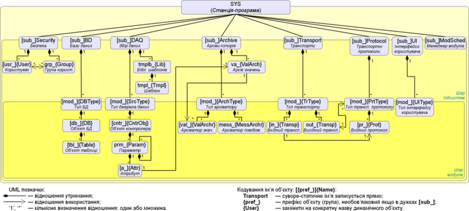

Ця сторінка описує інтерфейс програмування (API) додатку OpenSCADA.
OpenSCADA це проєкт відкритої SCADA-системи побудованої за модульним принципом. У документі міститься вичерпна інформація зі внутрішньої архітектури об'єктів OpenSCADA. Також надаються довідкові дані з методів та атрибутів цих об'єктів.
 Цей документ призначено для програмістів які бажають розібратися у архітектурі OpenSCADA та розробляти розширення до неї. Документ переважно не призначено для користувачів та інтеграторів OpenSCADA, хоча окремі речі можуть бути корисні і їм для розуміння роботи.
Цей документ призначено для програмістів які бажають розібратися у архітектурі OpenSCADA та розробляти розширення до неї. Документ переважно не призначено для користувачів та інтеграторів OpenSCADA, хоча окремі речі можуть бути корисні і їм для розуміння роботи.
Для розуміння документу потрібні знання концепції Об'єктно Орієнтованого Програмування (ООП) та універсальної мови моделювання програмного забезпечення (UML), а для можливості вивчення вихідного коду проєкту потрібні знання мови програмування C++. Крім того у документі містяться згадки про технології: реляційні БД, XML.
1 Внутрішня структура
З метою наочного та доступного сприйняття архітектури OpenSCADA на рисунку 1 зображено статичну діаграму класів OpenSCADA на універсальній мові моделювання (UML).
Із діаграми видно, що OpenSCADA містить модульні підсистеми: "Архіви-Історія", "Бази Даних", "Транспорти", "Транспортні протоколи", "Користувацькі Інтерфейси", "Збір Даних" та "Спеціадьні", а також підсистеми: "Безпека" та "Управління Модулями". На діаграмі наведено взаємозв'язки між модульними підсистемами та модулями відповідних типів.

Рис.1. Статична діаграма класів.
2 Загальна структура програми — модульність
Коренем, із якого будується вся програма, є об'єкт #TSYS. Корінь містить підсистеми #TSubSYS. Підсистеми можуть бути звичайними та модульними. Відмінність модульних підсистем чітко відстежується на рисунку 1. Таким чином, модульні підсистеми обов'язково містять перелік модульних об'єктів #TModule, наприклад, підсистема архівів-історії #TArchiveS містить модульні об'єкти #TTypeArchivator. Тим часом, звичайна підсистема таких об'єктів не містить, наприклад, підсистема безпеки #TSecurity (рис.2).

Рис.2. Ієрархічна структура OpenSCADA.
У процесі ініціалізації кореня #TSYS визначається глобальна змінна "SYS", яка може використовуватися для прямого звернення до кореню програми із будь якого її вузла. Ініціалізація кореню виконується одноразово із головної функції виклику. Після запуску, управління захоплюється кореневим об'єктом програми до зупинки. Кореневий об'єкт концентрує всі загальні функції OpenSCADA.
Продовженням кореневого об'єкту #TSYS, що здійснює функції обслуговування потоку повідомлень програми, виступає об'єкт #TMess, який доступний посередництвом глобальної змінної "Mess" ініціалізованої коренем програми. Об'єкт містить функції кодування, декодування та локалізації повідомлень.
У підсистемах #TSubSYS реалізуються функції, що індивідуальні до кожної підсистеми, та із загальним для всіх підсистем доступом через об'єкт #TSubSYS. Модульна підсистема має можливість розширення функціональності посередництвом модулів, для чого вона надає доступ до модулів свого типа у вигляді модульних об'єктів.
Модуль, це складова частина модульної підсистеми. Модуль надає інформацію про себе, своє походження та функції, що експортуються. Окремо взятий модуль реалізує функціонал відповідно до власних потреб.
2.1 The root object system (TSYS)
Data:
Information variables of the program:
- PACKAGE_LICENSE — Distribution license of the program
- PACKAGE_DESCR — Brief description of the program
- PACKAGE_AUTHOR — Author of the program
- PACKAGE_SITE — Web site of the program support
Methods for coding of symbol sequences (enum — TSYS::Code):
- PathEl — element of the path (the characters: '/' and '%' to the form '%2f');
- HttpURL — address of the browser (http url);
- Html — special characters for use in html;
- JavaSc — end of line character for JavaScript;
- SQL — SQL-query value;
- Custom — selective coding of the specified characters;
- base64 — encoding in the standard Base64;
- FormatPrint — coding/masking of the formatting elements for functions like "printf";
- oscdID — coding of the nodes' identifiers;
- Bin — encoding of the binary data in text and vice versa;
- Reverse — invert the order of characters in the line;
- ToLower — convert to the lower case;
- ShieldSymb — shielding-encoding symbols with the slash symbol "\" and decoding their back to the real code;
- ShieldBin — shielding-encoding all binary symbols [\x0-\x8\xB-\xC\x0E-\x1F] with the slash symbol "\".
Types of representations of the integer in the function TSYS::int2str(), and TSYS::ll2str() (enum — TSYS::IntView):
- Dec — decimal;
- Oct — octal;
- Hex — hexadecimal.
Structure of redundant station (class — TSYS::SStat):
- int8_t lev; — station level;
- bool isLive; — flag "Station Alive";
- float cnt; — counter of requests to the remote station or timer of a re-connection try;
- ResMtx reqM; — the station requesting functional lock;
- SStat( int8_t ilev, bool iisLive = false, float icnt = 0 ) — station object constructor with level ilev, initiated as "Alive" iisLive and counter icnt;
- SStat( ) — constructor by default, initiated as as a missed and an inactive station;
- bool isActive( ) — station is active.
Structure of OpenSCADA task (class — TSYS::STask):
- STask( pthread_t ithr, char ipolicy, char iprior ); — constructor of the task's descriptor for thread ithr, it's scheduling policy ipolicy and priority iprior.
- float consumpt( ) const; — the task's last CPU time consumption, in seconds.
- float period( ); — the task's call instant periodicity, in seconds.
- string path; — path.
- pthread_t thr; — thread handler.
- uint8_t policy, phase; — scheduling policy and phase.
- int16_t prior; — scheduling priority.
- pid_t tid; — thread's identifier as a Linux process's ID.
- ResString cpuSet; — used processors/cores list.
- void *(*task) (void *); — pointer to the task.
- void *taskArg; — arguments of the task.
- unsigned flgs; — flags, "enum Flgs { Detached = 0x01, FinishTask = 0x02; }".
- int64_t tm_beg, tm_end, tm_per, tm_pnt, cycleLost, lagMax, consMax; — statistic variables of the task execution.
Templates/definitions:
- NSTR_BUF_LEN — Length of string buffers for numbers (50 symbols).
- CFG_A_LEN — Maximum attribute size of the configuration cell in XML (100 symbols).
- DAQ_APER_FRQ — Frequency of representing the aperiodic invokes, like to "f_start", of the periodic processes in Hz (1000000).
- RECURS_DET_HOPS — Hops/depth number of the recursion detection.
- ARCH_BUF — Name of requesting the messages buffer ("<buffer>").
- ARCH_ALRM — Name of requesting the actual alarms table ("<alarms>").
- ARCH_ALRM_CH — Name of requesting for records change of the the actual alarms table ("<alarmsChange>").
- ARCH_NOALRM — Name of requesting for the buffer and archivers and without the actual alarms table ("<noalarms>").
- __func__ — The full name of the calling function.
- vmin (a,b) — Determination of the minimum value.
- vmax (a,b) — Definition of the maximum value.
Public methods:
- TSYS( int argi, char **argb, char **env ); — The initialisation constructor.
- bool isRunning( ); — Sign of the station running state — executing the main threaded module or waiting the stop signal.
- bool isFinalKill( ); — Sign "The final killing of". It is used for forced disconnection of blocked objects on the the final stage of shutdown.
- int stopSignal( ); — The return code in the case of system shutdown. Can be used as a sign of "System shutdown" of the various subsystems.
- void unload( ); — Unload subsystems.
- int start( ); — Start of the system. The function is finished only with the finishing of the system. The return code is returned.
- void stop( int sig = SIGUSR1 ); — Stop program by the signal sig, by default it is SIGUSR1 and SIGUSR2 reserved for projects manager.
- string id( ) const; — station ID.
- string name( ) const; — Localized name of the station.
- void setName( const string &vl ); — Setting the localized name of the station.
- string ico( string *tp = NULL ); — Common station icon obtaining with placing the file type to tp.
- string user( ) const; — The system user on behalf of which the system is running.
- string host( ); — Host name for the station run.
- void list( vector<string> &list ) const; — A list of registered subsystems in the system.
- bool present( const string &name ) const; — Check the availability of the subsystem.
- void add( TSubSYS *sub ); — Add/registration of the subsystem.
- void del( const string &name ); — Removing the subsystem.
- AutoHD<TSubSYS> at( const string &name ) const; — Connection to the specified subsystem.
- AutoHD<TUIS> ui( ); — Direct access to the subsystem "User interfaces".
- AutoHD<TArchiveS> archive( ); — Direct access to the subsystem "Archives".
- AutoHD<TBDS> db( ); — Direct access to the subsystem "Databases".
- AutoHD<TControllerS> daq( ); — Direct access to the subsystem "Data acquisition".
- AutoHD<TProtocolS> protocol( ); — Direct access to the subsystem "Protocols".
- AutoHD<TTransportS> transport( ); — Direct access to the subsystem "Transports".
- AutoHD<TSpecialS> special( ); — Direct access to the subsystem "Special".
- AutoHD<TModSchedul> modSchedul( ); — Direct access to the subsystem "Module".
- AutoHD<TSesurity> sesurity( ); — Direct access to the subsystem "Security".
- string workDir( ); — Working directory of the station.
- string modDir( ); — Directories with the modules of OpenSCADA, separated by ';', they can include a files' template into the end (/my/modules/path/lib*.so).
- string icoDir( ); — Directory of the icons of OpenSCADA.
- string docDir( ); — Directory of the documents of OpenSCADA.
- void setWorkDir( const string &wdir, bool init = false ); — Setting the working directory of the station.
- void setModDir( const string &mdir, bool init = false ); — Specifying the directories of the modules of OpenSCADA.
- void setIcoDir( const string &idir ); — Specifying of the directory of icons of OpenSCADA.
- void setDocDir( const string &idir ); — Specifying of the directory of documents of OpenSCADA.
- string cfgFile( ); — Name of configuration file of the system.
- XMLNode &cfgRoot( ); — Parsed structure of the configuration file.
- XMLNode *cfgNode( const string &path, bool create = false ); — Node of configuration getting by it path path. Elements of the path creation by it miss create.
- void modifCfg( bool chkPossibleWR = false ); — Configuration mark to modification or write possibility chkPossibleWR, for next saving to file.
- ResRW &cfgRes( ); — Lock of the access to the config file tree.
- string workDB( ); — The full name of the working database.
- string mainCPUs( ); — Used processors list.
- bool clockRT( ); — The Real-time clock selection for the tasks planning, else used the monotonic one (by defaults).
- int taskInvPhs( ); — Number of the tasks invoking phases.
- bool saveAtExit( ); — Sign - "Save configuration on exit".
- int savePeriod( ); — Frequency of the automatically saving the station in the database (seconds).
- bool modifCalc( ); — Set modification for the calculated objects.
- void setSelDB( const string &vl ); — Installation of the selected database for the specified boot.
- void setMainCPUs( const string &vl ); — Setting of used processors list.
- void setClockRT( bool vl ); — Setting of the Real-time clock selection for the tasks planning.
- void setTaskInvPhs( int vl ); — Setting number of the tasks invoking phases.
- void setSaveAtExit( bool vl ); — Setting of the sign - "Save configuration on exit".
- void setSavePeriod( int vl ); — Set the frequency of the automatically saving of the station to the database (seconds).
- void setModifCalc( bool vl ); — Set of setting the modification for the calculated objects.
- string selDB( ); — Chosen DB. Used for selective loading from the specified database in the subsystem "DB".
- void setWorkDB( const string &wdb ); — Setting of the full name of the working database.
- bool chkSelDB( const string &wDB ); — The function of checking for compliance of the specified database wDB with the selected "selDB()".
- XMLNode *cfgCtx( bool last = false ); — The global configuration context of the interstation copying or the last setting link, for the access lock used cfgLoadSaveM().
- void setCfgCtx( XMLNode *vl, bool last = false ); — Set the global configuration context of the interstation copying or the last setting link, for the access lock used cfgLoadSaveM(). At any operation with the global configuration context the last setting link is cleared.
- ResMtx &cfgLoadSaveM( ); — Lock of the loading and saving configuration.
- static void sighandler( int signal ); — Function of the default handler of the signals of the system as a whole.
- unsigned long long sysClk( ); — The estimated frequency of the processor on which the system works (Hz).
- void clkCalc( ); — Calculation of frequency of the processor on which the system works. It is called periodically for the systems with variable CPU frequency.
- unsigned long long shrtCnt( ); — The function of the measurement of small intervals of time by the counter of the CPU cycles. Returns the value of the counter of CPU cycles.
- static long HZ( ); — Time of the system teak of the CPU.
- void taskCreate( const string &path, int priority, void *(*start_routine)(void *), void *arg, int wtm = 5, pthread_attr_t *pAttr = NULL, bool *startSt = NULL ); — Create task (thread) with id path, priority (-1...99), task's function start_routine and it argument arg, and also wait for user's code start by flag startSt.
- void taskDestroy( const string &path, bool *endrunCntr = NULL, int wtm = 5, bool noSignal = false ); — Destroy task with id path, start control flag startCntr. Use noSignal for exclude signal SIGALRM send to the task.
- void taskSendSIGALRM( const string &path ); — Sending the termination signal "ALARM" to a task with id path.
- double taskUtilizTm( const string &path, bool max = false ); — Utilization of CPU time, in seconds, for task path or it's maximum max.
- static bool taskEndRun( ); — Check for the task endrun by signal SIGUSR1.
- static const STask& taskDescr( ); — Get reference to the task's descriptor.
- static int sysSleep( float tm ); — System sleep in seconds up to nanoseconds (1e-9).
- time_t sysTm( ); — System time fast access, from updated cell
- static int64_t curTime( clockid_t clc = CLOCK_REALTIME ); — The clock clc time in microseconds from the beginning of the era (01.01.1970).
- static uint64_t curTimeN( clockid_t clc = CLOCK_REALTIME ); — The clock clc time in nanoseconds from the beginning of the era (01.01.1970).
- string prjUserDir( ); — Directory of the user projects.
- bool prjCustMode( ); — Custom mode of projects.
- void setPrjCustMode( bool vl ); — Set for custom mode of projects.
- string prjNm( ); — Project name of the configuration.
- void setPrjNm( const string &vl ); — Set project name of the configuration.
- bool prjSwitch( const string &prj, bool toCreate = false ); — Switch to project prj.
- int prjLockUpdPer( ); — Get project lock updating period, zero for the lock disable.
- bool prjLock( const char *cmd ); — Project lock process for the command cmd ("hold", "free", "update").
- static void taskSleep( int64_t per, const string &cron = "", int64_t *lag = NULL ); — The function of the flow sleep by the grid of absolute time with the period per in the nanosecond or for the scheduled time cron. If set lag then to it will return different value from real and planed wake up time (lost cycles).
- static time_t cron( const string &vl, time_t base=0 ); — Planning the execution time on the format of the standard Cron vl beginning at the basic time base or at the current time if the base is not specified.
- static bool eventWait( bool &m_mess_r_stat, bool exempl, const string &loc, time_t time=0 ); — Function of the event waiting exempl for the variable m_mess_r_stat within a specified time interval time for the source loc.
- bool cntrEmpty( ); — Debug counters checking to empty.
- double cntrGet( const string &id ); — Debug counter id getting.
- void cntrSet( const string &id, double vl ); — Debug counter id setting to value vl.
- void cntrIter( const string &id, double vl ); — Debug counter id iteration to value vl.
- bool rdEnable( ); — Redundancy enabled, at least one redundancy station presented.
- bool rdActive( ); — Redundancy active, at least one active station presented.
- void rdStList( vector<string> &ls ); — List of ls stations into the redundancy.
- SStat rdSt( const string &id ); — Get copy of state structure of the redundancy station id.
- map<string, SStat> rdSts( ); — Get copy of list of state structures of redundancy stations.
- int rdStLevel( ); — Current station level into the redundancy system.
- void setRdStLevel( int vl ); — Set current station level into the redundancy system.
- float rdTaskPer( ); — Period of execution of the redundancy processing task.
- void setRdTaskPer( float vl ); — Set period of execution of the redundancy processing task.
- int rdRestConnTm( ); — Time of the retry attempts to reconnect to the backup station after its loss in seconds.
- void setRdRestConnTm( int vl ); — Set time of the retry attempts to reconnect to the backup station after its loss in seconds.
- string rdStRequest( XMLNode &req, const string &st = "" ); — Common request req to pointed redundancy station st.
- static string int2str( int val, IntView view=Dec ); — Transformation of a signed integer to the string of the type of view view.
- static string uint2str( unsigned val, IntView view=Dec ); — Transformation of unsigned integer to the string type of view view.
- static string ll2str( long long val, IntView view=Dec ); — Transformation of a long integer (64bit) to the string type of view view.
- static string real2str( double val, int prec=15, char tp='g'); — Real transformation with an accuracy prec signs and type tp to the string.
- static double realRound( double val, int dig=0, bool toint=false ); — Rounding the real number to the specified digit dig after the decimal point with the possibility of transformation to integer after rounding toint.
- static string atime2str( time_t tm, const string &format = "", bool gmt = false ); — Astronomic UNIX time tm conversion to a string, in the format of the POSIX-function "strftime()" or "gmtime()", for gmt.
- static string time2str( double tm ); — Convert time interval, in seconds, to string like "1hour 23min 10sec".
- static string cpct2str( double cnt ); — Traffic counter cnt (bytes) convert to string like "12.5KiB".
- static double str2real( const string &val ); — String transformation to the real.
- static time_t str2atime( const string &val, const string &format = "", bool gmt = false ) — String time val conversion to an astronomic UNIX time, in the format of the POSIX-function "strptime()", and by the function "mktime()" or "timegm()", for gmt.
- static string addr2str( void *addr ); — Convert addresses into string.
- static void *str2addr( const string &str ); — Convert string into the address.
- static string strTrim( const string &val, const string &cfg = " \n\t\r" ); — Deletes from the original string val pointed into cfg (mostly empty) characters at the beginning and end of it.
- static string strSepParse( const string &path, int level, char sep, int *off = NULL ); — Parsing of the string path into the components separated by the dividing symbol sep, beginning with the offset off and controlling the offset of the element end in itself.
- static string {strParse,strParseEnd}( const string &str, int level, const string &sep, int *off = NULL, bool mergeSepSymb = false ); — Parse function's "strSepParse()" expanded version which allow using multi-symbols separators and one symbol merging. strParseEnd does the same but from the end.
- static string strLine( const string &str, int level, int *off = NULL ); — Parsing text lines for different ways to the end of a line (CR, LF and CR/LF).
- static string pathLev( const string &path, int level, bool decode = true, int *offCmtbl = NULL, int *off = NULL ); — Obtaining of the element/token level of the path with the ability of their decode, starting with the offset off (stopping on the next token begin) or offCmtbl (stopping on next symbol of the current token end — for compatibility).
- static string pathLevEnd( const string &path, int level, bool decode = true, int *off = NULL ); — Obtaining of the element/token level of the path from the end with the ability of their decode, starting with the offset off (stopping on the next token end).
- static string path2sepstr( const string &path, char sep = '.' ); — Transformation the path into string with the separator sep of the elements.
- static string sepstr2path( const string &str, char sep = '.' ); — Transformation of the string with the separator sep of the elements into the path.
- static string strEncode( const string &in, Code tp, const string &opt = "" ); — Encoding of the string by the specified rule tp and the option opt (symbols by "Custom").
- static string strDecode( const string &in, Code tp = Custom, const string &opt = "" ); — Decoding of the string in by the specified rule tp and the option opt (separator or "<text>" for "Bin").
- static string strMess( const char *fmt, ... ); — Formation of the string by the template fmt and arguments. It is implemented on the basis of "printf".
- static string strLabEnum( const string &base ); — Individual string labels from base forming by increment at end. Supported numbering into decimal, hexadecimal (prefix "0x") or octal (prefix "0") notation.
- string strCompr( const string &in, int lev=-1); — Compression of the string in with the compression level lev.
- string strUncompr( const string &in ); — Decompression of the string in.
- static inline uint16_t getUnalign16( const void *p ); static inline uint32_t getUnalign32( const void *p ); static inline uint64_t getUnalign64( const void *p ); — Unaligned read for unsigned
- static inline int getUnalignInt( const void *p ); — Unaligned read for integer from buffer by offset.
- static inline float getUnalignFloat( const void *p ); — Unaligned read by real "float" from buffer by offset.
- static inline double getUnalignDbl( const void *p ); — Unaligned read by real "double" from buffer by offset.
- static uint16_t i16_LE( uint16_t in ); static uint32_t i32_LE( uint32_t in ); static uint64_t i64_LE( uint64_t in ); — Byte order conversion for integer in from Little-Endian (LE) to internal represent.
- static uint16_t i16_BE( uint16_t in ); static uint32_t i32_BE( uint32_t in ); static uint64_t i64_BE( uint64_t in ); —Byte order conversion for integer in from Big-Endian (BE) to internal represent.
- static float floatLE( float in ); static double doubleLE( double in ); — Real number in conversion from internal to format IEEE754 Little-Endian (LE).
- static float floatLErev( float in ); static double doubleLErev( double in ); — Real number in conversion from format IEEE754 Little-Endian (LE) to internal.
- static float floatBE( float in ); static double doubleBE( double in ); — Real number in conversion from internal to format IEEE754 Big-Endian (BE).
- static float floatBErev( float in ); static double doubleBErev( double in ); — Real number in conversion from format IEEE754 Big-Endian (BE) to internal.
- string optDescr( ); — Full localized help on the options of the command line and parameters of the configuration file.
- string getCmdOpt( int &curPos, string *argVal = NULL ); static string getCmdOpt_( int &curPos, string *argVal, int argc, char **argv ); — Command line parameters parsing by cursor scanning curPos. Return argument name and it's possible value into argVal. Implement formats for short keys: "-v", "-v val", "-abcv", "-abcv val"; and long keys: "--var", "--var=val", "--var val".
- bool cmdOptPresent( const string &opt ); — Check the command-line option opt for presence.
- string cmdOpt( const string &opt, const string &setVl = "" ); — Get command-line option opt. Set it at setVl if pointing.
- int permCrtFiles( bool exec = false ); — get permission for files created OpenSCADA in form 0777 (RWXRWXRWX), where exec is not mask the bit 01.
- ResMtx *commonLock( const string &nm ); — creates and gets a lock for the name nm — for non multithread system functions, typically.
- static void ctrListFS( XMLNode *nd, const string &fsBase, const string &fileExt = "" ); — Browsing list for file system's items from base fsBase, for the files with extensions fileExt in list "png;jpeg;gif;".
Public attributes:
- AutoHD<TModule> mainThr; — Connection to a module executing in the main thread.
Short calls for global functions into "OSCADA" namespace:
- template <class fVal> fVal fmin( fVal a, fVal b ); template <class fVal> fVal fmax( fVal a, fVal b ); — functional templates for obtain of two values minimum and maximum.
- inline string i2s( int val, TSYS::IntView view = TSYS::Dec ) —> TSYS::int2str(val, view);
- inline string u2s( unsigned val, TSYS::IntView view = TSYS::Dec ) —> TSYS::uint2str(val, view);
- inline string ll2s( long long val, TSYS::IntView view = TSYS::Dec ) —> TSYS::ll2str(val, view);
- inline string r2s( double val, int prec = 15, char tp = 'g' ) —> TSYS::real2str(val, prec, tp);
- inline double rRnd( double val, int dig = 0, bool toint = false ) —> TSYS::realRound(val, dig, toint);
- inline string atm2s( time_t tm, const string &format = "", bool gmt = false ) —> TSYS::atime2str(tm, format, gmt);
- inline string tm2s( double tm ) —> TSYS::time2str(tm);
- inline int s2i( const string &val ) —> atoi(val.c_str());
- inline long s2l( const string &val, int base = 10 ) —> strtol(val.c_str(), NULL, base);
- inline unsigned long s2u( const string &val, int base = 10 ) —> strtoul(val.c_str(), NULL, base);
- inline long long s2ll( const string &val ) —> atoll(val.c_str());
- inline double s2r( const string &val ) — TSYS::str2real(val);
- inline string sTrm( const string &val, const string &cfg = " \n\t\r") —> TSYS::strTrim(val, cfg);
2.2 Object of the messages system (TMess)
Data:
Types (levels) of messages (enum — TMess::Type):
- Debug (0) — debug;
- Info (1) — information;
- Notice (2) — the notification;
- Warning (3) — warning;
- Error (4) — error;
- Crit (5) — critical situation;
- Alert (6) — alert;
- Emerg (7) — emergency;
- MaxLev (79) — maximum message level, where [0...7] are the generic named levels and the second digit is them sub-levels.
Direction for the messages (enum — TMess::Direct):
- DIR_SYSLOG (0x1) — to SYSLOG;
- DIR_STDOUT (0x2) — to standard output;
- DIR_STDERR (0x4) — to standard errors output;
- DIR_ARCHIVE (0x8) — to messages archive.
The structure of the message (class — TMess::SRec):
- SRec( ); SRec( time_t itm, int iutime = 0, const string &icat = "", int8_t ilev = 0, const string &imess = "" ); — the class constructors;
- bool operator==( SRec &vl ); — the object comparing;
- time_t time; — time of the message;
- int utime; — microsecond of the message time;
- string categ; — category of messages (usually the way inside the system);
- int8_t level; — the level of the message;
- string mess; — message.
Templates:
- _(mess); trS(mess) — Wrappers over the translation of the messages function for the provision of the accepted by the most of the programs translation of the messages. trS() also provides the prestoring, when the base message stored together the catalogue, that is "{base}\000{cat}" and what is translated really in second call inward the translation context or _().
- trD(base) — Wrapper over the text variables dynamic translation using the translation context to the function translGet().
- trD_L(base,lng); trD_U(base,usr); trD_LU(base,lng,usr) — Wrappers over the text variables dynamic translation functions by language and user.
- trDSet(base,mess) — Wrapper over the text variables dynamic translation set using the translation context to the function translSet().
- trDSet_L(base,lng,mess); trDSet_U(base,usr,mess); trDSet_LU(base,lng,usr,mess) — Wrapper over the text variables dynamic translation set functions by language and user.
- FTM(rec); FTM2(tm, utm) — Get a full time of the message, in microseconds, using the two fields of time of the message structure.
- mess_lev() — The system's messages level. Often used for debug mode check (=Debug).
- message( cat, lev, fmt, args ... ) — Formation of the the full message.
- mess_debug( cat, fmt, args ... ) — Formation of the debug message.
- mess_info( cat, fmt, args ... ) — Formation of the information message.
- mess_note( cat, fmt, args ... ) — Formations of the message - notification.
- mess_warning( cat, fmt, args ... ) — Formation of the warning message.
- mess_err( cat, fmt, args ... ) — Formation of the error message.
- mess_crit( cat, fmt, args ... ) — Formation of the critical condition message.
- mess_alert( cat, fmt, args ... ) — Formation of the alarm message.
- mess_emerg( cat, fmt, args ... ) — Formation of the emergency message.
- message_( cat, lev, fmt, args ... ) — Formation of the the full message (selected level and debug categories are ignored).
- mess_debug_( cat, fmt, args ... ) — Formation of the debug message (selected level and debug categories are ignored).
- mess_info_( cat, fmt, args ... ) — Formation of the information message (selected level is ignored).
- mess_note_( cat, fmt, args ... ) — Formations of the message - notification (selected level is ignored).
- mess_warning_( cat, fmt, args ... ) — Formation of the warning message (selected level is ignored).
- mess_err_( cat, fmt, args ... ) — Formation of the error message (selected level is ignored).
- mess_crit_( cat, fmt, args ... ) — Formation of the critical condition message (selected level is ignored).
- mess_alert_( cat, fmt, args ... ) — Formation of the alarm message (selected level is ignored).
- mess_emerg_( cat, fmt, args ... ) — Formation of the emergency message (selected level is ignored).
Public methods:
- void load( ); — Download.
- void save( ); — Saving.
- string codeConv( const string &fromCH, const string &toCH, const string &mess); — Conversion of the codepage of the messages.
- string codeConvIn( const string &fromCH, const string &mess); — Conversion the codepage of the messages into the internal system codepage.
- string codeConvOut ( const string &toCH, const string &mess); — Conversion of the message from the internal system codepage.
- string I18N( const string &mess, const char *mLang = NULL, const char *d_name = NULL ); — Getting the message mess in the language mLang for the system translation from the directory d_name, NULL for the OpenSCADA core.
- string lang( ); — Language of the system, as en_US.UTF-8.
- string langCode( const string &user = "", bool onlyUser = false ); — Language code of the system. Specify user for obtaining its language and onlyUser for only that.
- string &charset( ); — The system codepage.
- int logDirect( ); — Receivers to whom the system messages (stdout, stderr, syslog, archive) are sent.
- int messLevel( ); — The level below which the messages are ignored.
- static bool messLevelTest( int8_t condLev, int8_t messLev ); — The message level testing for messLev >= condLev counting the message sub-levels — the second digit, where condLev is ±[0...7] and messLev is ±[0...79].
- string selDebCats( ); — Selected debug categories (by separated ';' list).
- bool isUTF8( ); — Internal codepage is UTF-8.
- void setLang( const string &lang ); — Setting of the system language (localization).
- void setLogDirect( int dir ); — Setting receivers to which the system messages are sent. For dir the bit mask is used. Where:
- 1 — to syslog;
- 2 — to stdout;
- 4 — to stderr;
- 8 — to the archive.
- void setMessLevel( int level ); — Setting a minimum level of processed messages.
- void setSelDebCats( const string &vl ); — Debug categories set (by separated ';' list).
- void put( const char *categ, int8_t level, const char *fmt, ... ); — The message forming for the current time with the category categ, the level, the formatted message fmt and the followed arguments.
- void put_( const char *categ, int8_t level, const char *fmt, ... ); void putArg( const char *categ, int8_t level, const char *fmt, va_list ap ); — The message forming for the current time (selected level and debug categories are ignored) with the category categ, the level, the formatted message fmt and the followed arguments.
- void get( time_t b_tm, time_t e_tm, vector<TMess::SRec> &recs, const string &category = "", int8_t level = Debug ); — Get the message from the archive for the period of time b_tm — e_tm under the category template category and minimum level level.
- string langCodeBase( ); — The language of basic variables of the text messages.
- string langBase( ); — The language-locale of basic variables and the locales list used in the project translation, separated by ';'.
- string langToLocale( const string &lang ); — Getting the complete locale from langBase() at the language lang.
- bool translCfg( ); — The configuration translation sign, combined as "langCodeBase().size() && langCode() != langCodeBase()".
- bool translDyn( bool plan = false ); — Mode "Dynamic translation" or the plan to next start.
- bool translEnMan( ); — The sign "Enabled translations manager", for activation of the built translation messages index and the translation manager.
- string translLangs( ); — List of translation languages, into the manager.
- string translFld( const string &lng, const string &fld, bool isCfg = false ); — Representing the translated field name by the field name fld and language lng for configuration isCfg or DB.
- bool isMessTranslable( const string &vl ); — Checking the message vl for availability of it translation, has no only space, digit and punctuation symbols.
- void setLangBase( const string &vl ); — Setting the language-locale of basic variables and the locales list used in the project translation.
- void setTranslDyn( bool val, bool plan = true ); — Setting the mode "Dynamic translation" or the plan to value val for next start.
- void setTranslEnMan( bool vl, bool passive = false ); — Setting "Enabled translation manager" to value vl and passive mode passive.
- void setTranslLangs( const string &vl ); — Setting a list of translation languages.
- string translGet( const string &base ); — Getting translation for base text variable using the translation context.
- string translGet( const string &base, const string &lang, const string &src = "" ); string translGetU( const string &base, const string &user, const string &src = "" ); string translGetLU( const string &base, const string &lang, const string &user, const string &src = "" ); — Getting translation for base text variable for language lang or user and optional source src.
- string translSet( const string &base, const string &mess ); — Setting translation for base text variable to value mess using the translation context.
- string translSet( const string &base, const string &lang, const string &mess, bool *needReload = NULL ); string translSetU( const string &base, const string &user, const string &mess, bool *needReload = NULL ); string translSetLU( const string &base, const string &lang, const string &user, const string &mess, bool *needReload = NULL ); — Setting translation for base text variable for language lang or user and optional source src to value mess.
- void translReg( const string &mess, const string &src, const string &prms = "" ); — Registering the translated message mess with source src and appended parameters prms into the translations index.
- string translCacheGet( const string &key, bool *ok = NULL ); — Getting the translation message at the key in the form "{lang}#{base}[\000{cat}]" from the translation cache. Where cat' can be: EMPTY — for dynamic messages, "sys" — for system messages and "user" — for the users used in the dynamic language obtaining. You can pass ok for detection the message really placing in the cache.
- void translCacheSet( const string &key, const string &val ); — Setting the translation message val at the key to the translation cache.
- void translCacheLimits( time_t tmLim = 0, const char *clrCat = NULL ); — Processing the translation cache limits at the size trMessCache and the nonzero time tmLim. Also that can clear the messages in the category clrCat.
- void translIdxCacheUpd( const string &base, const string &lang, const string &mess, const string &src ); — Updating the operative translation messages' index and cache in the MULTILANGUAGE-DYNAMIC mode.
- bool translItSplit( const string &base, const string &srcFltr = "" ); — Splitting the BASE message base per it sources and only for matched ones to srcFltr.
- bool translItRemTrs( const string &base, const string &srcFltr = "" ); — Removing the BASE message base from the individual messages table "Trs" and only for matched sources to srcFltr.
- string trCtx( const string &user_lang = mess_TrModifMark, bool *hold = NULL ); — Getting (by default) and registering(no empty)/clearing(empty) the translation context user_lang bound to the call pthread. hold can be pointed to detect the context already registered and do not clear that.
- static string labStor( bool nogen = false ); static string labStorRemGenStor( ); static string labSecCRON( ); static string labSecCRONsel( ); static string labTaskPrior( ); static string labMessCat( ); static string labStdOutTrs( ); — Common help labels.
- int getUTF8( const string &str, int off = 0, int32_t *symb = NULL ); — Get and parse a UTF-8 symbol.
- static string setUTF8( int32_t symb ); — Set, form and return a UTF-8 symbol from their code symb.
2.3 Object subsystem (TSubSYS)
Public methods:
- TSubSYS( const string &id, bool mod = false ); — Initialize the constructor. Sign mod indicates that subsystem is module one.
- string subId( ) const; — ID of the subsystem.
- virtual string subName( ); — Localized name of the subsystem.
- bool subStartStat( ); — Sign of the subsystem execution.
- bool subModule( ) const; — Sign of the modularity of the subsystem.
- virtual int subVer( ) const; — Version of the subsystems.
- virtual void subStart( ); — Start of the the subsystem.
- virtual void subStop( ); — Stop of the subsystem.
- void modList( vector <string> &list ); — List list of the modules of the modular subsystem.
- bool modPresent( const string &name ); — Check for the availability of the module name.
- void modAdd( TModule *modul ); — Add/registration of the module modul.
- void modDel( const string &name ); — Deleting of the module name.
- AutoHD <TModule> modAt( const string &name ) const; — Connection to the module name.
- virtual void perSYSCall( unsigned int cnt ); — Periodic call from system thread, with period 10 seconds and seconds counter cnt.
- virtual bool rdProcess( XMLNode *reqSt = NULL ); — Processing of redundancy of the subsystem, calls from the system's task of redundancy. reqSt pass a result of a state request to the redundancy station for this subsystem.
- virtual string optDescr( ); — Localized help on the options of the command line and parameters of the configuration file for the whole subsystem, includes its modules.
- TSYS &owner( ) const; — The system - the owner of the subsystem.
2.4 Object Module (TModule)
Data:
The data structure which identifies the module (class — TModule::SAt):
- SAt( const string &iid, const string &itype = "", int itver = 0 ); — initialize the constructor;
- bool operator ==(const TModule::SAt &amst ) const; — comparison function identifiers modules;
- string id; — the identifier of the module;
- string type; — the type of module (subsystem);
- int tVer; — version of the type of module (subsystem) to which the module is designed.
The structure of exported functions (class — TModule::ExpFunc):
- string prot; — a prototype of the function;
- string dscr; — localized description of the function;
- void (TModule::*ptr) (); — relative address of the function (with respect to the object module).
Public methods:
- TModule( const string &id ); — Initialize the constructor of module id.
- string modId( ); — ID of the module.
- string modName( ); — Localized name of the module.
- virtual void modStart( ); — Start of the module.
- virtual void modStop( ); — Stop of the module.
- virtual void modInfo( vector<string> &list ); — A list of information items list of the module.
- virtual string modInfo (const string &name ); — Getting the contents of the specified information item name. For get the item on different language, at [../ProgrammManual#h932-1 dynamic messages translation], you can set the name in way "{Name}:{lang}".
- virtual void perSYSCall( unsigned int cnt ); — Periodic call from system thread, with period 10 seconds and seconds counter cnt.
- void modFuncList( vector<string> &list ); — The list of exported functions list of the module.
- bool modFuncPresent( const string &prot ); — Check the availability of the specified function by its prototype prot.
- ExpFunc &modFunc (const string & prot); — Get the information about exported function of the module prot.
- bool modFunc( const string &prot, void (TModule::**offptr)(), bool noex = false ); — Getting the relative address offptr of the exported function prot. Returns TRUE for successful and the non-exceptional mode noex.
- string I18N( const string &mess, const char *mLang = NULL ); — Localisation of modular message mess in accordance with the current locale and user language mLang in the MULTILANGUAGE modes.
- virtual string optDescr( ); — Localized help on the options of the command line and parameters of the configuration file for the module.
- TSubSYS &owner( ) const; — Subsystem - the owner of the module.
Protected Attributes:
- string mModName; — Name of the module.
- string mModDescr; — Description of the module.
- string mModType; — Type of module.
- string mModVers; — Version of the module.
- string mModAutor; — Author of the module.
- string mModLicense; — License of the module.
- string mModSource; — Source/origin of the module.
Protected methods are:
- void modInfoMainSet( const string &name, const string &type, const string &vers, const string &author, const string &descr, const string &license, const string &source ); — Main module information set.
- void modFuncReg (ExpFunc * func); — Registration of the exported by module functions.
3 Subsystem "DB"
Subsystem "Databases" is represented by the object TBDS, which contains a modular objects of the following types of DB TTypeBD. Each type of database contains objects of individual databases of that type TBD. Each database in its turn, contains the objects of their tables TTable (Fig. 3).

Fig. 3. Hierarchical structure of the subsystem "DB".
The subsystem provides the basic functions to access the type of database, as well as generalized functions for the manipulation of the databases and tables. For example, to hide the source of data, which may be a configuration file, the functions of an abstract access to the data source are provided. For the storage system-wide data the system table and the function of the abstract to access it are provided. Consequently, system-wide data can be stored in the configuration file and in the database table. More about the data organisation conception you can read in the Data in OpenSCADA and their storage section.
Being a modular object, the type of database (TTypeBD) provides access to the implementation of the mechanism of one or another database. Access is made through a public databases of the module of a given type of database. Open/registered database is described in the table of databases to be opened or in the configuration file. There is, the so-called, the working database, which is always opens and is shown in the configuration file. DB which support the SQL-queries can grant access based on direct SQL-queries.
While working, the components of OpenSCADA open tables (TTable) available in the database and work with them.
3.1 Object of subsystem "Database" (TBDS)
Data:
Flags of the function dbList() (enum – TDBS::DBLsFlg):
- LsNoFlg (0) — no list flag;
- LsCheckSel (0x01) — points to the necessity of verifying the fact of boot from the selected database and to insert to the db list the only selected one;
- LsInclGenFirst (0x02) — include the Generic Storage "*.*" in the first.
Flags of the queries to the storage (enum – TDBS::ReqGenFlg):
- NoFlg (0) — no query flag;
- NoException (0x01) — do not generate the exceptions, return error result;
- OnlyCfg (0x02) — force request to the configuration file, in genPrmGet(), genPrmSet() and dataSet() only;
- Specific flags
- UseTranslation (0x04) — use the translation of the text variable, in genPrmGet() and genPrmSet() only;
- UseCache (0x04) — use the cache, in dataSeek() only, defines the seek cache using — preloading the result in whole and significant acceleration, as the unique cacheKey this function uses the cfg address.
- UseAllKeys (0x04) — use all keys, in dataDel() only, is used to indicate the necessity of the all keys set fro their using while deleting with the restoration of the original state of the keys selection when the function is finished. If this flag is not set, the early selected keys are used to perform the operation.
Public generic static methods:
- static string fullDBSYS( ); — The full name of the system table.
- static string fullDB( ); — The full name of the table with a description of the registered databases.
- static string realDBName( const string &bdn, bool back = false ); — Conversion of the full template name of the database or table (of view *.*.myTbl) in the real name. Actually the replacement of the special elements '*' by the elements of the working DB. Use back for the backward conversion.
- static string dbPart( const string &bdn, bool tbl = false ); — Getting the generic storage address part or the table at tbl from the common storage name bdn.
- static void dbList( vector<string> &ls, char flags = LsNoFlg ); — List of available databases with the DBLsFlg flags.
- static AutoHD<TTable> tblOpen( const string &bdn, bool create = false ); — Opening the table bdn of the storage by it full path with the creation create at absence.
- static void tblClose( const string &bdn, bool del = false ); — Closing the table bdn of the storage by it full path with deleting at del.
- static bool dataSeek( const string &bdn, const string &path, int lev, TConfig &cfg, char flags = NoFlg, XMLNode *localCfgCtx = NULL ); — Complete scanning of the records on the storage according to the ReqGenFlg flags. If the DB name bdn or path path to the Configuration File are not pointed, their processing is skipped. More about conditions of using the Configuration File and the Data Bases read in the Data storing conception. localCfgCtx is used for loading from the local configuration context, prepared in dataSet(), and it missing causes for checking and using, at presence, the global configuration context SYS->cfgCtx().
- static bool dataGet( const string &bdn, const string &path, TConfig &cfg, char flags = NoFlg, XMLNode *localCfgCtx = NULL ); — Getting the record from the storage according to the ReqGenFlg flags. If the DB name bdn or path path to the configuration file are not pointed, their processing is skipped. More about conditions of using the Configuration File and the Data Bases read in the Data storing conception. localCfgCtx is used for loading from the local configuration context, prepared in dataSet(), and it missing causes for checking and using, at presence, the global configuration context SYS->cfgCtx().
- static bool dataSet( const string &bdn, const string &path, TConfig &cfg, char flags = NoFlg, XMLNode *localCfgCtx = NULL ); — Setting/Saving the record to the storage according to the ReqGenFlg flags. If the DB name bdn or path path to the configuration file are not pointed, their processing is skipped. More about conditions of using the Configuration File and the Data Bases read in the Data storing conception. localCfgCtx is used for saving to the local configuration context, is prepared for dataSeek() and dataGet(), and it missing causes for checking and using, at presence, the global configuration context SYS->cfgCtx().
- static bool dataDel( const string &bdn, const string &path, TConfig &cfg, char flags = NoFlg ); — Deleting the record in the storage according to the ReqGenFlg flags. If the DB name bdn or path path to the configuration file are not pointed, their processing is skipped. More about conditions of using the Configuration File and the Data Bases read in the Data storing conception.
- static bool dataDelTbl( const string &bdn, const string &path = "", char flags = NoFlg ); — The data container table common removing from the storage bbn and the configuration file path, according to the ReqGenFlg flags.
- static string genPrmGet( const string &path, const string &oval = "", const string &user = "root", char flags = NoFlg ); — Getting the generic parameter path from the Generic Storage "*.*.SYS" on behalf of the user and according to the ReqGenFlg flags. If the data are not available the value oval is returned. On the Configuration File there are used the object parameters by the tags "prm" and on the Data Base there is used the table "SYS".
- static void genPrmSet( const string &path, const string &val, const string &user = "root", char flags = NoFlg ); — Setting/Saving the generic parameter path to the Generic Storage "*.*.SYS" of the user and according to the ReqGenFlg flags.
Public methods:
- int subVer( ); — Subsystem version.
- int tblLifeTime( ); — Lifetime of the inactive tables closing, in seconds.
- void setTblLifeTime( int vl ); — Sets lifetime of the inactive tables closing in vl seconds.
- TElem &openDB_E( ) — The structure of the table of registered databases.
- AutoHD<TTypeBD> at( const string &iid ) — Referencing to the DB module(DB type).
3.2 Modular object of types of databases (TTypeBD)
| Inherits: |
TModule
|
| Inherited: |
By root objects of the modules of subsystem "DB".
|
Public methods:
- virtual string features( ); — Keyword list of features supported by the DB.
- virtual int lsPr( ) — The DB priority base [0...9] in the generic storages list.
- bool fullDeleteDB( ); — Sign of the complete removal of the database.
- void list( vector<string> &list ) const; — The list of registered (opened) databases.
- bool openStat( const string &idb ) const; — Check the availability of the specified opened database.
- string open( const string &id ); — Opening of the database. Returns the end created identifier.
- void close( const string &id, bool erase = false ); — Closing the database. If the sign erase is set, the database will be completely removed.
- AutoHD<TBD> at( const string &id ) const; — Connection to the opened database.
- TBDS &owner( ) const; — Subsystem - the owner of the module.
3.3 The object of the database (TBD)
| Inherits: |
TCntrNode, TConfig
|
| Inherited: |
By the database objects of the modules of subsystem "DB".
|
Public methods:
- TBD( const string &iid, TElem *cf_el ); — Initializing constructor.
- string id( ); — DB identifier.
- string fullDBName( ); — Full name a storage-DB.
- string name( ); — DB name.
- string dscr( ); — DB description.
- string addr( ) const; — Address of the database. The form of recording is different for each type of database.
- string codePage( ); — Codepage in which the data of the database are stored.
- int lsPr( ); — The DB priority in the generic storages list, in the range [0...99].
- double trTm_ClsOnOpen( ); — Transaction closing: after opening, seconds.
- double trTm_ClsOnReq( ); — Transaction closing: after request, seconds.
- int trPr_ClsTask( ); — Transaction closing: separate task priority.
- bool enableStat( ) const; — The state of the database: "Enabled".
- bool toEnable( ); — Sign of the DB: "To Enable".
- bool disabledByUser( ); — Sign of the node disabling by user, to prevent its enabling restore.
- void setName( const string &inm ); — Setting the DB name.
- void setDscr( const string &idscr ); — Setting the DB description.
- void setAddr( const string &iaddr ); — Setting the DB address.
- void setCodePage( const string &icp ); — Setting of the codepage for the storage of the DB data.
- void setLsPr( int vl ); — Setting the DB priority in the generic storages list, in the range [0...99].
- void setToEnable( bool ivl ); — Setting of the sign: "To Enable".
- virtual void enable( ); — Enabling of the DB.
- virtual void disable( ); — Disabling of the DB.
- virtual void allowList( vector<string> &list ) const; — The list of the tables in this DB.
- void list( vector<string> &list ) const; — The list of opened tables.
- bool openStat( const string &table ) const; — The sign that indicates of the fact that the requested table is opened.
- virtual void open( const string &table, bool create ); — Opening of the table. If the sign create is set, in the case of absence the table will be created.
- virtual void close( const string &table, bool del = false, long tm = -1 ); — Closing of the table. If the sign del is set, the table will be completely removed.
- AutoHD<TTable> at( const string &name ) const; — Connection to the table.
- virtual void sqlReq( const string &req, vector< vector<string> > *tbl = NULL, char intoTrans = EVAL_BOOL ); — Sending the SQL-request req to the DB and receiving the result in tabular form tbl. If set intoTrans to true then will open transaction for the request, else if set to false then transaction will close.
- virtual void transCloseCheck( ) — The function call periodic for opened transaction check to close for old transaction or overloaded.
- TTypeBD &owner( ) const; — DB type – the owner of the DB.
Protected attributes:
- ResMtx resTbls, connRes; — locks of the table and connection resources.
Protected methods:
- virtual TTable *openTable( const string &table, bool create ); — The modular method for opening the table.
3.4 The object of the table (TTable)
| Inherits: |
TCntrNode
|
| Inherited: |
By tables objects of the modules of subsystem "DB".
|
Data:
Flags of the SQL requests (enum – TTable::SQLFeqFlag):
- SQLNoFlg (0) — no list flag;
- SQLOrderForSeek (0x01) — sort-order the records at all requested fields, needed for PostgreSQL in the limiting SEEK requests;
- SQLFirstSkipForSeek (0x02) — use the FIRST and SKIP SELECT operators, needed for FireBird in the limiting SEEK requests.
Item of the table structure (class — TTable::TStrIt):
- string nm, tp, def; — field name, type and the default value;
- int key; — field key;
- TStrIt( ) — constructor by default;
- TStrIt( const string &inm, const string itp, int ikey, const string &idef = "" ) — the main parametric constructor.
Public methods:
- TTable( const string &name ); — Initializing constructor.
- string name( ); — Table name.
- string fullDBName( ); — Full name a storage-table into DB.
- virtual void fieldStruct( TConfig &cfg ); — Getting the structure of the table.
- virtual bool fieldSeek( int row, TConfig &cfg, const string &cacheKey = "" ); — Scanning the records cfg of the table by row, where cacheKey defines the seek cache using — preloading the result in whole and significant acceleration.
- virtual void fieldGet( TConfig &cfg ); — Request the specified record. The requested record is determined by the values of key cells of the original record cfg.
- virtual void fieldSet( TConfig &cfg ); — Setting the values of the specified record. In the case of absence the record will be removed.
- virtual void fieldDel( TConfig &cfg ); — Deleting of the specified record.
- virtual void fieldFix( TConfig &cfg, const string &langLs = "" ); — Internal request declaration of fixing fields, for the SQL request mostly. Use langLs for the languages list separated by ';' to create the corresponded translation columns.
- TBD &owner( ) const; — DB – the owner of the table.
- virtual string getSQLVal( TCfg &cf, uint8_t RqFlg = 0 ); — Get the SQL encoded value from cf for placing to the SQL request.
- virtual void setSQLVal( TCfg &cf, const string &vl, bool tr = false ); — Set the SQL encoded value to cf from the SQL response table.
- bool fieldSQLSeek( int row, TConfig &cfg, const string &cacheKey, int flags = SQLNoFlg ); — Unified-ANSI SQL variant of the fieldSeek() request with the TTable::SQLFeqFlag flags, which implements also the OpenSCADA multilaguage translation (the "TR" feature).
- void fieldSQLGet( TConfig &cfg ); — Unified-ANSI SQL variant of the fieldGet() request, which implements also the OpenSCADA multilaguage translation (the "TR" feature).
- void fieldSQLSet( TConfig &cfg ); — Unified-ANSI SQL variant of the fieldSet() request, which implements also the OpenSCADA multilaguage translation (the "TR" feature).
- void fieldSQLDel( TConfig &cfg ); — Unified-ANSI SQL variant of the fieldDel() request.
Protected attributes:
- time_t mLstUse; — time of the last usage;
- vector<TStrIt> tblStrct; — table structure, list of the table items;
- map<string, vector< vector<string> > > — container of the SEEK sessions in the PRELOAD mode;
4 Subsystem "Data acquisition"
The subsystem "Data acquisition" is represented by the TDAQS object which contains modular objects of the data sources' types TTypeDAQ and the objects of the libraries of parameters' templates of subsystem "Data acquisition" TPrmTmplLib. Object of the data sources types contains objects of the controllers TController and objects of the parameters' types TTypeParam. Parameters' types objects are provided by the controller module and contain the DB structure of the separate parameters' types (analog, digital ...). Controllers' objects contain parameters' objects TParamContr. Each parameter is associated with only one type of the parameter. For the attribute storage parameter is inherited from the values object TValue, which contains the attributes' values TVal. The library of the parameters' templates of this subsystem contains templates' objects TPrmTmpl. An example of the described hierarchical structure is shown in Fig. 4.

Fig. 4. Hierarchical structure of the subsystem "Data acquisition".
Subsystem contains the types of data sources. The source may be virtually any substance providing any data. Type of source can be divided into individual sources (controllers) within the limits of the particular type. For example, if we take the data from the operating system (OS), then the single source can be the separate operating system of the separate PC.
Data source (controller) is further divided (contains) into the parameters. The parameter is the part of the data source. In the case of the OS it will be, for example,: used RAM, the processor's frequency and many other parts.
Parameter, in its turn, contains the attributes, which provide the data. In addition to the basic data attributes can provide the related or detailing data. In the case of the same operating system and the memory usage, the attributes may not only provide the used memory, and also how much it all, how much in the swap, etc.
Some of the implementation of the data sources may provide the possibility of setting the structure of the parameter based on previously developed parameters' templates. For this purpose subsystem contains templates' libraries, which, in their turn, provide the parameters' templates . The example shows a library of templates "base" with the templates "digAlrm" and "smplBrd".
At the level of the subsystem the redundancy mechanism for data sources is provided. Redundancy means the possibility of coordinated work of several OpenSCADA stations to perform common task of data acquisition from the same data sources.
4.1 Object of subsystem "Data acquisition" (TDAQS)
Public methods:
- int subVer( ); — Version of the subsystem.
- void subStart( ); — Start the subsystem.
- void subStop( ); — Stop the subsystem.
- AutoHD<TTypeDAQ> at( const string &name ) const; — Connection to the type of data source.
- AutoHD<TCntrNode> daqAt( const string &path, char sep = 0, bool noex = false, bool waitForAttr = false, TCntrNode *ndBase = NULL ) const; — Generic connection to the DAQ node by path or separated by sep string, and from the base ndBase in the relative addressing. Set waitForAttr at the DAQ node waiting is an attribute. Do not throw an exceptions if set noex.
- AutoHD<TValue> prmAt( const string &path, char sep = 0, bool noex = false, TCntrNode *ndBase = NULL ) const; — Connection to the parameter by path or separated by sep string, and from the base ndBase in the relative addressing. Do not throw an exceptions if set noex.
- AutoHD<TVal> attrAt( const string &path, char sep = 0, bool noex = false, TCntrNode *ndBase = NULL ) const; — Connection to the parameter's attribute by path or separated by sep string, and from the base ndBase in the relative addressing. Do not throw an exceptions if set noex.
- void ctrListPrmAttr( XMLNode *nd, const string &addrBase, bool toPrm = false, char sep = 0, const string &pref = "", TCntrNode *ndBase = NULL ); — Browsing list for items of attributes of parameters or only the parameters DAQ by toPrm with prefix pref from path or separated by sep string from base address addrBase, and from the base ndBase in the relative addressing.
- string tmplLibTable( ); — Name of table to store the parameters' templates of the subsystem "Data acquisition".
- void tmplLibList( vector<string> &list ) const; — The list of available parameters' templates.
- bool tmplLibPresent( const string &id ) const; — Check the availability of the parameter's template id.
- void tmplLibReg( TPrmTmplLib *lib ); — Registration of the parameter's template lib.
- void tmplLibUnreg( const string &id, int flags = NodeNoFlg ); — Deleting/removing of the registration of the parameter's template id, according to the flags.
- AutoHD<TPrmTmplLib> tmplLibAt( const string &id ) const; — Connection to the parameter's template id.
- double rdRestDtTm( ); — Maximum depth of the archive data recovery when starting in hours.
- void setRdRestDtTm( double vl ); — Set of the maximum depth of the archive data recovery when starting in hours.
- void rdActCntrList( vector<string> &ls, bool isRun = false ); — The list of active controllers working in the redundancy scheme. When we indicate isRun there will be in the list only running controllers in this station.
- string rdStRequest( const string &cntr, XMLNode &req, const string &prevSt = "", bool toRun = true ); — Request req to the redundant station on behalf of the controller cntr. The station for the request is selected after specified in prevSt for the running remote controller when indicating toRun.
- TElem &elLib( ); — The structure of the table of the libraries if parameters' templates.
- TElem &elTmpl( ); — The structure of the table of parameters' templates.
- TElem &elTmplIO( ); — The structure of the attributes of parameters' templates.
- TElem &elErr( ); — The structure of the attribute(s) of parameters' errors.
4.2 Modular object of the controller's type (TTypeDAQ)
| Inherits: |
TModule, TElem
|
| Inherited: |
Root object of the modules of subsystem "Data acquisition".
|
Public methods:
- string DAQPath( ); — Getting for DAQ-address of the element.
- void modStart( ); — Start of the module.
- void modStop( ); — Stop of the module.
- void list( vector<string> &list ) const; — The list of the controllers.
- bool present( const string &id ) const; — Check for the availability of the specified controller object.
- string add( const string &id, const string &daq_db = "*.*" ); — Add the controller object. Returns the end created identifier.
- void del( const string &id ); — Delete the controller object.
- AutoHD<TController> at( const string &id, const string &who = "" ) const; — Connect to the controller object.
- bool tpPrmPresent( const string &name_t ); — Check for the availability of the specified controller type.
- unsigned tpPrmToId( const string &name_t ); — Getting of the index of the parameters' types by their names.
- int tpParmAdd( const char *id, const char *n_db, const char *name ); — Addition/registration of the parameters' types.
- unsigned tpPrmSize( ); — Quantity of the parameters' types.
- TTypeParam &tpPrmAt( unsigned id ); — Get the object of the parameters' type.
- virtual bool compileFuncLangs( vector<string> *ls = NULL ); — Request of the list of languages for which it is realised the possibility of formation of user procedures in this module, and check for fact of that support.
- virtual void compileFuncSnthHgl( const string &lang, XMLNode &shgl ); — Request the rules of the syntax highlight shgl for the specified language lang.
- virtual string compileFunc( const string &lang, TFunction &fnc_cfg, const string &prog_text, const string &usings = "", int maxCalcTm = 0 ); — compiling-registering of the user function on the supported programming language lang and on the source code of procedure prog_text, based on the procedure parameters fnc_cfg. Returns address of the compiled function's object, ready for execution.
- virtual bool redntAllow( ); — State of support the redundancy mechanisms by the module. Should be overridden and return TRUE if supported, otherwise FALSE.
Protected methods:
- virtual TController *ContrAttach( const string &name, const string &daq_db ); — Connecting of the controller. It must be obligatory overridden in the descendant of the module.
4.3 Controller's object (TController)
| Inherits: |
TCntrNode, TConfig
|
| Inherited: |
Objects of the modules of subsystem "Data acquisition".
|
Data:
Redundancy modes (enum TController::Redundant):
- Off (0) — Turned off;
- Asymmetric (1) — asymmetric;
- OnlyAlarms (2) — only alarms, suppressing on the reserve.
- Command specific
Public methods:
- TController( const string &name_c, const string &daq_db, TElem *cfgelem ); — Initializing constructor of the controller.
- string DAQPath( ); — Getting for DAQ-address of the element.
- string id( ); — Controller ID.
- string workId( ); — Work ID of the controller, including the ID of the module.
- string name( ); — Controller's name.
- string descr( ); — Controller's description.
- int64_t timeStamp( ); — Timestamp of the object changing as maximum of timestamps of the included parameter objects.
- virtual string getStatus( ); — Request function of the controller status.
- string DB( bool qTop = false ) const; — Storage name of the controller's instance, qTop for the storage queue top.
- string tbl( ) const; — The name of the table of DB of the controller's instance.
- string fullDB( bool qTop = false ) const; — The full name of the table of storage of the controller's instance, qTop for the storage queue top.
- void setName( const string &nm ); — Set the controller's name.
- void setDescr( const string &dscr ); — Set the controller's description.
- void setDB( const string &vl, bool qTop = false ); — Setting of the storage name of the controller's instance, qTop for the storage queue top.
- bool toEnable( ); — Sign "To enable the controller".
- bool toStart( ); — Sign "To start the controller".
- bool enableStat( ) const; — Status "Enable".
- bool startStat( ); — Status "Run".
- int messLev( ); — Messages level of diagnostic information.
- void start( ); — Controller's start.
- void stop( ); — Controller's stop.
- void enable( ); — Controller's enabling.
- void disable( ); — Controller's stopping.
- void list( vector<string> &list ) const; — Parameter's list in the controller.
- bool present( const string &id ) const; — Check for the availability of the parameter id.
- string add( const string &id, unsigned type ); — Addition the parameter id of the type type. Returns the end created identifier.
- void del( const string &id, int flags = NodeNoFlg ); — Deleting the parameter id, according the {TCntrNode,TParamContr}::EnDisFlag flags.
- AutoHD<TParamContr> at( const string &id, const string &who = "th_contr" ) const; — Connection to the controller's parameter id.
- bool redntUse( Redundant md = Asymmetric ); — Redundancy state for mode md.
- void setRedntUse( bool vl ); — Changing of the getting the data from the backup station mode.
- Redundant redntMode( ); — Redundancy mode ("<high>", "<low>", "<optimal>", {ForceStation}), enabling.
- void setRedntMode( Redundant vl ); — Setting of the redundancy mode, enabling.
- string redntRun( ); — Configuration of the preferred execution.
- void setRedntRun( const string &vl ); — Setting the configuration of the preferred execution.
- virtual void redntDataUpdate( ); — Operation of the data receiving from the backup station, called automatically by the service procedure of the redundancy scheme of the subsystem.
- virtual string catsPat( ); — List of the regular expression rules, separated by '|', for matching by category the messages generated by the object.
- virtual void messSet( const string &mess, int lev, const string &type2Code = "OP", const string &prm = "", const string &cat = "" ); — Formation of the DAQ-sourced messages for the parameter object prm ({PrmId}), or the controller object in whole if the parameter object is not specified, for the message mess, level lev and for the type code type2Code. This function generates the messages with the unified DAQ-transparency category {type2Code}{ModId}:{CntrId}[.{prm}][:{cat}].
- void alarmSet( const string &mess, int lev = -TMess::Crit, const string &prm = "", bool force = false ); — Formation of alarms (a violation) for the parameter object prm ({PrmId}\n{PrmNm}), or the controller object in whole if the object is not specified, the message mess and level lev. The negative value of the level lev is used to set and positive for removal of the violation. This function generates the violation and message with the category al{ModId}:{CntrId}[.{prm}] and the text {CntrNm} > {PrmNm}: {MessText}. The alarms clearance, as the setting also, works in the toggling mode, so means of passing the clearance messages to the message buffer, and the same clearance, only at the according violations presence, what may be disabled setting force.
- TTypeDAQ &owner( ) const; — The type of the data source (module) - the owner of the controller.
Protected attributes:
- bool enSt; — The sign "Enable".
- bool runSt; — The sign "Running".
Protected methods:
- virtual void enable_( ); — Enabling of the controller object. Usually at this stage the initialisation of the parameters' objects and their interfaces in the form of attributes is made, the attributes can sometimes be requested from the associated remote source.
- virtual void disable_( ); — Disabling the controller object.
- virtual void start_( ); — Starting the controller object. Usually at this stage the task of periodic or scheduled polling is created and started.
- virtual void stop_( ); — Stopping the controller object.
- virtual TParamContr *ParamAttach( const string &id, int type ); — Modular method of the creation/opening of the new parameter.
4.4 Parameters' type object (TTypeParam)
Public methods:
- TTypeParam( const char *iid, const char *iname, const char *idb = "", bool i_isPrmCntr = false ); — Initializing constructor.
- virtual void create( TParamContr *prm ); — Create or set the parameter prm type.
- virtual void destroy( TParamContr *prm ); — Remove or clean the parameter prm type.
- virtual string DB( TController *cntr ); — Get table name of the parameters of the controller cntr.
- void setDB( TController *cntr, const string &vl ); — Set the table name of the parameters of the controller cntr.
- virtual void enable( TParamContr *prm ); — To enable the parameter prm.
- virtual void disable( TParamContr *prm ); — To disable the parameter prm.
- virtual bool cfgChange( TParamContr *prm, TCfg &cfg ); — The configuration filed cfg of the parameter prm change.
- virtual void vlGet( TParamContr *prm, TVal &vo ); — Predicting function of the value getting, through the parameter prm. It is used for direct (synchronous) reading.
- virtual void vlSet( TParamContr *prm, TVal &vo, const TVariant &vl, const TVariant &pvl ); — Predicting function of the value setting, through the parameter prm. It is used for direct (synchronous) writing vl with the previous value into pvl.
- bool vlSetRednt( TVal &vo, const TVariant &vl, const TVariant &pvl ); — Processing of the values setting, mostly in the predicting function, under the redundancy. Returns true at processing the setting in the redundancy.
- virtual void vlArchMake( TParamContr *prm, TVal &val ); — Notifying function of the creation of the archive for the val attribute, through parameter prm. It is used to configure the created archive in accordance with the peculiarities of the data source.
- virtual void getVals( TParamContr *prm ); — Asynchronous mode internal realization, called into the controller object cycle for parameter prm.
- virtual bool cntrCmdProc( TParamContr *prm, XMLNode *opt ); — Function of requests' processing of the control interface, from parameter prm.
Public attributes:
- string name; — Parameter's type name.
- string descr; — Parameter's type description.
- string db; — DB of the parameter's type.
4.5 Object of the physical level parameter (TParamContr)
| Inherits: |
TConfig, TValue
|
| Inherited: |
Objects of the module's parameters of subsystem "Data acquisition".
|
Data:
Flags of the enabling/disabling modes of the node (enum TParamContr::EnDisFlag):
- TParamContr::NodeRemove_NoArch (TCntrNode::NodeSpecific) — do not remove archives at the DAQ-Parameter node removing.
Public methods:
- TParamContr( const string &name, TTypeParam *tpprm ); — Initializing constructor.
- string DAQPath( ); — Getting for DAQ-address of the element.
- string ownerPath( bool inclSelf = false ); — The parameter-owner path, include inclSelf the parameter.
- bool operator==( TParamContr & PrmCntr ); — Parameter's comparison.
- string id( ); — Parameter's ID (key).
- string name( ); — Parameter's name.
- string descr( ); — Parameter's description.
- bool toEnable( ); — Sign "To enable parameter".
- int64_t timeStamp( ); — Timestamp of the object changing accounting the included parameter objects.
- bool enableStat( ) const; — Status "Enable".
- void setName( const string &inm ); — Setting of the parameter's name.
- void setDescr( const string &idsc ); — Setting of the parameter's description.
- void setToEnable( bool vl ); — Setting of the sign "To enable the parameter".
- void list( vector<string> &list ) const; — Parameter's list in the parameter.
- bool present( const string &id ) const; — Check for the availability of the parameter id.
- string add( const string &id, unsigned type = 0 ); — Addition of the parameter id of the type type. Returns the end created identifier.
- void del( const string &id, int flags = NodeNoFlg ); — Deleting the parameter id, according the {TCntrNode,TParamContr}::EnDisFlag flags.
- AutoHD<TParamContr> at( const string &id, const string &who = "th_prm" ) const; — Connection to the controller's parameter id.
- TTypeParam &type( ) const; — Parameter's type.
- virtual TElem *dynElCntr( ); — Container of the dynamic elements of the DAQ attributes.
- virtual void enable( ); — Enable the parameter object, the formation of the attributes set and filling them with the value of unreliability is made.
- virtual void disable( ); — Disable the parameter object.
- TController &owner( ) const; — Controller – the parameter's owner.
Protected methods:
- virtual void setType( const string &tpId ); — called to change the parameter type to tpId and can be processed in the module object to change own data.
4.6 Object of the value (TValue)
Public methods:
- bool dataActive( ); — Activity (updatable) flag of data.
- virtual string DAQPath( ); — Getting for DAQ-address of the element.
- void vlList( vector<string> &list ) const; — Getting the attributes' list.
- bool vlPresent( const string &name ) const; — Check for the availability of the specified attribute.
- AutoHD<TVal> vlAt( const string &name ) const; — Connection to the attribute.
Protected methods:
- TConfig *vlCfg( ) — Getting of the associated configuration object. If NULL is returned then there is no associated configuration object.
- void setVlCfg( TConfig *cfg ); — Setting of the associated configuration object cfg.
- bool vlElemPresent( TElem *ValEl ); — Check for the availability if the attributes' elements ValEl.
- void vlElemAtt( TElem *ValEl ); — Attach of the data structure ValEl.
- void vlElemDet( TElem *ValEl ); — Detach of the data structure ValEl.
- TElem &vlElem( const string &name ); — Get the data structure by its name name.
- virtual TVal* vlNew( ); — Called at the stage of a new attribute creation. It can be overridden to implement the particular behaviour within its own, inherited from the TVal, class during the access of the attribute.
- virtual void vlGet( TVal &vo ); — Called for an attribute with the direct reading mode TVal::DirRead (synchronous mode, or reading from an internal buffer of the object) when reading the value in order to directly read the value from the physical source or the object buffer.
- virtual void vlSet( TVal &vo, const TVariant &vl, const TVariant &pvl ); — Called for the attribute vo with the direct recording mode TVal::DirWrite (synchronous or writing to an internal buffer of the object) when set to immediate record the value vl to the physical source or buffer object, with the previous value pvl.
- virtual void vlArchMake( TVal &val ); — Called at the stage of creation the value archive with the val attribute as the source in the order to initialise the qualitative characteristics of the archive buffer according to the characteristics of the data source and polling.
4.7 Attribute's object (TVal)
Data:
Additional flags to the object #TFld (enum TVal::AttrFlag):
- TVal::DirRead(0x100) — Flag for the direct reading of the value;
- TVal::DirWrite(0x200) — Flag for the direct writing of the value;
- TVal::Dynamic(0x400) — Flag of the dynamic attribute, creates in typical from user procedures.
Public methods:
- TVal( ); — Default constructor.
- TVal( TFld &fld ); — Initialization as the repository of dynamic data.
- TVal( TCfg &cfg ); — Initialization as the reflection of static data (DB).
- string DAQPath( ); — Getting for DAQ-address of the element.
- void setFld( TFld &fld ); — Initialization as the repository of dynamic data.
- void setCfg( TCfg &cfg ); — Initialization as the reflection of static data (DB).
- string name( ); — Attribute's name.
- int64_t time( ); — Time marker of the the last/current value (10-6s).
- bool isCfg( ); — Sign of the value object created in base of a configuration element.
- bool dataActive( ); — Activity (updatable) flag of data.
- string getSEL( long long *tm = NULL, bool sys = false ); — Request of the selected type value for the specified time tm. If NULL then it will be returned the last value.
- TVariant get( long long *tm = NULL, bool sys = false ); — Request of the value for the specified time tm. If NULL then it will be returned the last value.
- string getS( long long *tm = NULL, bool sys = false ); — Request of the string type value for the specified time tm. If NULL then it will be returned the last value.
- double getR( long long *tm = NULL, bool sys = false ); — Request of the real type value for the specified time tm. If NULL then it will be returned the last value.
- int64_t getI( long long *tm = NULL, bool sys = false ); — Request of the integer type value for the specified time tm. If NULL then it will be returned the last value.
- char getB( long long *tm = NULL, bool sys = false ); — Request of the boolean type value for the specified time tm. If NULL then it will be returned the last value.
- AutoHD<TVarObj> getO( int64_t *tm = NULL, bool sys = false ); — Request of the object type value.
- void setSEL( const string &value, long long tm = 0, bool sys = false ); — Setting of the selected type value value.
- void set( const TVariant &value, long long tm = 0, bool sys = false ); — Setting of the value value.
- void setS( const string &value, long long tm = 0, bool sys = false ); — Setting of the string type value value.
- void setR( double value, long long tm = 0, bool sys = false ); — Setting of the real type value value.
- void setI( int64_t value, long long tm = 0, bool sys = false ); — Setting of the integer type value value.
- void setB( char value, long long tm = 0, bool sys = false ); — Setting of the boolean type value value.
- void setO( AutoHD<TVarObj> value, int64_t tm = 0, bool sys = false ); — Setting of the object type value value.
- AutoHD<TVArchive> arch( ); — Getting the associated with the value archive.
- void setArch( const AutoHD<TVArchive> &vl ); — Setting the associated with the value archive.
- string setArch( const string &nm = "" ); — Setting/creation new archive with proposed name nm or automatic, if name empty.
- bool reqFlg( ); bool resB1( ); bool resB2( ) — Get some realisation-specific flags.
- void setReqFlg( bool vl ); void setResB1( bool vl ); void setResB2( bool vl ) — Set some realization-specific flags.
- TFld &fld( ); — Descriptor of the attribute's structure.
4.8 Object of the templates library of parameters of the "DAQ" subsystem (TPrmTmplLib)
Public methods:
- TPrmTmplLib( const char *id, const char *name, const string &lib_db ); — Initializing constructor.
- string id( ); — Library ID.
- string name( ); — Library name.
- string descr( ); — Library description.
- string DB( bool qTop = false ) const; — DB of the library instance, qTop for the storage queue top.
- string tbl( ) const; — DB table of the library instance.
- string fullDB( bool qTop = false ) const; — Full address of the DB table of the library instance, qTop for the storage queue top.
- bool startStat( ); — Sign "Library started".
- void start( bool val ); — Satart/stop of the library.
- void setName( const string &vl ); — Setting of the library name.
- void setDescr( const string &vl ); — Setting of the library description.
- void setDB( const string &vl, bool qTop = false ); — Setting of the storage name of the library, qTop for the storage queue top.
- void setFullDB( const string &vl ); — Setting of the full address of the DB table of the library instance.
- void list( vector<string> &ls ) const; — Templates list in the library.
- bool present( const string &id ) const; — Check for the presence of the template id in the library.
- AutoHD<TPrmTempl> at( const string &id ) const; — Connection to the template id.
- void add( const char *id, const char *name = "" ); — Addition of the template id.name into the library.
- void del( const char *id, bool full_del = false ); — Deleting of the template id from the library.
- TDAQS &owner( ) const; — Object subsystem "DAQ", owner of the library.
4.9 The object of the parameter's template of the "DAQ" subsystem (TPrmTempl)
Data:
Additional flags to the attribute's object of the function IO (enum TPrmTempl::IOTmplFlgs):
- TPrmTempl::AttrRead (0x10) — Read only attribute;
- TPrmTempl::AttrFull (0x20) — Full access attribute;
- TPrmTempl::CfgPublConst (0x40) — Public constant;
- TPrmTempl::CfgLink (0x80) — External link;
- TPrmTempl::LockAttr (0x100) — Blocked attribute.
- reserves up to 0x800 and 0x1000 is already used by TFunction::IO
Public methods:
- TPrmTempl( const char *id, const char *name = "" ); — Initializing constructor of the template.
- string id( ); — Parameter's template ID.
- string name( ); — Parameter's template name.
- string descr( ); — Parameter's template description.
- int maxCalcTm( ); — The limit on the maximum time calculation of procedure template.
- string progLang( ); — Parameter's template programming language.
- bool progTr( ); — Parameter's template program transaltion.
- string prog( ); — Parameter's template program.
- int64_t timeStamp( ); — Timestamp for the object changes into DB.
- void setName( const string &inm ); — Setting the name of the parameter's template.
- void setDescr( const string &idsc ); — Setting the description of the parameter's template.
- void setMaxCalcTm( int vl ); — Setting the limit on the maximum time calculation of procedure template.
- void setProgLang( const string &ilng ); — Setting the programming language of the parameter's template.
- void setProgTr( bool vl ); — Setting the program of the parameter's template translation.
- void setProg( const string &iprg ); — Setting the program of the parameter's template.
- void setStart( bool val ); — Start/stop of the parameter's template.
- AutoHD<TFunction> func( ); — Connection to the function formed by the template.
- TPrmTmplLib &owner( ) const; — Object of the templates' library - the owner of the template.
4.9.1 The object of the implementation of the template's parameters of the "DAQ" subsystem (TPrmTempl::Impl)
Data:
Structure of template links (class — TPrmTempl::Impl::SLnk):
- int objOff; — offset of an Object part to direct accessing by it;
- string addr, addrSpec; — original and special (like to ModBus final address) link address;
- AutoHD<TVal> con; — connection to the destination, DAQ attribute;
- SLnk( const string &iaddr = "" ) — structure constructor.
Public methods:
- Impl( TCntrNode *iobj, const string &iname = "", bool blked = true ); — Constructs for the template implementation with the control node iobj and the name iname.
- int lnkId( const string &nm ); — Returns the link nm (function's IO) identifier/number.
- bool lnkPresent( int num ); — Checks the link number num to presence, returns TRUE for accessibility the link.
- void lnkList( vector<int> &ls ) const — Gets for list of the linked attributes ID.
- virtual void lnkAdd( int num, const SLnk &l ); — Adds a link with the number num and the "SLnk" structure l.
- string lnkAddr( int num, bool spec = false ) const; — Returns the link address for the number num and the special link address for spec.
- void lnkAddrSet( int num, const string &vl, bool spec = false ); — Sets the link address to vl for number num and the special link address for spec.
- virtual bool lnkInit( int num, bool toRecnt = false ); — Inits/connects the link for the number num, which means reading "addr" and forming "con" or "addrSpec". Set toRecnt to force the re-linking. Returns TRUE at the need for the initialization/activation repeating.
- virtual bool lnkActive( int num ); — Checks the link number num initialization/activation state.
- virtual TVariant lnkInput( int num ); — Returns a value by the link number num.
- virtual bool lnkOutput( int num, const TVariant &vl ); — Sets the value vl by the link number num. Returns TRUE at correct setting.
- void addLinksAttrs( TElem *attrsCntr = NULL ); — Adds links and DAQ parameter's attributes, at attrsCntr presence.
- bool initLnks( bool toRecnt = false ); — Inits/connects all the links. Set toRecnt to force the re-linking. Returns TRUE at presence at last one not initiated link — needs for the initialization/activation repeating.
- virtual void cleanLnks( bool andFunc = false ); — Cleans all the links and the function, for andFunc.
- void inputLinks( ); — Gets for values of all the links.
- void outputLinks( ); — Sets for values of all the links.
- void archAttrs( TValue *vl ); — Updating the attribute values in vl from the Logical Level context and with writing them to the archive for the archivating attributes.
- virtual bool cntrCmdProc( XMLNode *opt, const string &pref = "/cfg" ); — Calls for control interface of the links with the prefix "pref".
Protected attributes:
- map<int,SLnk> lnks; — links contatiner;
- TCntrNode *obj; — associated control node;
Protected methods:
- virtual string lnkHelp( ); — Returns help for the links address' syntax.
5 Subsystem "Archives-History"
Subsystem "Archives" is represented by an object TArchiveS, which contains at the subsystem level the modular objects of the archivers types TTypeArchivator. Each object of the archiver type contains objects of the messages' archivers TMArchivator and values' archivers TVArchivator. In addition, the subsystem object contains the methods of the messages archive and objects of the values' archives TVArchive. The object of the values' archive TVArchive contains the buffer of values through the inheritance of the buffer object TValBuf. To connect the archive of values with the archivers the object of the value element TVArchEl is provided. This object is contained in the archiver and it is referenced by the archive. Structure of the subsystem "Archives" is presented in Fig. 5.

Fig. 5. Hierarchical structure of the subsystem "Archives".
Subsystem "Archives" contains the mechanisms for archiving of messages and values. It directly contains the messages' archive together with its buffer. Contains methods for accessing the archives of the values and for the archivers of values and messages. Besides it performs the actively data acquisition from sources of values for the archives of values, as well as archiving the archive of messages by the archivers.
Archive of values (TVArchive) contains the buffer (TValBuf) for intermediate values' accumulation before archiving. It is connected with the source of values in the person of OpenSCADA parameters in active or passive mode, as well as with other sources in the passive mode. To archive to the physical storage it is connected with the values' archivers of various types.
Object of the buffer TValBuf contains an array of values of the main types of OpenSCADA: string, integer, real and boolean. It is supported the storage of values in the modes of hard, soft grid and in the free access mode. It is also provided the mode of high-resolution time (microseconds). It is used for direct storage of large arrays of values, and for the exchange of large arrays by the frame-accurate method of access.
Root object of the module of subsystem "Archives" (TTypeArchivator) contains information about the specific type of module. Within the individual modules it can implement their own module-wide functions. In general, for modules of this type it contains methods to access the repositories of values and messages.
Object of the messages' archiver (TMArchivator) contains the specific implementation of the message storage. In general, for messages' archivers the interface of access to the implementation of an archiving mechanism in modules is provided.
Object of the values' archiver (TVArchivator) contains the specific implementation of the repository of values. In general, for the values' archivers the access interface to implementation of the archiving mechanism and the appointment of archives of values for service by archiver are provided.
Object of the archive element TVArchEl links the archive objects with the archivers. It is used to access the archiver from the archive, as well as to archives from the archiver, ie for cross-calls.
5.1 The object of the subsystem "Archives" (TArchiveS)
Modes of forming ID of the automatic created archives:
- BothPrmAttrId — combining the parameter and the attribute ID.
- OnlyPrmId — only the parameter ID.
- OnlyAttrId — only the attribute ID.
- AllCntrPrmAttrId — all controller, parameter and attribute ID.
Public methods:
- int subVer( ); — Subsystem's version.
- int messPeriod( ); — Period of archiving of messages from the buffer (seconds).
- int valPeriod( ); — Acquisition of values period for the active archivers (milliseconds).
- int valPrior( ); — Priority of the tasks of the values acquisition for the active archivers.
- bool valForceCurTm( ); — Points to force of current time as the time-stamp of the getting values.
- AutoIdMode autoIdMode( ); — Gets the mode of forming ID of the automatic created archives.
- void setMessPeriod( int ivl ); — Setting the period of the archiving of messages from the buffer (seconds).
- void setValPeriod( int ivl ); — Setting the values' acquisition period for active archivers (milliseconds).
- void setValPrior( int ivl ); — Setting the priority of the values' acquisition task for the active archivers.
- void setValForceCurTm( bool vl ); — Force of current time as the time-stamp of the getting values.
- void setAutoIdMode( AutoIdMode vl ); — Sets the mode vl of forming ID of the automatic created archives.
- void setToUpdate( ); — Planing update flag set.
- void subStart( ); — Start of the subsystem.
- void subStop( ); — Stop of the system.
- void valList( vector<string> &list ) const; — The list of the values'archives in the subsystem.
- bool valPresent( const string &id ) const; — Check for the availability of the values' archive id.
- string valAdd( const string &id, const string &idb = "*.*" ); — Addition of the new values' archive id. Returns the end created identifier.
- void valDel( const string &id, bool db = false ); — Deleting of the values' archive id.
- AutoHD<TVArchive> valAt( const string &id ) const; — Connection/addressing to the values' archive id.
- void setActMess( TMArchivator *a, bool val ); — Setting of the messages archivator a into the active status val. Active archivator will be provided by the subsystem with the flow of messages.
- void setActVal( TVArchive *a, bool val ); — Setting of the value archive a into the active status val. Active archive will be provided by the subsystem with the periodic flow of values (is determined by the periodicity of the archive).
- AutoHD<TTypeArchivator> at( const string &name ); — Connection/addressing to the archiver's type (module) name.
- void messPut( time_t tm, int utm, const string &categ, int8_t level, const string &mess, const string &arch = "" ); void messPut( const TMess::SRec &rec, const string &arch = "" ); — Location of the message mess with the level of the category categ and time tm+utm, or the complete TMess::SRec structure rec, into the buffer, and then into the messages' archive or direct to the pointed archivators arch (separated by symbol ';').
- void messPut( const vector<TMess::SRec> &recs, const string &arch = "" ); — Location of the group of values recs into the buffer, and then into the messages' archive or direct to the pointed archivators arch (separated by symbol ';').
- time_t messGet( time_t bTm, time_t eTm, vector<TMess::SRec> &recs, const string &category = "", int8_t level = TMess::Debug, const string &arch = "", time_t upTo = 0 ); — Values' request reqs for the specified period of time bTm, eTm for the specified category (by the template) category and level level from the archivators arch (separated by symbol ';'). Return time of the request stop, useful for continue from the point.
- time_t messBeg( const string &arch = "" ); — Beginning of the messages' archive as a whole or for the specified archiver arch.
- time_t messEnd( const string &arch = "" ); — End of the messages' archive as a whole or for the specified archiver arch.
- time_t rdTm( ); — Time of the last redundancy operation, maximum for message archivers in the active redundancy.
- double rdRestDtOverTm( ); — Overtime of the reserve history reload at start in days.
- void setRdRestDtOverTm( double vl ); — Setting of overtime of the reserve history reload at start in days.
- void rdActArchMList( vector<string> &ls, bool isRun = false ); — The list of active message archivators working in the redundancy scheme. When we indicate isRun there will be in the list only running message archvators in this station.
- string rdStRequest( const string &arch, XMLNode &req, const string &prevSt = "", bool toRun = true ); — Request req to the redundant station on behalf of the message archivator arch. The station for the request is selected after specified in prevSt for the running remotely message archivators when indicating toRun.
- TElem &messE( ); — DB structure of the messages' archivers.
- TElem &valE( ); — DB structure of the values' archivers.
- TElem &aValE( ); — DB structure of the values' archives.
Public methods:
- bool SubStarting; — The subsystem starting flag.
5.2 The object of the values' archive (TVArchive)
Data:
The data acquisition mode/source (enumeration — TVArchive::SrcMode):
- SaveCur (-1) — save current mode in the commands;
- Passive (0) — passive mode of the data acquisition, the source puts the data into the archive itself;
- DAQAttr (1) — the data acquisition from the DAQ attribute when the DAQ attribute puts the data into the archive itself;
- ActiveAttr (2) [DEPRECATED] — active mode of the data acquisition from the DAQ attribute when the DAQ attribute is periodically polled by the subsystem "Archives";
The data combination mode (enumeration — TVArchive::CombMode):
- MovAver (0) — moving average;
- LastVal (1) — last-previous value;
- MinVal (2) — minimum value;
- MaxVal (3) — maximum value.
Data modes of the service request "Requesting for values of the specified value archive" (enumeration — TVArchive::ServReqDtMode):
- DMSimple (0) — simple record, one item per line;
- DMPack (1) — packed record, one adjacent equal (rounded) value per line;
- DMBin (2) — array of unpacked binary values encoded by Base64.
Public methods:
- TVArchive( const string &id, const string &db, TElem *cf_el ); — Initializing constructor of the archive, where id — archive ID, db — DB for storage and cf_el — DB structure of the values' archives.
- string id( ); — Archive's ID.
- string name( ); — Archive's name.
- string dscr( ); — Archive's description.
- SrcMode srcMode( ); — Linkage mode with the data source.
- AutoHD<TVal> srcPAttr( bool force = false, const string &ipath = "" ); — Connect to associated attribute of parameter of data source.
- string srcData( ); — Parameters of the data source, in the case of access mode to the parameter this is the address of the parameter.
- bool toStart( ); — Sign: "Start the archive when starting the system".
- bool startStat( ); — Status: "Archive started".
- string DB( bool qTop = false ) const; — Storage address of the values' archive, qTop for the storage queue top.
- string tbl( ); — DB table of the values' archive.
- string fullDB( bool qTop = false ); — Full name of the storage table of the values' archive, qTop for the storage queue top.
- int64_t end( const string &arch = ARCH_BUF ); — End of the archive time at whole (arch="") or the specified archiver, buffer (arch="<bufer>").
- int64_t begin( const string &arch = ARCH_BUF ); — Start of the archive time at whole (arch="") or the specified archiver, buffer (arch="<bufer>").
- int64_t period( const string &arch = ARCH_BUF ); — Periodicity of the archive buffer or the specified archiver (microseconds).
- TFld::Type valType( bool full = false ); — Type of the archived value. full — request full type, else only generic.
- bool hardGrid( ); — Using of the hard grid in the archive buffer.
- bool highResTm( ); — Using of the high-resolution time in the archive buffer (microseconds).
- bool fillLast( ); — Fill pass points to a last value. Mostly the pass values fill by EVAL but sometime the source's data periodicity greater to the archive's one and it is normal.
- int size( ); — Archive buffer size (units).
- void setName( const string &inm ); — Setting the name of the archive.
- void setDscr( const string &idscr ); — Setting the description of the archive.
- void setSrcMode( SrcMode vl = SaveCur, const string &isrc = "<*>", bool noex = false ); — Setting the linkage mode with the data source.
- void setToStart( bool vl ); — Setting the sign: "Start the archive when starting the system".
- void setDB( const string &vl, bool qTop = false ); — Setting the storage address of the values' archive, qTop for the storage queue top.
- void setValType( TFld::Type vl ); — Setting the type of the archived value.
- void setHardGrid( bool vl ); — Setting the using of the hard grid in the archive buffer.
- void setHighResTm( bool vl ); — Setting of using of the high-resolution time in the archive buffer (microseconds).
- void setFillLast( bool vl ); — Set to fill pass points to a last value.
- void setSize( int vl ); — Setting of the archive buffer size (units).
- void setPeriod( int64_t vl ); — Setting the periodicity of the archive buffer.
- void start( ); — Start of the archive.
- void stop( bool full_del = false ); — Stop of the archive with it's completely deleting full_del.
- TVariant getVal( int64_t *tm = NULL, bool up_ord = false, const string &arch = "", bool onlyLocal = false ); — Request of the single value for the time tm and with the sign of the moving to the top up_ord from the specified archiver arch, buffer (arch = "<bufer>") or from all archivers in the course of falling quality (arch =""). To process the request only by the local station onlyLocal is set.
- void getVals( TValBuf &buf, int64_t beg = 0, int64_t end = 0, const string &arch = "", int limit = 100000, bool onlyLocal = false ); — Request of the values' frame buf for the time from beg to end from the specified archiver arch, buffer (arch = "<bufer>") or from the all archivers in the course of falling quality (arch =""), limiting the size of the request limit of the record. To request only the local archives, without compensation gaps in the archives from the backup stations, set onlyLocal.
- void setVals( TValBuf &buf, int64_t beg, int64_t end, const string &arch ); — Set of the values' frame buf for the time from beg to end to the specified archiver arch, buffer (arch = "<bufer">) or to all archivers (arch ="").
- void getActiveData( const int64_t &tm = 0 ); — To interrogate the data source with forcing time-stamp to tm (not zero). Is used for periodic data acquisition by the active archives in the subsystem.
- void archivatorList( vector<string> &ls ); — List of archivers which serves the archive.
- bool archivatorPresent( const string &arch ); — Check the archiver for it's servicing of the given archive.
- void archivatorAttach( const string &arch ); — Connecting the archive to be served by the specified archiver.
- void archivatorDetach( const string &arch, bool full = false ); — Disabling this archive from the servicing of the specified archiver.
- void archivatorSort( ); — Sort of the serving archivers in the order of decreasing quality.
- string makeTrendImg( int64_t beg, int64_t end, const string &arch, int hsz = 650, int vsz = 230 ); — Building of the (pdf) image of the trend for the specified amount of time beg, end and for this archiver arch.
- TArchiveS &owner( ) const; — Subsystem "Archives" - the owner of the archive of values.
5.3 Object of the values' buffer (TValBuf)
Public methods:
- TValBuf( ); — Buffer initializer with default settings.
- TValBuf( TFld::Type vtp, int isz, int64_t ipr, bool ihgrd = false, bool ihres = false ); — Buffer initializer with the specified parameters.
- TValBuf( const TValBuf &src ); — Copying constructor.
- TValBuf &operator=( const TValBuf &src ); — Object copying.
- void clear( ); — Cleaning the buffer.
- TFld::Type valType( bool full = false ); — Type of the value stored in the buffer. full — request full type, else only generic.
- bool hardGrid( ); — Hard grid working mode.
- bool highResTm( ); — High resolution (microseconds) working mode of the buffer.
- bool fillLast( ); — Fill pass points to a last value. Mostly the pass values fill by EVAL but sometime the source's data periodicity greater to the archive's one and it is normal.
- int size( ); — Maximum buffer size (units).
- int realSize( ); — Real buffer size (units).
- int64_t period( ); — Frequency of values in the buffer (microseconds). If the frequency is zero the buffer operates in the mode of free access.
- int64_t begin( ); — Start time of the buffer (microseconds).
- int64_t end( ); — End time of the buffer (microseconds).
- bool vOK( int64_t ibeg, int64_t iend ); — Checking for values in the buffer for the specified period of time from ibeg to iend.
- void setValType( TFld::Type vl ); — Setting of the value type stored by the buffer.
- void setHardGrid( bool vl ); — Setting the hard grid mode.
- void setHighResTm( bool vl ); — High resolution (microseconds) working mode setting.
- void setFillLast( bool vl ); — Set to fill pass points to a last value.
- void setSize( int vl ); — Buffer size (units) setting.
- void setPeriod( int64_t vl ); — Frequency of values in the buffer (microseconds) setting.
- virtual void getVals( TValBuf &buf, int64_t beg = 0, int64_t end = 0 ); — Request of the values' frame buf for the time from beg to end.
- TVariant get( int64_t *tm = NULL, bool up_ord = false ); — Request value for the time tm and with the sign of moving to the top up_ord.
- virtual string getS( int64_t *tm = NULL, bool up_ord = false ); — Request of the string type value for the time tm and with the sign of moving to the top up_ord.
- virtual double getR( int64_t *tm = NULL, bool up_ord = false ); — Request of the real type value for the time tm and with the sign of moving to the top up_ord.
- virtual int64_t getI( int64_t *tm = NULL, bool up_ord = false ); — Request of the integer type value for the time tm and with the sign of moving to the top up_ord.
- virtual char getB( int64_t *tm = NULL, bool up_ord = false ); — Request of the boolean type value for the time tm and with the sign of moving to the top up_ord.
- virtual void setVals( TValBuf &buf, int64_t beg = 0, int64_t end = 0 ); — Setting the values' frame from buf fro the time from beg to end.
- void set( const TVariant &value, int64_t tm = 0 ); — Setting value with the time tm.
- virtual void setS( const string &value, int64_t tm = 0 ); — Setting the string type value with the time tm.
- virtual void setR( double value, int64_t tm = 0 ); — Setting the real type value with the time tm.
- virtual void setI( int64_t value, int64_t tm = 0 ); — Setting the integer type value with the time tm.
- virtual void setB( char value, int64_t tm = 0 ); — Setting the boolean type value with the time tm.
Protected methods:
- void makeBuf( TFld::Type v_tp, int isz, int64_t ipr, bool hd_grd, bool hg_res ); — Rebuilding the buffer for the specified parameters.
5.4 The modular object of the archiver's type (TTypeArchivator)
| Inherits: |
TModule
|
| Inherited: |
By the root objects of the modules of subsystem "Archives".
|
Public methods:
- void messList( vector<string> &list ) const; — The list of the messages' archivers.
- bool messPresent( const string &id ) const; — Check for the presence of the specified messages' archiver.
- string messAdd( const string &id, const string &idb = "*.*" ); — Adding of the messages' archiver. Returns the end created identifier.
- void messDel( const string &id, bool full = false ); — Deleting of the messages' archiver.
- AutoHD<TMArchivator> messAt( const string &id ) const; — Connection to the messages' archiver.
- void valList( vector<string> &list ) const; — The list of the values' archivers.
- bool valPresent( const string &id ) const; — Check for the presence of the specified values' archiver.
- string valAdd( const string &id, const string &idb = "*.*" ); — Adding of the values' archiver. Returns the end created identifier.
- void valDel( const string &id, bool full = false ); — Deleting of the values' archiver.
- AutoHD<TVArchivator> valAt( const string &id ) const; — Connection to the values' archiver.
- TArchiveS &owner( ) const; — Subsystem "Archives" - the owner of the archiver's type.
Protected methods:
- virtual TMArchivator *AMess( const string &id, const string &stor ); — Called when a new object of the message archiver is opened or created by this module with the identifier id and in the storage stor.
- virtual TVArchivator *AVal( const string &id, const string &stor ); — Called when a new object of the value archiver is opened or created by this module with the identifier id and in the storage stor.
5.5 The object of the messages' archiver (TMArchivator)
| Inherits: |
TCntrNode, TConfig
|
| Inherited: |
By the objects of the archivers of messages of modules of the subsystem "Archives".
|
Public methods:
- TMArchivator( const string &id, const string &db, TElem *cf_el ); — Initializing constructor of the messages' archiver with the ID id, for the storage in the database db with the structure <cf_el>.
- string id( ); — Archiver's ID.
- string workId( ); — Working identifier, it includes the name of the module.
- string name( ); — Archiver's name.
- string dscr( ); — Archiver's description.
- bool toStart( ); — The sign "To start the archiver".
- bool startStat( ); — Archivers' status "Run".
- string &addr( ) const; — Address of the archiver's storage.
- int &level( ); — The level of messages, serviced by the archiver.
- void categ( vector<string> &list ); — Categories (templates) of messages, serviced by the archiver.
- string DB( bool qTop = false ) const; — Storage address of the archiver, qTop for the storage queue top.
- string tbl( ); — Table address of the archiver's DB.
- string fullDB( bool qTop = false ); — The full table address of the archiver's storage, qTop for the storage queue top.
- void setName( const string &vl ); — Setting the archiver's name.
- void setDscr( const string &vl ); — Setting the archiver's description.
- void setToStart( bool vl ); — Setting the sign "To start the archiver".
- void setAddr( const string &vl ); — Setting the address of the archiver's storage.
- void setLevel( int lev ); — Setting the level of messages, serviced by the archiver.
- void setDB( const string &vl, bool qTop = false ); — Setting the storage address of the archiver, qTop for the storage queue top.
- time_t redntTm( ); — Time of the last redundancy operation.
- bool redntUse( ); — Getting the data from the backup station mode.
- void setRedntUse( bool vl ); — Changing of the getting the data from the backup station mode.
- Redundant redntMode( ); — Redundancy mode ("<high>", "<low>", "<optimal>", {ForceStation}), enabling.
- void setRedntMode( Redundant vl ); — Setting of the redundancy mode, enabling.
- string redntRun( ); — Configuration of the preferred execution.
- void setRedntRun( const string &vl ); — Setting the configuration of the preferred execution.
- virtual void redntDataUpdate( ); — Operation of the data receiving from the backup station, called automatically by the service procedure of the redundancy scheme of the subsystem.
- virtual void start( ); — Starting the archiver object, the archiver starts for receiving messages and placing them into the storage.
- virtual void stop( ); — Stopping the archiver object.
- virtual time_t begin( ); — Begin time of the archiver data accordingly with the current state of the storage.
- virtual time_t end( ); — End time of the archiver data accordingly with the current state of the storage.
- virtual bool put( vector<TMess::SRec> &mess, bool force = false ); — Placing the message group mess to the archiver. Returns TRUE on the successful operation. Set force for direct writing to the archiver omit the redundancy.
- virtual time_t get( time_t bTm, time_t eTm, vector<TMess::SRec> &mess, const string &category = "", char level = 0, time_t upTo = 0 ); — Getting the messages to mess from the archiver for the specified filter parameters. Returns time of the request stop, useful for proceeding from this position as the end time, i.e. iteratively digging into the story. The filter specified by the time range [bTm...eTm], category rules, level and limited up to the time upTo. In the absence of a direct definition of the limiting time upTo, this limitation is set to prmInterf_TM — 7 seconds.
- TTypeArchivator &owner( ) const; — Archiver's type – the owner of the messages' archiver.
Protected attributes:
- bool runSt; — The sign "Running".
- int messHead; — The pointer to last read message of the messages buffer.
Protected methods:
- bool chkMessOK( const string &icateg, int8_t ilvl ); — Check the message to the filter conditions.
5.6 The object of the values' archiver (TVArchivator)
| Inherits: |
TCntrNode, TConfig
|
| Inherited: |
By the objects of the archivers of values of modules of the subsystem "Archives".
|
Public methods:
- TVArchivator( const string &id, const string &db, TElem *cf_el ); — Initializing constructor of the values' archiver with the ID id, for the storage in the database db with the structure cf_el.
- string id( ); — Archiver's ID.
- string workId( ); — Working identifier, it includes the name of the module.
- string name( ); — Archiver's name.
- string dscr( ); — Archiver's description.
- string addr( ) const; — Address of the archiver's storage.
- double valPeriod( ); — Frequency of values of the archiver (microseconds).
- int archPeriod( ); — Frequency of the values' archiving by the archiver. Time after which the archiver makes archiving of the frame of values from the archive's buffer.
- int selPrior( ); — Selection priority for mode "All" archivers.
- bool toStart( ); — The sign "To start the archiver".
- bool startStat( ); — Archivers' status "Run".
- string DB( bool qTop = false ) const; — Storage address of the archiver, qTop for the storage queue top.
- string tbl( ); — Table address of the archiver's DB.
- string fullDB( bool qTop = false ); — The full table address of the archiver's storage, qTop for the storage queue top.
- void setName( const string &inm ); — Setting the archiver's name.
- void setDscr( const string &idscr ); — Setting the archiver's description.
- void setAddr( const string &vl ); — Setting the address of the archiver's storage.
- void setValPeriod( double iper ); — Setting the frequency of values of the archiver (microseconds).
- void setArchPeriod( int iper ); — Setting the frequency of the values' archiving by the archiver. Time after which the archiver makes archiving of the frame of values from the archive's buffer.
- void setSelPrior( int vl ); — Set selection priority for mode "All" archivers.
- void setToStart( bool vl ); — Setting the sign "To start the archiver".
- void setDB( const string &vl, bool qTop = false ); — Setting the storage address of the archiver, qTop for the storage queue top.
- virtual void start( ); — starting the archiver object, the archiver starts for receiving values and placing them into the storage.
- virtual void stop( bool full_del = false ); — stopping the archiver object with the ability to completely remove its data from the storage at full_del.
- void archiveList( vector<string> &ls ); — The archive's list, serviced by the archiver.
- bool archivePresent( const string &iid ); — Check for the servicing of the specified archive by the specified archiver.
- TTypeArchivator &owner( ) const; — Archiver's type – the owner of the values' archiver.
Protected methods:
- TVArchEl *archivePlace( TVArchive &item ); — Add the archive item to the processing by the archiver.
- void archiveRemove( const string &id, bool full = false ); — Remove the archive id from the processing by the archiver, with the possibility of its full deleting full.
- virtual TVArchEl *getArchEl( TVArchive &arch ); — Getting the element object of the value archive for the specified archive arch.
- virtual void pushAccumVals( ); — Pushing the accumulated values by the archivation task, for the accumulative archivers.
Protected attributes:
- ResRW archRes; — Resource locker of the archiving process.
- bool runSt; — The sign "Archiver is run".
- bool endrunReq; — The sign "End run request to the archiver task".
- vector<TVArchEl *> archEl; — Array of elements of archives in the archiver.
5.7 The object of the archive's element in the archiver (TVArchEl)
| Inherited: |
By the objects of the archivers of values of modules of the subsystem "Archives".
|
Public methods:
- TVArchEl( TVArchive &iarchive, TVArchivator &iarchivator ); — Initializing constructor fro the connection the archive iarchive with the archiver iarchivator.
- virtual void fullErase( ); — Called to complete removal of the archive part in the archiver.
- virtual int64_t end( ); — End time in microseconds of the available values in the archive of the archiver.
- virtual int64_t begin( ); — Begin time in microseconds of the available values in the archive of the archiver.
- int64_t lastGet( ); — Time of last transfer of the data from the buffer to the storage.
- TVariant getVal( int64_t *tm, bool up_ord, bool onlyLocal = false ); — Request of the value for the time tm and with the sign of moving to the top up_ord, with the specifying of the request of only local archive in onlyLocal.
- void getVals( TValBuf &buf, int64_t beg = 0, int64_t end = 0, bool onlyLocal = false ); — Request of the values' frame buf for the time from beg to end, with the specifying of the request of only local archive in onlyLocal.
- void setVals( TValBuf &buf, int64_t beg = 0, int64_t end = 0, bool toAccum = false ); — Setting the values' frame from the buf for the time from beg to end, through the accumulation toAccum.
- TVArchive &archive( ); — Elements' archive.
- TVArchivator &archivator( ); — Elements' archiver.
Public methods:
- int64_t prev_tm; — The previous value time. It is used for averaging.
- string prev_val; — The previous value time. It is used for averaging.
Protected methods:
- virtual TVariant getValProc( int64_t *tm, bool up_ord ); — Requesting of one value from the archive for the time tm and fine-tuning to the upper value in the sampling grid up_ord.
- virtual void getValsProc( TValBuf &buf, int64_t beg, int64_t end ); — Requesting of a value group to buf from the archive and for the time range [beg...end].
- virtual void setValsProc( TValBuf &buf, int64_t beg, int64_t end, bool toAccum ); — Setting of the value group buf to the archive, for the time range [beg...end] and through the accumulation toAccum.
6 Subsystem "Transports"
"Transports" subsystem is represented by the TTransportS object, which contains modular objects of the transports' types TTypeTransport on the subsystem-level. Each type of transport contains objects TTransportIn of the input and TTransportOut of the output transports. The overall structure of the subsystem is shown in Fig. 6.

Fig. 6. Hierarchical structure of the subsystem "Transports".
The root object of the "Transports" subsystem's module provides information about the specific type of module and about the external OpenSCADA hosts/stations. As part of the single module it can be implemented the own general-module functionality. In general, for all modules, the access methods for both: inbound and outbound transports of the specific module are contained.
The object of the input transport TTransportIn provides an interface to the implementation of the modular method of input transport.
The object of the output transport TTransportOut provides an interface to the implementation of the modular method of output transport.
6.1 The object of the "Transports" subsystem (TTransportS)
Data:
External hosts mode (enum — TTransportS::ExtHost::Mode):
- User (0) — User.
- System (1) — System.
- UserSystem (2) — User and System.
The structure of the external OpenSCADA hosts/stations (class TTransportS::ExtHost):
- ExtHost( const string &iUserOpen, const string &iid, const string &iname = "", const string &itransp = "", const string &iaddr = "", const string &iuser = "", const string &ipass = "", uint8_t iUpRiseLev = 0 ); — Constructor of the structure initialization.
- string userOpen; — User who created the record about the external host/station.
- string id; — Id of the external host/station.
- string name; — Name of an external host/station.
- string transp; — Transport which is used to access an external host/station.
- string addr; — Address for the transport, which is used to access an external host/station.
- string user; — Users of the external host/station.
- string pass; — Password of the external host/station user.
- uint8_t upRiseLev; — External hosts uprising level/depth of this host/station.
- int8_t mode; — Host mode.
- time_t mdf; — Modification time.
Data types of the IO logs (enum — TTransportS::LogType):
- LTP_BinaryText (0) — Binary & Text.
- LTP_Binary (1) — Binary.
- LTP_Text (2) — Text.
Public methods:
- int subVer( ); — Subsystem's version.
- void inTrList( vector<string> &ls ); — Full list of input transports.
- void outTrList( vector<string> &ls ); — Full list of output transports.
- AutoHD<TTransportOut> outAt( const string &addr ); — Unified function of the output transport generic obtaining at that address addr in the form:
- "{TrModule}.[out_]{TrID}[:{TrAddr}]" — typical output with automatic creation TrID at it missing and allowing TrAddr;
- "{TrModule}.in_{TrID}:{RemConId}" — initiative input with the connection identifier in RemConId.
- string extHostsDB( ); — Database for the storing the list of external hosts.
- void extHostList( const string &user, vector<ExtHost> &list, bool andSYS = false, int upRiseLev = -1, const string &lang = "" ); — The list of external hosts for user, include system andSYS, the uprising level upRiseLev (-1 - starting from the host's entry level) and for the language lang.
- ExtHost extHostGet( const string &user, const string &id, bool andSYS = false ); — Getting the information object from the external host id on behalf of the user user, include system andSYS ( "*" — for the system hosts).
- ExtHost extHostSeek( const string &id, int lev ); — Direct hosts scanning at the station id and the level lev. The scanning starts at lev in 0 and stops at return empty host ID.
- AutoHD<TTransportOut> extHost( TTransportS::ExtHost host, const string &pref = "" ); — Creation - request of the output transport to service the external host host with the prefix of the identification of the system node pref.
- void extHostSet( const ExtHost &host, bool andSYS = false ); — Setting of the external host/station host, include system andSYS.
- void extHostDel( const string &user, const string &id, bool andSYS = false ); — Deleting of the external host/station id on behalf of the user user, include system andSYS ( "*" — for the system hosts).
- int cntrIfCmd( XMLNode &node, const string &senderPref, const string &user = "" ); — Transfer of the control area request of the OpenSCADA node to the remote station.
- void subStart( ); — Start of the subsystem.
- void subStop( ); — Stop of the subsystem.
- TElem &inEl( ); — DB structure of the input transports
- TElem &outEl( ); — DB structure of the output transports
- AutoHD<TTypeTransport> at( const string &id ) const; — Addressing/connection to the type of transport id.
6.2 The modular object of the transports' type (TTypeTransport)
| Inherits: |
TModule
|
| Inherited: |
By the root object of the subsystem's "Transports" modules..
|
Public methods:
- virtual bool isNetwork( ); — The sign of network implementation by this module.
- void inList( vector<string> &list ) const; — The list of the input transports.
- bool inPresent( const string &id ) const; — Check for an input transport presence.
- string inAdd( const string &id, const string &db = "*.*" ); — Addition of the input transport. Returns the end created identifier.
- void inDel( const string &id, bool complete = false ); — Deleting of the input transport. It is possible to completely delete with the database included, by setting the complete sign.
- AutoHD<TTransportIn> inAt( const string &id ) const; — Connection to the input transport.
- void outList( vector<string> &list ) const; — The list of the output transports.
- bool outPresent( const string &id ) const; — Check for an output transport presence.
- string outAdd( const string &id, const string &db = "*.*" ); — Addition of the output transport. Returns the end created identifier.
- void outDel( const string &id, bool complete = false ); — Deleting of the output transport. It is possible to completely delete with the database included, by setting the complete sign.
- AutoHD<TTransportOut> outAt( const string &id ) const; — Connection to the output transport.
- virtual string outAddrHelp( ); — Address format help of the output transports.
- int outLifeTime( ); — Output transport lifetime, 0 for disable.
- void setOutKeepAliveTm( int vl ); — Set the output transport lifetime, 0 for disable.
- TTransportS &owner( ) const; — "Transports" subsystem - the owner of the transport's type.
Protected methods:
- virtual TTransportIn *In( const string &id, const string &stor ); — The modular method of the creating/opening of the new "input" transport.
- virtual TTransportOut *Out( const string &name, const string &stor ); — The modular method of the creating/opening of the new "output" transport.
6.3 The object of the input transports (TTransportIn)
| Inherits: |
TCntrNode, TConfig
|
| Inherited: |
By the objects of input transports of the subsystem's "Transports" modules.
|
Public methods:
- TTransportIn( const string &id, const string &db, TElem *el ); — Initializing constructor.
- string id( ); — Transport's Id.
- string workId( ); — Full ID including the ID of the module.
- string name( ); — Transport's name.
- string dscr( ); — Transport's description.
- string addr( ) const; — Address.
- string protocols( ); — Linked transport protocols.
- virtual unsigned keepAliveReqs( ); — Maximum Keep Alive requests.
- virtual unsigned keepAliveTm( ); — Keep Alive time.
- virtual string getStatus( ); — Getting the status of the input transport.
- bool toStart( ); — The sign "To start".
- bool startStat( ); — The status "Running".
- string DB( bool qTop = false ) const; — Transport's storage address, qTop for the storage queue top.
- string tbl( ) const; — Transport's DB table.
- string fullDB( bool qTop = false ) const; — Full name of the transport's storage table, qTop for the storage queue top.
- void setName( const string &inm ); — Setting the name of transport in inm.
- void setDscr( const string &idscr ); — Setting the description of transport in idscr.
- void setAddr( const string &addr ); — Setting the address of transport in addr.
- void setProtocols( const string &prt ); — Setting of the linked transport protocols.
- void setToStart( bool val ); — Setting of the sign "To start".
- void setDB( const string &vl, bool qTop = false ); — Setting of the transport's storage address, qTop for the storage queue top.
- virtual void start( ); — Start of the transport.
- virtual void stop( ); — Stop of the transport.
- virtual int writeTo( const string &sender, const string &data ); — Sending data backward to the sender. Deprecated mostly and replaced by the polling mode of the input transport protocol, Initially implemented in transports with support of the initiative sending, not only at a request.
- vector<AutoHD<TTransportOut> > associateTrs( bool checkForCleanDisabled = false ); — The associated output transports massive, created by the input transport for typical requests to the connection initiator. Set checkForCleanDisabled for prior checking and clean up disabled ones.
- AutoHD<TTransportOut> associateTr( const string &id ); — Getting the associated output transport at that connection ID.
- int logLen( ); — length of the IO log.
- void setLogLen( int vl ); — set length of the IO log.
- void pushLogMess( const string &vl, const string &data = "", int dataDir = 0 ); — push the message vl with the data in the direction dataDir to the log in the format "{vl}\n{data}".
- TTypeTransport &owner( ) const; — Transport's type – the owner of the input transport.
Protected methods:
- string associateTrO( const string &addr ); — The associated output transport creation with the address addr.
Protected attributes:
- bool runSt; — The sign "Running".
6.4 The object of the output transports (TTransportOut)
| Inherits: |
TCntrNode, TConfig
|
| Inherited: |
By the objects of output transports of the subsystem's "Transports" modules.
|
Public methods:
- TTransportOut( const string &id, const string &db, TElem *el ); — Initializing constructor.
- bool isNetwork( ); — The sign — "The transport is network one", what is specified by the timeouts in seconds.
- string id( ); — Transport's Id.
- string workId( ); — Full ID including the ID of the module.
- string name( ); — Transport name.
- string dscr( ); — Transport description.
- string addr( ) const; — Transport address.
- virtual string timings( ); — Transport timeouts.
- virtual unsigned short attempts( ); — Connection attempts.
- TVariant conPrm( const string &nm ); — Getting the connection parameter nm value.
- bool startStat( ); — Status "Running".
- time_t startTm( ); — Status "Time of starting/connection".
- int64_t lstReqTm( ); — Status "Last request time".
- virtual string getStatus( ); — Getting the status of the transport.
- string DB( bool qTop = false ) const; — Transport's storage address, qTop for the storage queue top.
- string tbl( ) const; — Transport's DB table.
- string fullDB( bool qTop = false ) const; — Full name of the transport's DB table, qTop for the storage queue top.
- void setName( const string &inm ); — Setting the name of transport.
- void setDscr( const string &idscr ); — Setting the description of transport.
- void setAddr( const string &addr ); — Setting the address of transport.
- virtual void setTimings( const string &vl, bool isDef = false ); — Setting the transport timeouts, as default one for isDef.
- virtual void setAttempts( unsigned short vl ); — Setting the connection attempts.
- void setConPrm( const string &nm, const TVariant &vl ); — Setting the connection parameter nm to value vl.
- void clearConPrm( ); — Clearing the connection parameters.
- void setDB( const string &vl, bool qTop = false ); — Setting of the transport's storage address, qTop for the storage queue top.
- virtual void start( int time = 0 ); — Starting the transport with the connection timeout time. When you start the output transport the actual connection to the remote station is established for the interfaces that works by the connection. At this time the errors can occur if the connection is impossible and the transport should return to the stopped state.
- virtual void stop( ); — Stopping the transport.
- virtual int messIO( const char *obuf, int len_ob, char *ibuf = NULL, int len_ib = 0, int time = 0 ); — Sending of the data over the transport. The waiting timeout time of the connection in milliseconds. The time in negative disables the transport's request/respond mode and allows for the independently reading/writing to a buffer IO, with the reading timeout time in absolute.
- void messProtIO( XMLNode &io, const string &prot ); — Sending of the data in the XML tree in over the transport using the transport protocol prot.
- int logLen( ); — length of the IO log.
- void setLogLen( int vl ); — set length of the IO log.
- void pushLogMess( const string &vl, const string &data = "", int dataDir = 0 ); — push the message vl with the data in the direction dataDir to the log in the format "{vl}\n{data}".
- TTypeTransport &owner( ) const; — Type of transport - the owner of output transport.
- ResMtx &reqRes( ); — The requesting resource, needs to global lock into protocols with fragments receiving.
Protected attributes:
- bool runSt; — The sign "Running".
- int64_t mLstReqTm; — The last request time.
7 Subsystem "Transport protocols"
Subsystem "Communication interfaces' protocols" is presented by the TProtocolS object, which contains modular objects of the separate protocols TProtocol on the a subsystem's level. Each protocol contains objects of the opened sessions of the input protocols TProtocolIn.
TProtocolS object provides an access to the both: the input and the output protocols of the individual types of transport protocols. The inner side of output protocol based on the steaming principle with the individual structure of the stream for each implementation of the protocol.
7.1 The object of the "Communication interfaces' protocols" subsystem (TProtocolS)
Public methods:
- int subVer( ); — Subsystem's version.
- AutoHD<TProtocol> at( const string &id ) const; — Connection to the protocol's id module.
7.2 The modular object of the protocol (TProtocol)
| Inherits: |
TModule
|
| Inherited: |
By the root object of the subsystem's "Protocols" modules.
|
Public methods:
- virtual void itemListIn( vector<string> &ls, const string &curIt = "" ); — the list ls of the input protocol sub-elements from the current item curIt, if the protocol provides them. It is used when selecting an object in the input transport configuration.
- void list( vector<string> &list ) const; — The list of open input sessions.
- bool openStat( const string &name ) const; — Check for the openness of the input session with the specified name.
- void open( const string &name, TTransportIn *tr = NULL, const string &sender = "" ); — Opening of the session on behalf of the input transport tr.
- void close( const string &name ); — Closing of the input session.
- AutoHD<TProtocolIn> at( const string &name ) const; — Connecting to the open input sessions.
- virtual void outMess( XMLNode &io, TTransportOut &tro ); — The data transfer by the objects of the OpenSCADA core in the XML tree io to the remote system via the tro transport and the current output protocol. Presenting the data in the XML tree is non-standardized and specific to the logical structure of the protocol. This data are serialized — converted in a sequence of bytes according to the protocol, and are sent via the specified tro output transport by the messIO() function.
7.3 The object of the input protocol's session (TProtocolIn)
| Inherits: |
TCntrNode
|
| Inherited: |
By the session objects of the input modules' protocol of the subsystem "Protocols".
|
Public methods:
- TProtocolIn( const string &name ); — Initializing constructor.
- string name( ); — The name of the input session.
- AutoHD<TTransportIn> &srcTr( ) — The transport-source of the opening of the session of the input protocol.
- const string &srcAddr( ) — The sender address; second line contains service part of the address for backward messages.
- virtual unsigned waitReqTm( ); — The request waiting time on the input transport in milliseconds, call after what to the protocol with the empty message — the polling mode. Setting it to zero disable the polling mode.
- virtual void setSrcTr( TTransportIn *vl ) — Setting of the transport-source of the opening of the session of the input protocol.
- virtual void setSrcAddr( const string &vl ); — Setting of the sender address.
- int writeTo( const string &data ); — Sending the messages data backward to the sender, into srcAddr().
- virtual bool mess( const string &request, string &answer ); — transfer of the request data sequence to the protocol object for it parsing accordingly to the protocol implementation. The protocol function should process the request, generate the response in answer and return FALSE in the case of the completeness of the request. If the request is not complete, it is necessary to return TRUE for the transport to indicate the "expectation of the completion", the previous parts of the request should be saved in the context of the protocol object.
- TProtocol &owner( ) const; — The protocol, the owner of input sessions.
8 Subsystem "User interfaces"
The subsystem "User Interfaces" is presented by the TUIS object, which contains modular objects of the TUI user interfaces' on the subsystem's level.
8.1 The object of the "User interfaces" subsystem (TUIS)
Data:
Requests parameters (enum — GetOpts):
- GetPathURL (1) — Path get.
- GetContent (2) — Open document command get.
Public methods:
- int subVer( ); — Subsystem's version.
- void subStart( ); — Start of the subsystem.
- void subStop( ); — Stop of the subsystem.
- AutoHD<TUI> at( const string &name ) const; — Connects to the user's interface module.
- string fontSnthHglCode( ); — Getting the font name used in the syntax highlight for code.
- void setFontSnthHglCode( const string &val ) — Setting the font name used in the syntax highlight for code.
- static string icoGet( const string &inm, string *tp = NULL, bool retPath = false ); — Downloads image of the icon inm from standard directories or return path, on retPath, to allowed icon. Detecting icons for file extensions "png", "gif", "jpg", "jpeg", which return into tp.
- static string docGet( const string &inm, string *tp = NULL, unsigned opt = 0 ); — Downloads document inm from standard directories or return path, on retPath, to allowed document. Detecting documents for file extensions "pdf", "html", "odt", which return into tp.
- static string docKeyGet( const string &itxt ); — Gets the inline documentation key from the text itxt of a configuration field, often it is the node description and the key "DOC" in it.
- static string mimeGet( const string &inm, const string &fDt, const string &orig = "" ); — Gets file's mime type in view {group}/{type} for the file name inm, its content fDt and the original hint orig.
8.2 The modular object of the user interface (TUI)
| Inherits: |
TModule
|
| Inherited: |
By the root objects of the "User interfaces" subsystem.
|
Protected attributes:
- bool runSt; — The sign "Running".
9 Subsystem "Specials"
The subsystem "Specials" is presented by TSpecialS object, which contains modular objects of TSpecial special on the subsystem's level.
9.1 The object of the "Specials" subsystem (TSpecialS)
Public methods:
- int subVer( ); — Subsystem's version.
9.2 The modular object of the specials (TSpecial)
| Inherits: |
TModule
|
| Inherited: |
By the root objects of the subsystem's “Specials” modules.
|
Protected attributes:
- bool runSt; — The sign "Running".
10 Subsystem "Security"
Security subsystem is presented by an object TSesurity, which contains group objects of TGroup and users TUser.
User object TUser contains user information and checks the authenticity of the user in accordance with the specified password.
TGroup user object contains information about the group of users and checks the user's belonging to the group.
10.1 The object of the "Security" subsystem (TSecurity)
Data (definition):
- SEC_HASH_MAGIC — String-pointer (prefix) of the passwords in the hash.
Public methods:
- bool access( const string &user, char mode, int owner, int groups, int access ); — Check the access of the user in the mode to the resource with the owner, groups (separated ',') and permition access.
- void usrList( vector<string> &list ) const; — The list of the users list.
- void usrGrpList( const string &name, vector<string> &list ); — The list of the users' groups list, in which the user name is included.
- bool usrPresent( const string &name ) const; — Check fro the presence of the specified user name.
- string usrAdd( const string &name, const string &db = "*.*" ); — Addition of the user name with the saving to the DB db. Returns the end created name of the user.
- void usrDel( const string &name, bool complete = false ); — Deleting of the user name with the possibility of the completely deleting complete.
- AutoHD<TUser> usrAt( const string &name ) const; — Attaching of the user name.
- void grpList( vector<string> &list ) const; — The list of the users' groups list.
- bool grpPresent( const string &name ) const; — Check fro the presence of the specified users' group name.
- string grpAdd( const string &name, const string &db = "*.*" ); — Addition of the users' group name with the saving to the DB db. Returns the end created name of the user group.
- void grpDel( const string &name, bool complete = false ); — Deleting of the users' group name with the possibility of the completely deleting complete.
- AutoHD<TGroup> grpAt( const string &name ) const; — Connection to the users' group name.
10.2 The user's object (TUser)
Public methods:
- TUser( const string &name, const string &db, TElem *el ); — Initialising constructor.
- string name( ); — User name.
- string descr( ); — User description.
- string longDescr( ); — User long description.
- string picture( ); — User image.
- string lang( ); — User language, only into the dynamic translation text variables mode.
- bool sysItem( ); — Sign of the system user.
- bool auth( const string &pass, string *hash = NULL ); — Check the authenticity of the user by the password pass. The password hash, if it is supports, placing into the hash.
- int permitCmpr( const string &user ); — Comparing the user permition with the user object. Returns -1 for lesser, 1 for greater and 0 for even permition.
- string DB( bool qTop = false ) const; — User storage address, qTop for the storage queue top.
- string tbl( ) const; — Address of the table of user's storage.
- string fullDB( bool qTop = false ) const; — Full name of the table of user's storage, qTop for the storage queue top.
- void setDescr( const string &vl ); — Setting user's description to vl.
- void setLongDescr( const string &vl ); — Setting user's long description to vl.
- void setPicture( const string &pct ); — Setting user's image to pct.
- void setLang( const string &vl ); — Setting user's language to vl.
- void setPass( const string &pass ); — Setting user's password to pass.
- void setSysItem( bool vl ); — Setting the sign of system user to vl.
- void setDB( const string &vl, bool qTop = false ); — Setting the user's storage address, qTop for the storage queue top.
- TSecurity &owner( ) const; — "Security" subsystem - the owner of the user.
10.3 The users' group object (TGroup)
Public methods:
- TGroup( const string &name, const string &db, TElem *el ); — Initializing constructor.
- string name( ); — Users group name.
- string descr( ); — Users group description.
- string longDescr( ); — Users group long description.
- bool sysItem( ); — The sign of the system user.
- string DB( bool qTop = false ) const; — Users' group storage address, qTop for the storage queue top.
- string tbl( ) const; — Address of the table of the users' group DB.
- string fullDB( bool qTop = false ) const; — Full name of the table of the users' group storage, qTop for the storage queue top.
- void setDescr( const string &vl ); — Setting users group description to vl.
- void setLongDescr( const string &vl ); — Setting users group long description to vl.
- void setDB( const string &vl, bool qTop = false ); — Setting the users' group storage address, qTop for the storage queue top.
- bool user( const string &name ); — Check for the user's belonging to the group name.
- void userAdd( const string &name ); — Addition of the user name to the group.
- void userDel( const string &name ); — Deleting of the user name from the group.
- TSecurity &owner( ) const; — "Security" subsystem - the owner of the users' group.
11 Subsystem "Modules scheduler"
Subsystem “Modules' sheduling” is presented by the object TModSchedul.
The subsystem contains the control mechanism for modules contained in shared libraries.
11.1 The object of the subsystem "Modules' sheduling" (TModSchedul)
Data:
The structure of information about the shared library (struct – TModSchedul::SHD):
- void *hd; — the title of the shared library (if NULL, the library is present, but not connected);
- vector<string> use; — list of connected modules;
- time_t tm; — modification time of the library;
- string name; — full name/path of the shared library.
Public methods:
- string allowList( ) const; — The list of permitted shared libraries (modules).
- string denyList( ); — The list of prohibited shared libraries (modules).
- int chkPer( ); — The verification period of the directory with the modules (s).
- void setAllowList( const string &vl ); — Setting of the list of permitted shared libraries (modules).
- void setDenyList( const string &vl ); — Setting of the list of prohibited shared libraries (modules).
- void setChkPer( int per ); — Setting the verification period of the directory with the modules (s). If the frequency is equal to zero, the check will be disabled.
- void subStart( ); — Subsystem's start.
- void subStop( ); — Subsystem's stop.
- int loadLibS( ); — Loading the shared libraries and initialization of the modules. Return numbers loaded modules.
- SHD &lib( const string &name ); — Getting the shared library object name.
- void libList( vector<string> &list ); — The list of shared libraries list.
- int libLoad( const string &path, bool full ); — Loading the shared libraries from the specified path path. Return numbers loaded modules.
- void libAtt( const string &name, bool full = false); — Attaching of the specified shared library name.
- void libDet( const string &name ); — Detaching of the specified shared library name.
12 Components of the object model of OpenSCADA
Object model of OpenSCADA is based on the function object TFunction, on the parameters of the function IO and on the values' frame of the function TValFunc. Later the function's objects are included in the object tree, forming an object model of the system. Using the functions of the object model is made by linking the frame of values TValFunc with function.
The idea in general is shown in Fig. 7.

Fig. 7. Basis of the programming area of OpenSCADA.
Object of the function (TFunction) provides an interface for the formation of function parameters and algorithm of the computing in the object which inherits it.
Object of the function's parameter (IO) contains the configuration of the single parameter.
Object of the values' frame (TValFunc) contains values in accordance with the structure of the linked function. While the execution of the algorithm by the associated function the values of this object are used.
12.1 The function object (TFunction)
| Inherits: |
TCntrNode
|
| Inherited: |
By the modules and nodes of the systems, which contains the functions for publication in the object model of the system.
|
Public methods:
- TFunction( const string &id, const char *grp = "root", const string &istor = "" ); — Initializing constructor of the function with the identifier id, users group grp and storage stor.
- TFunction( const TFunction &src ); — Copying constructor.
- TFunction &operator=( const TFunction &func ); — Copying of functions.
- string id( ) const; — Function ID.
- virtual string name( ); — Localized name of the function.
- virtual string descr( ); — Description of the function.
- virtual string prog( ); — Program's text of the function, for no static ones.
- virtual string stor( ); — Storage DB, for table "Trs" mostly.
- bool startStat( ) const; — Status - "Running".
- int use( ); — Counter of the function's using.
- ResRW &fRes( ); — Link to the resource of the function.
- void setId( const string &vl ); — Set the function identifier.
- virtual void setProg( const string &prg ); — Set program's text of the function, for no static ones.
- void setStor( const string &istor ); — Set storage DB to stor.
- virtual void setStart( bool val ); — Start/stop val of the function.
- void ioList( vector<string> &list ); — The list of the function's parameters list.
- int ioId( const string &id ) const; — Getting the index of the function's parameter id.
- int ioSize( ) const; — The quantity of the function's parameters.
- IO *io( int id ) const; — Getting the function's parameter by the index id.
- int ioAdd( IO *io ); — Addition of the function's parameter io. Returns the actual position of the new IO.
- int ioIns( IO *io, int pos ); — Insert of the function's parameter io into the position pos. Returns the actual position of the new IO.
- void ioDel( int pos ); — Deleting the function's parameter in the position pos.
- void ioMove( int pos, int to ); — Moving the function's parameter from the position pos to the position to.
- virtual void calc( TValFunc *val ); — The calculation of the function's algorithm of the specified values val.
- virtual void valAtt( TValFunc *vfnc ); — Is called by the object of the values' frame vfnc in the case of attaching with the function.
- virtual void valDet( TValFunc *vfnc ); — Is called by the object of the values' frame vfnc in the case of detaching from the function.
- virtual void preIOCfgChange( ); — Is called before the changing of the configuration of the function.
- virtual void postIOCfgChange( ); — Is called after the changing of the configuration of the function.
Protected attributes:
- string mId; — Function ID.
- bool runSt; — Sign - "Running".
- bool beStart; — Sign - "Start".
- TValFunc *mTVal; — Reference to the values' object, used for testing the function. May be absent.
12.2 The object of the function's parameter (IO)
Data:
Parameter's type (enum — IO::Type):
- IO::String (0) — string/text;
- IO::Integer (1) — integer;
- IO::Real (2) — real;
- IO::Boolean (3) — boolean;
- IO::Object (4) — object.
Parameter's flags (enum — IO::IOFlgs):
- IO::Default (0x00) — default mode (input);
- IO::Output (0x01) — output;
- IO::Return (0x02) — return;
- IO::FullText (0x04) — full-text string;
- IO::Selectable (0x08) — selectable;
- IO::TransltText (0x1000) — being translated string, TPrmTempl reserves the flags range [0x10...0x0800].
Public methods:
- IO( const char *id, const char *name, IO::Type type, unsigned flgs, const char *def = "", bool hide = false, const char *rez = "" ); — Initializing constructor.
- IO( const IO &src ); — Copying constructor.
- IO &operator=( const IO &iio ); — Copying of the function parameters.
- const string &id( ) const; — ID of the function's parameter.
- string name( ) const; — The localized name of the function's parameter.
- const Type &type( ) const; — The type of the function's parameter.
- unsigned flg( ) const; — The flags of the function's parameter.
- const string &def( ) const; — Default value.
- bool hide( ) const; — Sign - "Hide".
- const string &rez( ) const; — The reserve property of the function's parameter.
- void setId( const string &val ); — Set the identifier to val.
- void setName( const string &val ); — Set the name to val.
- void setType( Type val ); — Set the type to val.
- void setFlg( unsigned val ); — Set the flags to val.
- void setDef( const string &val ); — Set the default value to val.
- void setHide( bool val ); — Set/unset the sign - "Hide".
- void setRez( const string &val ); — Set the reserve property to val.
12.3 The object of the function's value (TValFunc)
Public methods:
- TValFunc( const string &iname = "", TFunction *ifunc = NULL, bool iblk = true ); — Initializing constructor.
- bool blk( ); — The sign — "Blocking of the parameters' changes of the function".
- bool mdfChk( ); — The sign — "To check attributes to modify".
- bool isChangedProg( bool clear = false ); — The sign — "The program changing" with it clearing by clear.
- bool isCalc( ); — The sign — "The function calculation".
- string user( ); — User on whose behalf the function is executed.
- string lang( ); — Language on whose the function is executed.
- const string &vfName( ); — Name of the values' object.
- void setUser( const string &vl ); — Set the user on whose behalf the function will be executed.
- void setLang( const string &vl ); — Set the language on whose the function will be executed.
- void setVfName( const string &nm ); — Set the name of the values' object to nm.
- void setMdfChk( bool set ); — Set/unset set of the sign - "To check attributes to modify".
- void ioList( vector<string> &list ); — The list of the function's parameters list.
- int ioId( const string &id ); — Getting the parameter's index id.
- int ioSize( ) const; — The whole quantity of the parameters.
- IO::Type ioType( unsigned id ); — Parameter's type id.
- unsigned ioFlg( unsigned id ) const; — Parameter's flags id.
- bool ioHide( unsigned id ); — Parameter's sign id - "Hide".
- bool ioMdf( unsigned id ); — Parameter's sign id - "Modified".
- TVariant get( unsigned id ); — Get the value of the parameter id.
- string getS( unsigned id ); — Get the value (string) of the parameter id.
- int64_t getI( unsigned id ); — Get the value (integer) of the parameter id.
- double getR( unsigned id ); — Get the value (real) of the parameter id.
- bool getB( unsigned id ); — Get the value (boolean) of the parameter id.
- AutoHD<TVarObj> getO( unsigned id ); — Get the value of the parameter's object id.
- void set( unsigned id, const TVariant &val ); — Set the value val of the parameter id.
- void setS( unsigned id, const string &val ); — Set the value val (string) of the parameter id.
- void setI( unsigned id, int64_t val ); — Set the value val (integer) of the parameter id.
- void setR( unsigned id, double val ); — Set the value val (real) of the parameter id.
- void setB( unsigned id, bool val ); — Set the value val (boolean) of the parameter id.
- void setO( unsigned id, AutoHD<TVarObj> val ); — Set the value val of the parameter's object id.
- virtual void calc( const string &user = "" ); — To calculate on behalf of the user user or user, specified earlier.
- double calcTm( ); — Computation time.
- void setCalcTm( double vl ); — Initializing of the time of value's calculation vl.
- TFunction *func( ); — Attached function.
- void setFunc( TFunction *func, bool att_det = true ); — To attach with the specified function func.
- virtual void preIOCfgChange( ); — Is called before the configuration changes.
- virtual void postIOCfgChange( ); — Is called after the configuration changes.
- virtual void progChange( ); — Is called at the program changing.
- TValFunc *ctxGet( int key ); — Get context for key key.
- void ctxSet( int key, TValFunc *val ); — Set context for key key.
- void ctxClear( ); — External functions call context clear.
Public attributes:
- void *exCtx; — The function execution context.
13 Data in OpenSCADA and their storage
Storing data in the program is based on the objects TConfig and TElem. These objects store the structure and field values of the storage, allowing for direct loading and saving the configuration via the "DB" subsystem. For the specialised different types of the data storage the TVariant object is provided.
The TElem object contains the structure of database record. Structure of the record contains extensive information about the elements, their types, sizes and other parameters. Information in that structure is enough to create, control and manage the real structure of the database. Elementary unit of the record is the cell TFld.
The TConfig object is the heir of TElem and contains the actual values of elements. TConfig is used as the parameter in the functions of the manipulating with the table records in the "DB" subsystem. Elementary unit of the record is the cell TCfg.
To provide an opportunity to inform the data storehouse about the changes in the structure it is provides an object TValElem, from which it is inherited the storehouse TConfig and the list of which is contained in the TElem structure.
13.1 Data storing conception
OpenSCADA commonly defines and uses as the storage only the Configuration File and the Data Bases of different types of the "DB" subsystem. Where the Configuration File has the highest priority as an obligatory and always present storage.
The Generic Storage is a common system configuration field of selection a storage for common program data and as default storage value of OpenSCADA nodes to store. As the Generic Storage there can be selected whether the Configuration File "<cfg>" or a DB "{DB module}.{DB name}", and the same is pointed as "*.*" for enabling the implicit data accessing method in OpenSCADA nodes.
There are provided two variants of the data accessing:
- directly and exclusively at the specified storage name;
- implicitly at specifying the Generic Storage name "*.*", what commonly means of accessing to the Configuration File firstly and the Generic Storage DB secondary, at the data missing in the Configuration File.
The "DB" subsystem (the class TBDS) provides the functions dataSeek(), dataGet(), dataSet(), dataDel() of accessing the data which perform the data accessing variants in such ways:
- dataSeek() — the data seeking function:
- seeking data only the directly specified storage;
- throughout seeking the Configuration File and the Generic Storage DB.
- dataGet() — the data getting function:
- getting data only the directly specified storage;
- getting the present data in the Configuration File, next the Generic Storage DB data at missing in the Configuration File.
- dataSet() — the data setting function:
- setting data only to the directly specified storage;
- setting the present data in the Configuration File, next the Generic Storage DB data at missing in the Configuration File; provides the flag TBDS::OnlyCfg support to force the new data creation in the Configuration File.
- dataDel() — the data deleting function:
- deleting data only in the directly specified storage;
- deleting the data both in the Configuration File and the Generic Storage DB.
The testing scenarios of the data accessing:
- creating and loading to/from the work Data Base of the Generic Storage: DB, Security.{User,Group}, Transport.{Input,Output}, ExtTansp, DAQ.{Controller,TemplateLib}, Archives.{VArchive,VArchiver,MArchiver}, DAQ.JavaLikeCalc.Lib, Protocol.{ModBus,OPC_UA,UserProtocol}.*, UI.WebUser.Page, UI.VCAEngine.{WdgLib,Proj}.
- saving and loading to/from the Configuration File of the Generic Storage (with presence in the work Data Base): DB, Security.{User,Group}, Transport.{Input,Output}, ExtTansp, DAQ.{Controller,TemplateLib}, Archives.{VArchive,VArchiver,MArchiver}, DAQ.JavaLikeCalc.Lib, Protocol.{ModBus,OPC_UA,UserProtocol}.*, UI.WebUser.Page, UI.VCAEngine.{WdgLib,Proj}.
- complete removing from the Generic Storage (both the Configuration File and the work Data Base): DB, Security.{User,Group}, Transport.{Input,Output}, ExtTansp, DAQ.{Controller,TemplateLib}, Archives.{VArchive,VArchiver,MArchiver}, DAQ.JavaLikeCalc.Lib, Protocol.{ModBus,OPC_UA,UserProtocol}.*, UI.WebUser.Page, UI.VCAEngine.{WdgLib,Proj}.
- creating and loading directly to/from the library Data Base: Security.{User,Group}, Transport.{Input,Output}, DAQ.{Controller,TemplateLib}, Archives.{VArchive,VArchiver,MArchiver}, DAQ.JavaLikeCalc.Lib, Protocol.{ModBus,OPC_UA,UserProtocol}.*, UI.WebUser.Page, UI.VCAEngine.{WdgLib,Proj}.
- saving directly to the Configuration File, removing from the library Data Base and loading from the Configuration File: Security.{User,Group}, Transport.{Input,Output}, DAQ.{Controller,TemplateLib}, Archives.{VArchive,VArchiver,MArchiver}, DAQ.JavaLikeCalc.Lib, Protocol.{ModBus,OPC_UA,UserProtocol}.*, UI.WebUser.Page, UI.VCAEngine.{WdgLib,Proj}.
- removing from the Configuration File as a main part of the Generic Storage: Security.{User,Group}, Transport.{Input,Output}, DAQ.{Controller,TemplateLib}, Archives.{VArchive,VArchiver,MArchiver}, DAQ.JavaLikeCalc.Lib, Protocol.{ModBus,OPC_UA,UserProtocol}.*, UI.WebUser.Page, UI.VCAEngine.{WdgLib,Proj}.
13.2 Data object (TConfig)
| Inherits: |
TValElem
|
| Inherited: |
TParamContr, TController, TMArchivator, TPrmTempl, TPrmTmplLib, TUser, TGroup, TTransportIn, TTransportOut, TBD, TVArchive, TVArchivator, as well as modular objects that store their data in the DB.
|
Public methods:
- TConfig( TElem *Elements = NULL ); — Initializing constructor.
- TConfig( const TConfig &src ); — Copying constructor.
- TConfig &operator=( const TConfig &cfg ); TConfig &exclCopy( const TConfig &cfg, const string &passCpLs = "", bool cpElsToSingle = false ); — Copying from cfg, passing fields into passCpLs and creating same this fields cpElsToSingle for combined configurations.
- void cfgList( vector<string> &list ) const; — Elements' list list.
- bool cfgPresent( const string &n_val ) const; — Check for the element's presence n_val.
- TCfg &cfg( const string &n_val ) const; — Getting of th element n_val.
- TCfg *at( const string &n_val, bool noExpt = false ) const; — Getting of the element's pointer n_val. If the element is absent an exception is generated or the null pointer is returned when setting noExpt.
- void cfgViewAll( bool val = true ); — Set/unset the sign of the visibility for all the elements.
- void cfgKeyUseAll( bool val ); — Set/unset the sign of the using the key for all the elements.
- void cfgToDefault( ); — Setting all not key and view fields to the default value.
- TElem &elem( ); — The using structure.
- void setElem( TElem *Elements, bool first = false ); — Setting the structure in Elements.
- void cntrCmdMake( XMLNode *fld, const string &path, int pos, const string &user = "root", const string &grp = "root", int perm = 0664 ); — Formation of the information description of elements of the configuration for the management interface of OpenSCADA.
- void cntrCmdProc( XMLNode *fld, const string &elem, const string &user = "root", const string &grp = "root", int perm = 0664 ); — Requests' of the OpenSCADA management interface to the elements of the configuration processing.
- bool incomplTblStruct( ); — The DB struct incomplete flag.
- void setIncmplTblStrct( bool vl ); — Setting the DB struct incomplete flag to vl.
- bool reqKeys( ); — The sign "Requests key", mark for using the request keys by the group items.
- bool trcSet( ) const; — The setting elements tracing.
- void setTrcSet( bool vl ); — Setting the setting elements tracing, at setting TRUE all marks of the items setting are cleared.
- bool noTransl( ) const; — The sign "No translation" is provided to disable the translation of all text variables of the record by default.
- void setNoTransl( bool vl ); — Setting of the sign "No translation".
- TVariant objFunc( const string &id, vector<TVariant> &prms, const string &user_lang, int perm, const string &owner ); — User API object functions of accessing to the configuration with the permition control.
Protected methods:
- virtual bool cfgChange( TCfg &co, const TVariant &pc ); — Is called in the case of changing the contents of the configuration element.
13.3 Data cell (TCfg)
Data:
Additional flags to #TFld (enum — TCfg::AttrFlg):
- TCfg::NoVal(0x100) — Do not reflect an element on the value of the TValue object.
- TCfg::Key(0x200) — key field.
- TCfg::Hide(0x400) — attribute is hidden.
Requests flags (enum — ReqFlg):
- TFld::ForceUse(0x01) — Forcing the setting of the flag of the element's using during the setting of its value.
- TFld::ExtValOne (0x02) — One/first (and default) value: set value for key.
- TFld::ExtValTwo (0x04) — Two/second value: base value for the key request or set.
- TFld::ExtValThree (0x08) — Three value: source address for translations.
Public methods:
- TCfg( TFld &fld, TConfig &owner ); — Initializing constructor.
- TCfg( const TCfg &cfg ); — Copy constructor.
- const string &name( ); — Cell name.
- bool operator==( TCfg &cfg ); — Comparison of the cells.
- TCfg &operator=( const TCfg &cfg ); — Copying of the cells.
- bool view( ) const; — The sign - "Cell is visible".
- bool keyUse( ) const; — The sign - "Use the key" for the dataSeek() and dataDel() requests.
- bool noTransl( ) const; — The sign "No translation" is provided to disable the translation of text variables for the record.
- bool reqKey( ) const; — The sign "Requests key", for group operations produce by the field as key.
- bool isKey( ) const; — Common sign of the field as key, depends from mode "Requests key" for the group.
- bool extVal( ) const; — The sign "Extended value", for mark the field to misc role for search and update the key value and translation.
- bool isSet( ) const; — The setting element sign.
- void setView( bool vw ); — Setting of the sign "The cell is visible" в vw.
- void setKeyUse( bool vl ); — Setting of the sign "Use the key" in vl.
- void setNoTransl( bool vl ); — Setting of the sign "No translation".
- void setReqKey( bool vl, bool treatDep = true ); — Setting of the sign "Requests key", treating the dependencies by treatDep.
- void setExtVal( bool vw ); — Setting of the sign "Extended value".
- void setIsSet( bool vl ); — Setting the setting element sign.
- void toDefault( bool notSetType = false ); — Setting the field value to the default one, and without setting the field type at notSetType.
- TFld &fld( ) const; — Configuration of the cell.
- string getSEL( ); — Get the value of the selectable type.
- string getS( ) const; string getS( uint8_t RqFlg ); — Get the value of the string type with the request flags RqFlg.
- const char *getSd( ); — Get the direct access to the string type value.
- double &getRd( ); — Get the direct access to the real type value.
- int64_t &getId( ); — Get the direct access to the integer type value.
- char &getBd( ); — Get the direct access to the boolean type value.
- void setSEL( const string &val, uint8_t RqFlg = 0 ); — Set the value of the selectable type to the val with the request flags RqFlg.
- void setS( const string &val ); TCfg &operator=( const string &vl ); TCfg &operator=( const char *vl ); void setS( const string &val, uint8_t RqFlg ); — Set the value of the string type to the val with the request flags RqFlg.
- void setR( double val ); TCfg &operator=( double vl ); void setR( double val, uint8_t RqFlg ); — Set the value of the real type to the val with the request flags RqFlg.
- void setI( int64_t val ); TCfg &operator=( int64_t vl ); void setI( int64_t val, uint8_t RqFlg ); — Set the value of the integer type to the val with the request flags RqFlg.
- void setB( char val ); TCfg &operator=( bool vl ); void setB( char val, uint8_t RqFlg ); — Set the value of the boolean type to the val with the request flags RqFlg.
- TConfig &owner( ) const; — The object of container-owner.
13.4 Data structure object (TElem)
Public methods:
- TElem( const string &name = "" ); — Initialization of the structure with the specified name name.
- TElem( const TElem &src ); — Copying constructor.
- TElem &operator=( const TElem &src ); — Copying from src.
- string &elName( ); — The name if the structure.
- void fldList( vector<string> &list ); — The cell's list in the structure list.
- unsigned fldSize( ) const; — The number of cells in the structure.
- unsigned fldId( const string &name, bool noex = false ); — Getting the index of the cell from its identifier name. Set noex on no the cell present caused return overall cells number, without exception generation.
- bool fldPresent( const string &name ); — Check for the presence of the specified cell name.
- int fldAdd( TFld *fld, int id = -1 ); — Addition/insert of the cell fld to the position id (-1 — insert to the end).
- void fldDel( unsigned int id ); — Deleting of the cell id.
- TFld &fldAt( unsigned int id ) const; — Getting of the cell id.
- void fldClear( ); — Removing all cells.
- void valAtt( TValElem *cnt ); — Is called automatically when the structure is attached to the data storage cnt.
- void valDet( TValElem *cnt ); — Is called automatically when the structure is detached from the data storage cnt.
- ResMtx &resEl( ); — Mutex for access to containers of the fields.
13.5 Data structure cell (TFld)
Data:
Cell's type (enum – TFld::Type):
- TFld::Boolean(0) — boolean type;
- TFld::Integer(1) — integer type;
- TFld::Real(4) — real type;
- TFld::String(5) — string type;
- TFld::Object(6) — object type.
- TFld::GenMask(0x0F) — generic types mask;
- TFld::Int16(0x11) — signed integer 16 bits;
- TFld::Int32(0x01) — signed integer 32 bits;
- TFld::Int64(0x21) — signed integer 64 bits;
- TFld::Float(0x14) — float (4 bytes);
- TFld::Double(0x04) — double (8 bytes).
Cell's flags (enum — TFld::AttrFlg):
- TFld::NoFlag(0x00) — No flags;
- TFld::Selectable(0x01) — selection mode from the available values, the selectable type;
- TFld::SelfFld(0x02) — To create the own copy of this cell;
- TFld::NoWrite(0x04) — unwritable;
- TFld::HexDec(0x08) — integer type: hexadecimal notation;
- TFld::OctDec(0x10) — integer type: octal notation;
- TFld::DateTimeDec(0x20) — integer type: содержит дату в UTC;
- TFld::FullText(0x08) — Full-text, multi-string mode of the text type;
- TFld::TransltText(0x10) — Translate the text variables of the record.
Public methods:
- TFld( ); — Initialization by default.
- TFld( const TFld &ifld, const char *name = NULL ); — Copying constructor, with possibility for individual name set.
- TFld( const char *name, const string &descr, Type type, unsigned char flg, const char *valLen = "", const char *valDef = "", const char *vals = "", const char *nSel = "", const char *res = "" ); — Initialization with the specified configuration.
- TFld &operator=( const TFld &fld ); — Copy of the cell from fld.
- const string &name( ) const; — Cell's name.
- string descr( ) const; — Cell's description.
- string lenS( ) const; — Combined string variant of the length field in the form "{len}.{dec}".
- int len( ) const; — Size of the cell's value (symbols in symbolic representation).
- int dec( ) const; — Size of the fractional part of a real (symbols in symbolic representation).
- Type type( ) const; — Cell's type.
- static Type type(IO::Type tp); — Cell's type from IO::Type type.
- IO::Type typeIO( ) const; — Cell's type in IO::Type.
- unsigned flg( ) const; — Cell's flag.
- const string &def( ) const; — Default value.
- string values( ) const; — Working range of the value or a list of possible values for the selectable type (as — "vl1;vl2;vl3").
- string selNames( ) const; — List of names of values for the selectable type (as — "Value 1;Value 2;Value 3").
- const string &reserve( ) const; — Reserve parameter.
- void setDescr( const string &dscr ); — Set the descrition to the dscr.
- void setLen( int vl ); — Set the cell's size to the vl.
- void setDec( int vl ); — Set the fraction part of the real to the vl.
- void setDef( const string &def ); — Set the default value to the def.
- void setFlg( unsigned flg ); — Set the flags to flg.
- void setValues( const string &vls ); — Set the working range of value or the list of possible values for the selectable type (as — "vl1;vl2;vl3") to the vls.
- void setSelNames( const string &slnms ); — Set the list of values' names for the selectable type (as — "Value 1;Value 2;Value 3") to the slnms.
- void setReserve( const string &ires ); — Set of the reserve parameter to res.
- const vector<string> &selValS() const; — List of values' variants for the string type.
- const vector<int> &selValI() const; — List of values' variants for the integer type.
- const vector<double> &selValR() const; — List of values' variants for the real type
- const vector<bool> &selValB() const; — List of values' variants for the boolean type
- const vector<string> &selNm() const; — List of the names of values' variants.
- string selVl2Nm( const string &val ); — Get the selectable name from the value val of the string type.
- string selVl2Nm( int64_t val ); — Get the selectable name from the value val of the integer type.
- string selVl2Nm( double val ); — Get the selectable name from the value val of the real type.
- string selVl2Nm( bool val ); string selVl2Nm( char val ); — Get the selectable name from the value valof the Boolean type.
- string selNm2VlS( const string &name ); — Get the value of string type from the selectable name name.
- int64_t selNm2VlI( const string &name ); — Get the value of integer type from the selectable name name.
- double selNm2VlR( const string &name ); — Get the value of real type from the selectable name name.
- bool selNm2VlB( const string &name ); — Get the value of boolean type from the selectable name name.
- XMLNode *cntrCmdMake( XMLNode *opt, const string &path, int pos, const string &user = "root", const string &grp = "root", int perm = 0664 ); — Create a form element in accordance with the parameters of the cell.
13.6 The object which preacts about changing of the structure (TValElem)
Protected methods:
- virtual void detElem( TElem *el ); — Notification by the element el of the container about it's wish to detach.
- virtual void addFld( TElem *el, unsigned id ) = 0; — Notification about the addition of the cell id of the element el.
- virtual void delFld( TElem *el, unsigned id ) = 0; — Notification about the deleting of the cell id of the element el.
13.7 Data cell (TVariant)
Data:
Error values for the different data types (definition):
- EVAL_BOOL — Error value of the boolean type (2);
- EVAL_INT — Error value of the integer type (-2147483647);
- EVAL_REAL — Error value of the real type (-3.3E308);
- EVAL_STR — Error value of the string type ("<EVAL>").
- EVAL_INT16 — Error value of the integer 16 type (-32767);
- EVAL_INT32 — Error value of the integer 32 type (-2147483647);
- EVAL_INT64 — Error value of the integer 64 type (-9223372036854775807ll);
- EVAL_RFlt — Error value of the real type Float (-3.29E38f);
- EVAL_RDbl — Error value of the real type Double (-1.79E308).
Типы данных (enum — TVariant::Type):
- TVariant::Null — data type and data is not set.
- TVariant::Boolean — boolean type (boolean, 8бит).
- TVariant::Integer — integer type (integer, 32бит).
- TVariant::Real — real type (double).
- TVariant::String — string.
- TVariant::Object — object.
Public methods:
- TVariant( ); — Default constructor.
- TVariant( char ivl ); TVariant( bool ivl ); — Boolean type constructor.
- TVariant( int64_t ivl ); TVariant( int ivl ); — Integer type constructor.
- TVariant( double ivl ); — Real type constructor.
- TVariant( string ivl ); — String type constructor.
- TVariant( const char *var ); — String type constructor.
- TVariant( AutoHD<TVarObj> ivl ); TVariant( TVarObj *ivl ); — Object constructor.
- TVariant( const TVariant &var ); — Copying constructor.
- bool operator==( const TVariant &vr ) const; — Check the object for equality.
- bool operator!=( const TVariant &vr ) const; — Check the object for not equality.
- TVariant &operator=( const TVariant &vr ); — Copy of the object.
- bool isNull( ) const; — Signs that the object is not initiated.
- bool isEVal( ) const; — Value into the object is error.
- Type type( ) const; — Value's type.
- void setType( Type tp, bool fix = false, bool stdStringOmit = false ); — Set type tp for fixing it fix and use as constant allow stdStringOmit.
- bool isModify( ); — Modification flag. It serves in the object functions to indicate the modification of variables.
- void setModify( bool vl = true ); — Set of the modification flag.
- virtual char getB( ) const; operator char( ); — Getting the value as the boolean one.
- virtual int64_t getI( ) const; operator int64_t( ); operator int( ); — Getting the value as the integer one.
- virtual double getR( ) const; operator double( ); — Getting the value as the real one.
- virtual string getS( ) const; operator string( ); — Getting the value as the string one.
- virtual AutoHD<TVarObj> getO( ) const; operator AutoHD<TVarObj>( ); — Getting the object.
- virtual void setB( char val ); — Set to the value the boolean one.
- virtual void setI( int64_t val ); — Set to the value the integer one.
- virtual void setR( double val ); — Set to the value the real one.
- virtual void setS( const string &val ); — Set to the value the string one.
- virtual void setO( AutoHD<TVarObj> val ); — Set the object.
13.8 User object (TVarObj)
Public methods:
- TVarObj( ); — Constructor.
- int connect( ); — Connection to the object.
- int disconnect( ); — Disconnection from the object.
- virtual void propList( vector<string> &ls ); — Object's properties list ls.
- virtual TVariant propGet( const string &id ); — Request of the object property with an ID id.
- TVariant propGet( const string &ids, char sep ); — Request of the object hierarchical property with a path ids and separator sep.
- virtual void propSet( const string &id, TVariant val ); — Set the object property with an ID id to the value val.
- void propSet( const string &ids, char sep, TVariant val ); — Set the object hierarchical property with a path ids and separator sep to the value val.
- void propClear( const string &ids = "" ); — Property ids clear or all properties clear for empty ids.
- virtual string getStrXML( const string &oid = "" ); — Conversion of the contents of the object in the XML flow.
- static AutoHD<TVarObj> parseStrXML( const string &str, XMLNode *nd = NULL, AutoHD<TVarObj> prev = NULL ); — Backward serialization for XML-stream to object.
- virtual TVariant funcCall( const string &id, vector<TVariant> &prms ); — Call of the object function with the ID id and with the parameters prms.
14 Інтерфейс Управління та динамічне дерево об'єктів програми (TCntrNode)
Для повного покриття ключових компонентів програми мережею об'єктів єдиної структури призначено об'єкт вузла динамічного дерева #TCntrNode. На цей об'єкт покладаються наступні функції:
- одноманіття доступу до компонентів програми, включно блокування динамічного доступу;
- побудова розподіленого інтерфейсу управління.
Будь який об'єкт, що має необхідність у наданні динамічного доступу до себе або своїх компонентів, має успадковуватися від об'єкту вузла динамічного дерева #TCntrNode. Така спорідненість автоматично включає вузол до динамічного дерева об'єктів, яке охоплене як прямим, так і зворотнім зв'язком, а також надає можливість створення контейнерів під власні дочірні вузли. На додаток до цього, вузол отримує можливість попередження про включення та виключення/видалення вузла із дерева з можливістю відхилення виключення/видалення.
Інтерфейс Управління включено до складу об'єкту #TCntrNode та він охоплює всі вузли динамічного дерева програми, дозволяючи одноманітно керувати програмою незалежно від використаного клієнтського інструменту. Інтерфейс Управління виконано на основі мови розмітки XML та до якого можна придумати багато способів щодо використання, наприклад, відзначимо наступні найбільш показові рішення:
- Web Інтерфейс конфігурації;
- GUI Інтерфейс конфігурації (Qt, WEB, ...);
- віддзеркалення конфігурації об'єктів в мережу для розподіленого управління ієрархічною мережею вузлів OpenSCADA зі спільного середовища адміністрування;
- використання у якості протоколу для доступу до даних об'єктів із мережі;
- надання іншим додаткам та окремим компонентам OpenSCADA сервісних функцій доступу до внутрішніх даних.
Інтерфейс Управління реалізовано посередництвом складових:
- інформаційної структури конфігураційної користувацької сторінки;
- динамічної частини у вигляді запитів на отримання, встановлення даних та сервісних запитів;
- контейнеру-групи вищеперелічених елементів.
Інформаційна ієрархічна структура містить інформацію з публічних елементів управління та вона може бути використана для побудови користувацьких діалогів управління вузлами програми.
Динамічна частина містить сценарії обслуговування запитів до елементів управління, які описано в інформаційній структурі, та до прихованих елементів управління у вигляді сервісних функцій, що використовуються для уніфікованого доступу до вузлу.
Контейнер дозволяє зібрати до одного запиту декілька інформаційних структур та динамічних частин, оптимізуючи таким чином час запиту, особливо на високолатентних мережевих інтерфейсах.
Загальний Інтерфейс Управління будується із окремих вузлів динамічного дерева. Ієрархічне спадкування від об'єкту #TCntrNode дозволяє реалізовувати багаторівневе доповнення конфігурації Інтерфейсу Управління. Вигляд динамічного дерева вузлів наведено на рисунку 8.
 Fig.8. Приклад динамічного дерева вузлів в OpenSCADA.
Вузли, що містять дані для Інтерфейсу Управління, також мають підключатися у динамічне дерево об'єктів.
Підключення вузла у динамічне дерево відбувається наступним чином:
- спадкування об'єкту #TCntrNode або його нащадка;
- формування інформаційної структури;
- обслуговування запитів до динамічних даних.
14.1 Синтаксис запиту та відповіді Інтерфейсу Управління
Весь обмін із Інтерфейсом Управління відбувається посередництвом мови XML. При цьому, внутрішній обмін виконується розібраною структурою мови XML, а зовнішній — посередництвом перетворення у потік символів суцільного XML-файлу та назад.
Запит виконується посередництвом надсилання тегу з параметрами в атрибутах. Результат поміщається до отриманого тегу зі зміною деяких атрибутів. У загальному випадку тег запиту можна записати <{req} path="{path}" user="{user}">{text}</{req}>. Де:
- req — запит;
- path — шлях, складається безпосередньо зі шляху до вузла та адреси конкретного елемента у інформаційній структурі вузла, де адреса конкретного елементу це теж шлях, що кодується для символу "/" у "%2f" та записується останнім елементом-файлом загального шляху, наприклад — "/sub_DAQ/mod_ModBus/cntr_testTCP/%2fcntr%2fcfg%2fNAME";
- user — користувач програми від ім'я якого спрямовано запит, зазвичай ставиться автоматично;
- text — текст або результат запиту.
Результат запиту маркується у відповіді встановленням атрибуту rez в значення: 0-вдалий, 1-попередження, 2-помилка. У випадку помилки та попередження, повідомлення записується до тексту text тегу та атрибуту mcat (категорія повідомлення): <{req} path="{path}" user="{user}" rez="2" mcat="/sub_DAQ/mod_BlockCalc">Неможливо видалити вузол</{req}>
Запит групування "CntrReqs" обробляється на рівні API вузла та не потребує окремої обробки у користувацькому коді. Фактично, до тегу "CntrReqs" можуть включатися будь які інші запити із можливістю ієрархічного групування шляхом включення внутрішніх тегів "CntrReqs". Єдиним атрибутом цього тегу є атрибут path, який вказує шлях до вузла та є основою для внутрішніх запитів.
<CntrReqs path="/sub_DAQ/cntr_gate">
<get path="/%2fprm%2fcfg%2fNAME"/>
<get path="/%2fprm%2fcfg%2fDESCR"/>
<list path="/%2fserv%2fattr"/>
</CntrReqs>
14.2 Запит інформаційної структури контролю — <info user='{user}' lang='{lang}' path='{path}' />
Інформаційний запит повертає ієрархічну структуру конфігурації, що надає вузол. Запит зазвичай не містить атрибуту шляху "path" та розповсюджується на весь вузол, хоча у складних випадках запиту частини інформаційного дерева можна вказувати шлях елементу гілки від якої отримувати конфігурацію.
У результаті запиту буде отримано інформаційну структуру сторінки відповідно до привілеїв користувача запиту — поля якої вважаються уніфікованими та описані нижче щодо специфіки інформації тут, а також доступних команд. Усе поза уніфікацією вважається сервісними запитами зі специфічною структурою, які відповідно описано у розділі сервісних функцій.
Теги інформаційних елементів передбачають обов'язкові атрибути:
- id — ідентифікатор, за ним здійснюється формування шляху до елементу у командних запитах;
- dscr — локалізований опис згідно до мови lang та локалі користувача user, безпосередньо використовується у формуванні візуального представлення;
- acs — визначення прав доступу до поля за динамічними командами, що записується:
- 0 — доступ взагалі відсутній, поля видаляються з такими правами;
- 4 (SEC_RD) — доступ на читання;
- 2 (SEC_WR) — доступ на запис, зазвичай таке значення не має сенсу, оскільки доступ на запис передбачає і доступ на читання;
- 6 (SEC_RD|SEC_WR) — доступ на читання та запис.
- Тобто, молодші три біти числа атрибуту "acs" містять актуальний доступ визначеного користувача, а наступні три біти (3..5) містять максимально можливі права, наприклад, 064(52) — максимальний повний доступ та актуальний лише на читання.
Таблиця. Таблиця всіх можливих елементів у структурі.
| Тег (вміст) |
Опис
|
| oscada_cntr
(img, branches, area)
|
Представляє вузол в цілому, який, єдиний — є КОРЕНЕМ і включається безпосередньо у тег info та містить інформаційні теги елементів і полів. Атрибути:
- id — НЕМАЄ;
- dscr — визначає локалізований опис вузла;
- doc — адреса сторінки документації цього вузла у вигляді "{WikiPage}|{OffLinePage}".
Тег img безпосередньо у цьому має бути одним, із ідентифікатором (id) "ico" та він представляє іконку сторінки.
|
| branches
(grp)
|
Контейнер груп дочірніх гілок вузла. Атрибути:
- id — ідентифікатор контейнеру, ЗАВЖДИ "br";
- dscr — НЕМАЄ.
|
| grp |
Група дочірніх вузлів. Атрибути:
- id — префікс групи дочірніх вузлів у програмі;
- dscr — визначає локалізований опис групи вузлів;
- acs — доступ: SEC_RD — видимість (get), SEC_WR — додання (add) та видалення (del) елементів групи.
- idm — ознака наявності назви у елементів групи та дозволений розмір назви за значення > 1;
- idSz — дозволений розмір ідентифікаторів елементів.
|
| area
(area, fld, list, table, comm, img)
|
Візуальні області. Сторінка із кінцевими елементами-полями конфігурації має містити хоча-б одну область візуального відображення тегом, де перші за ієрархією у конфігураторах це вкладки, а решта то вкладені групи. Атрибути:
- acs — доступ: SEC_RD — видимість.
|
| comm
(fld)
|
Команди до вузла. Надається для передавання команд та дій до вузла, а також може бути використане для створення посилань на інші сторінки. Команди можуть включати параметри-аргументи, які описано із "fld". Атрибути:
- acs — доступ: SEC_RD — видимість, SEC_WR — виклик команд (set);
- help — допомога команди;
- tp — тип команди, відсутній для звичайних команд або "lnk" для посилань (get для SEC_RD).
|
| fld |
Представлення та введення стандартних типів даних. Атрибути:
- acs — доступ: SEC_RD — видимість (get), SEC_WR — модифікація (set);
- help — допомога до поля;
- tp — тип елементу:
- "str" (len, dest, cols, rows) — елемент рядку;
- "dec" (len, max, min, dest) — елемент десяткового цілого;
- "oct" (len, max, min, dest) — елемент вісімкового цілого;
- "hex" (len, max, min, dest) — елемент шістнадцяткового цілого;
- "real" (len, max, min, dest) — реальне число;
- "bool" — логічна-дискретна ознака [0|1];
- "time" — час-дата в секундах, від 01/01/1970.
Пов'язане:
- len — довжина значення у символах;
- min — мінімум значення;
- max — максимум значення;
- cols — обмеження кількості стовпчиків;
- rows (SnthHgl) — мінімальна кількість рядків, > 1 вказує текстові поля із правилами підсвітлення синтаксису за "SnthHgl";
- dest — метод введення:
- "select" (select або sel_list, sel_id) — вибірний тип;
- "sel_ed" (select або sel_list, sel_id) — вибірний тип із можливістю редагування.
- select — шлях запиту динамічного переліку вибору (get);
- sel_list — статичний перелік імен, поділено ';';
- sel_id — статичний перелік ідентифікаторів до імен у "sel_list", поділено ';';
- SnthHgl — ознака наявності правил підсвітлення синтаксису для текстових полів, отримання правил командою SnthHgl.
|
| list |
Перелік стандартних типів даних. Атрибути:
- acs — доступ: SEC_RD — видимість (get), SEC_WR — виклик команд із "s_com" (add, ins, del, edit, move);
- help — допомога до переліку;
- tp — так само як у fld окрім:
- "br" (br_pref) — дочірні вузли.
- idm — ознака індексованого (із ідентифікаторами) переліку (0|1);
- idSz — допустимий розмір ідентифікаторів елементів;
- s_com — шляхи модифікації переліку зі списку "[add][,ins][,edit][,del][,move]":
- "add" — додання рядків;
- "ins" — вставка рядків;
- "edit" — модифікація рядків;
- "del" — видалення рядків;
- "move" — пересування рядків.
Пов'язане:
- br_pref — префікс репрезентації дочірніх вузлів;
- dest — так само як у fld.
|
| table
(list)
|
Таблиця стандартних типів даних. Атрибути:
- acs — доступ: SEC_RD — видимість (get), SEC_WR — виклик команд із "s_com" (add, ins, del, move, {user}) та дозвіл зміни вмісту клітинки (set);
- help — допомога до таблиці;
- key — перелік ключових стовпців, якщо атрибут визначено та він перелічує стовпці, то дії із таблицею переводяться у режим адресування за значеннями визначених стовпців як ключа.
- rows — мінімальна висота таблиці у рядках;
- s_com — шляхи модифікації переліку зі списку "[add][,ins][,del][,move][,{user}]":
- "add[:{CustName}]" — додання рядків, із користувацькою назвою елементу меню "CustName";
- "ins[:{CustName}]" — вставка рядка, із користувацькою назвою елементу меню "CustName";
- "del[:{CustName}]" — видалення рядка, із користувацькою назвою елементу меню "CustName";
- "move" — пересування рядка;
- "{user}[:{name}]" — користувацька команда user до рядка або таблиці в цілому із назвою елементу меню "name".
|
| img |
Зображення. Надається для передавання зображень клієнтам Інтерфейсу Управління. У якості зображень можуть бути: іконки сторінок, діаграми та інші дані, що можуть бути представлені у графічній формі. Атрибути:
- acs — доступ: SEC_RD — видимість (get), SEC_WR — доступний до завантаження та очищення (set);
- help — допомога до зображення;
- h_sz — обмеження горизонтального розміру;
- v_sz — обмеження вертикального розміру.
|
Комплексний приклад інформаційної структури:
<info lang="uk" user="roman" rez="0"><oscada_cntr acs="36" dscr="OpenSCADA станція: "АГЛКС"" doc="Program_manual|Documents/Program_manual">
<branches id='br'>
<grp id='in_' descr='Вхідний транспорт' acs='52' idSz='30' idm='50'/>
<grp id='out_' descr='Вихідний транспорт' acs='52' idSz='30' idm='50'/>
</branches>
<img id="ico" acs="36" />
<area id="gen" acs="36" dscr="Станція">
<fld id="id" acs="36" dscr="Станція" tp="str" help="Ідентифікатор" />
<fld id="stat" acs="54" tp="str" help="Ім'я" />
<fld id="config" acs="36" dscr="Конфігураційний файл" tp="str" />
<fld id="workdir" acs="36" dscr="Робоча тека" tp="str" dest="sel_ed" select="/gen/workDirList" />
<fld id="moddir" acs="36" dscr="Тека модулів" tp="str" dest="sel_ed" select="/gen/modDirList" />
<area id="env" acs="36" dscr="Оточення">
<fld id="prog" acs="36" dscr="Програма" tp="str" />
<fld id="sys" acs="36" dscr="Система" tp="str" len="30" />
<fld id="time" acs="36" dscr="Системний час" tp="str" />
<fld id="clk" acs="36" dscr="Системний годинник планування" tp="str" />
<fld id="user" acs="36" dscr="Системний користувач" tp="str" />
<fld id="in_charset" acs="36" dscr="Мова" tp="str" help="Системне кодування локалі." />
<fld id="lang" acs="54" tp="str" dest="sel_ed" sel_list="en_US.UTF-8;uk_UA.UTF-8;ru_RU.UTF-8"
help="Повна інформація щодо локалі із мовою, країною та кодуванням у вигляді "uk_UA.UTF-8"." />
<fld id="host" acs="36" dscr="Ім'я хосту" tp="str" />
<fld id="CPU" acs="36" dscr="ЦП" tp="str" />
<fld id="mainCPUs" acs="54" tp="str"
help="Основний набір процесорів.
Для встановлення використовуваних процесорів записуйте рядок номерів, поділених символом ':'.

Номера процесорів починаються з 0." />
<fld id="taskInvPhs" acs="54" dscr="Кількість фаз виклику задач" tp="dec"
help="Для встановлення фазування виклику завдань у визначену кількість фаз,
 <= 0 для встановлення оптимально, 1 для вимкнення фазування задач." />
</area>
</area>
<area id="subs" acs="54" dscr="Підсистеми">
<list id="br" acs="36" dscr="Підсистеми" idm="1" tp="br" br_pref="sub_" />
</area>
<area id="arch" acs="54" dscr="Архіви">
<table id="arch" acs="36" dscr="Архіви">
<list id="0" acs="36" dscr="Архів" tp="str" />
<list id="1" acs="36" dscr="Період, секунд" tp="real" />
<list id="2" acs="36" dscr="Розмір буферу" tp="dec" />
<list id="3" acs="36" dscr="Останнє читання буферу" tp="str" />
<list id="4" acs="36" dscr="Розмір файлів" tp="str" />
</table>
<comm id="exp" acs="54" dscr="Експорт">
<fld id="arch" acs="54" dscr="Архів" tp="str" dest="select" select="/arch/lst" />
<fld id="beg" acs="54" dscr="Початок" tp="time" />
<fld id="end" acs="54" dscr="Кінець" tp="time" />
<fld id="tfl" acs="54" dscr="Тип" tp="str" dest="select" select="/arch/tpflst" />
<fld id="file" acs="54" dscr="До файлу" tp="str" />
</comm>
</area>
</oscada_cntr></info>
14.3 Надсилання команд стандартних елементів — <{cmd} path='{path}'>{text}</{cmd}>
Кінцеві конфігураційні поля надають декілька команд, починаючи із запиту динамічної інформації та завершуючи командами контролю. Всі ці команди може бути використано у ваших внутрішніх процедурах незалежно від запиту інформаційної структури та для гнучкого керування OpenSCADA як локально, так і віддалено у будь ієрархії, за допомогою функції Користувацького API SYS.cntrReq().
Окрім опису уніфікованих команд, для стандартних елементів вам може знадобитися лише шлях цього елементу та який ви можете отримати у будь якому конфігураторі OpenSCADA, що відображає шлях у рядку статусу або контекстній допомозі. Будь яка неуніфікована поведінка окремих стандартних полів передбачає сервісні запити та про які ви можете дізнатися у секції сервісних функцій!
14.3.1 Конфігураційне поле — "fld"
Отримання даних
ЗАП: <get path="{path}" />
ВІДП: <get path="{path}" rez="0">{value}</get>
- value — значення поля у формі рядка.
<get path="/sub_Security/usr_user/%2fprm%2fDESCR" rez="0" user="root">Простий користувач</get>
Встановлення поля
ЗАП: <set path="{path}">{value}</set>
- value — значення встановлення у формі рядка.
<set path="/sub_Security/usr_user/%2fprm%2fDESCR">Перейменований користувач</set>
Отримання правил підсвітлення синтаксису текстового поля
Доступне за встановлення атрибуту "SnthHgl" у відповідному інформаційному полі.
ЗАП: <SnthHgl path="{path}" />
ВІДП: <SnthHgl path="{path}" rez="0">{rules tree}</get>
- rules tree — дерево тегів "rule" та "blk", які описують підсвітлення синтаксису.
<SnthHgl font="monospace" path="/sub_DAQ/tmplb_base/tmpl_anUnif/%2fio%2fprog" rez="0" user="root">
<rule color="darkgreen" expr="("(|\\{2}|\\{4}|\\{6}|\\{8})"|".*[^\\](|\\{2}|\\{4}|\\{6}|\\{8})")" min="1">
<rule color="green" expr="\\([xX][a-zA-Z0-9]{2}|[0-7]{3}|.{1})" font_weight="1" />
</rule>
<blk beg="/\*" color="gray" end="\*/" font_italic="1" />
<rule color="gray" expr="//.*$" font_italic="1" />
<rule color="darkblue" expr="\b(if|else|for|while|using|new|delete|break|continue|return|function|Array|Object|RegExp)\b" font_weight="1" />
<rule color="darkblue" expr="\b(var|in)(?=\s+\w)" font_weight="1" />
<rule color="darkblue" expr="(\?|\:)" font_weight="1" />
<rule color="darkorange" expr="\b(0[xX][0-9a-fA-F]*|[0-9]*\.?[0-9]+|[0-9]*\.?[0-9]+[eE][-+]?[0-9]*|true|false)\b" />
<rule color="darkblue" expr="(\=|\!|\+|\-|\>|\<|\*|\/|\%|\||\&|\^|\~)" font_weight="1" />
<rule color="blue" expr="(\;|\,|\{|\}|\[|\]|\(|\))" />
</SnthHgl>
14.3.2 Поле переліку — "list"
Отримання даних
ЗАП: <get path="{path}" />
ВІДП: <get path="{path}" rez="0">{elements list}</get>
- elements list — перелік елементів у тегах "el", де ім'я елементу у тексті тегу, а ідентифікатор елементу у атрибуті "id" для переліків із ідентифікаторами.
<get path="/sub_BD/mod_SQLite/%2fdb%2fodb" rez="0" user="root">
<el id="GenDB">Основна БД</el>
<el id="OscadaLibs">OscadaLibs</el>
<el id="vcaBase">vcaBase</el>
<el id="vcaElectroEls">vcaElectroEls</el>
<el id="vcaTest">vcaTest</el>
</get>
Додання елементу
Дозволено за "add" у атрибуті "s_com" відповідного інформаційного поля.
ЗАП: <add path="{path}" id="{itId}">{itName}</add>
- itName — назва нового елементу;
- itId — ідентифікатор нового елементу для переліків із ідентифікаторами.
<add path="/sub_BD/mod_SQLite/%2fdb%2fodb" id="test">Тест</add>
Вставка елементу
Дозволено за "ins" у атрибуті "s_com" відповідного інформаційного поля.
ЗАП: <ins path="{path}" pos="{pos}" p_id="{posId}" id="{itId}">{itName}</ins>
- itName — назва нового елементу;
- itId — ідентифікатор нового елементу для переліків із ідентифікаторами;
- pos — абсолютний номер позиції обраного-вставленого елементу;
- posId — назва обраного елементу, або ідентифікатор для переліків із ідентифікаторами, у позицію якого вставляти новий елемент.
<ins path="/sub_BD/mod_SQLite/%2fdb%2fodb" pos="1" p_id="OscadaLibs" id="test">Test</ins>
Видалення елементу
Дозволено за "del" у атрибуті "s_com" відповідного інформаційного поля.
ЗАП: <del path="{path}" pos="{pos}" id="{itId}">{itName}</del>
- itName — ім'я елементу видалення;
- itId — ідентифікатор елементу видалення для переліків із ідентифікаторами;
- pos — абсолютний номер позиції обраного-видаленого елементу.
<del path="/sub_BD/mod_SQLite/%2fdb%2fodb" id="test" />
Редагування елементу
Дозволено за "edit" у атрибуті "s_com" відповідного інформаційного поля.
ЗАП: <edit path="{path}" pos="{pos}" p_id="{posId}" id="{itId}">{itName}</edit>
- itName — нова назва редагованого елементу;
- itId — новий ідентифікатор редагованого елементу для переліків із ідентифікаторами;
- pos — абсолютний номер позиції обраного-редагованого елементу;
- posId — ім'я, або ідентифікатор для переліків із ідентифікаторами, редагованого елементу.
<edit path="/sub_BD/mod_SQLite/%2fdb%2fodb" p_id="test" id="test1">Тест 1</edit>
Переміщення елементу
Дозволено за "move" у атрибуті "s_com" відповідного інформаційного поля.
ЗАП: <move path="{path}" pos="{pos}" to="{toPos}" />
- pos — абсолютний номер позиції переміщуваного елементу;
- toPos — абсолютний номер позиції переміщення.
<move path="/sub_BD/mod_SQLite/%2fdb%2fodb" pos="5" to="4" />
14.3.3 Поле таблиці — "table"
Отримання даних
ЗАП: <get path="{path}" />
ВІДП: <get path="{path}" rez="0">{elements lists}</get>
- elements lists — елементи у тегах "el" запаковані в тегах "list" на стовпчик; кожен тег стовпчику "list" має ідентифікатор та власні дозволи, тож деякі стовпчики можуть бути відсутні для деяких користувачів.
<get path="/sub_DAQ/tmplb_base/tmpl_digitBlockUnif/%2fio%2fio" rez="0" user="root">
<list acs="54" id="0">
<el>com</el>
<el>close</el>
<el>stop</el>
<el>st_open</el>
<el>st_close</el>
<el>tCmd</el>
<el>last_cmd</el>
<el>w_tm</el>
</list>
<list acs="54" id="1">
<el>Команда "Відкрити"</el>
<el>Команда "Закрити"</el>
<el>Команда "Стоп"</el>
<el>Стан "Відкрито"</el>
<el>Стан "Закрито"</el>
<el>Час утримання команди, секунди</el>
<el>Остання команда</el>
<el>Лічильник обробки команди</el>
</list>
<list acs="54" id="2">
<el>3</el>
<el>3</el>
<el>3</el>
<el>3</el>
<el>3</el>
<el>1</el>
<el>1</el>
<el>2</el>
</list>
<list acs="54" id="3">
<el>1</el>
<el>1</el>
<el>1</el>
<el>0</el>
<el>0</el>
<el>0</el>
<el>1</el>
<el>1</el>
</list>
<list acs="54" id="4">
<el>32</el>
<el>32</el>
<el>32</el>
<el>16</el>
<el>16</el>
<el>0</el>
<el>0</el>
<el>0</el>
</list>
<list acs="54" id="5">
<el>128</el>
<el>128</el>
<el>128</el>
<el>128</el>
<el>128</el>
<el>64</el>
<el>0</el>
<el>0</el>
</list>
<list acs="54" id="6">
<el>Кран|com</el>
<el>Кран|close</el>
<el>Кран|stop</el>
<el>Кран|st_open</el>
<el>Кран|st_close</el>
<el>5</el>
<el>0</el>
<el>0</el>
</list>
</get>
Встановлення значення клітинки визначеного рядка та стовпчика
Дозволено за прав SEC_WR.
ЗАП: <set path="{path}" row="{row}" key_{keyId}="{keyVal}" col="{colId}">{value}</set>
- row — абсолютний номер позиції рядка операції у неключовому режимі;
- keyId — ідентифікатор ключа, переліченого в атрибуті "key", відповідного інформаційного поля у ключовому режимі;
- keyVal — значення ключа "keyId" для якого відбувається операція;
- colId — ідентифікатор стовпчика операції;
- value — значення встановлення у формі рядка.
<set path="/sub_DAQ/tmplb_base/tmpl_digitBlockUnif/%2fio%2fio" row="3" col="1">Стан "Відкрито" 1</set>
Додання рядка
Дозволено за "add" у атрибуті "s_com" відповідного інформаційного поля.
ЗАП: <add path="{path}" />
<add path="/sub_DAQ/tmplb_base/tmpl_digitBlockUnif/%2fio%2fio" />
Вставка рядка
Дозволено за "ins" у атрибуті "s_com" відповідного інформаційного поля.
ЗАП: <ins path="{path}" row="{row}" />
- row — абсолютний номер позиції нового вставленого рядка.
<ins path="/sub_DAQ/tmplb_base/tmpl_digitBlockUnif/%2fio%2fio" row="3" />
Видалення рядка
Дозволено за "del" у атрибуті "s_com" відповідного інформаційного поля.
ЗАП: <del path="{path}" row="{row}" key_{keyId}="{keyVal}" />
- row — абсолютний номер позиції рядка видалення у неключовому режимі;
- keyId — ідентифікатор ключа, переліченого в атрибуті "key", відповідного інформаційного поля у ключовому режимі;
- keyVal — значення ключа "keyId" для якого відбувається операція.
<del path="/sub_DAQ/tmplb_base/tmpl_digitBlockUnif/%2fio%2fio" row="3" />
Переміщення рядка
Дозволено за "move" у атрибуті "s_com" відповідного інформаційного поля.
ЗАП: <move path="{path}" row="{row}" to="{toRow}" />
- row — абсолютний номер позиції переміщуваного рядка;
- toPos — абсолютний номер позиції переміщення.
<move path="/sub_DAQ/tmplb_base/tmpl_digitBlockUnif/%2fio%2fio" row="12" to="3" />
Користувацька команда до рядка
Дозволено за "{user}" у атрибуті "s_com" відповідного інформаційного поля.
ЗАП: <{user} path="{path}" row="{row}" key_{keyId}="{keyVal}" />
- user — назва користувацької команди відповідно до вказаної у атрибуті "s_com";
- row — абсолютний номер позиції рядка операції у неключовому режимі;
- keyId — ідентифікатор ключа, переліченого в атрибуті "key", відповідного інформаційного поля у ключовому режимі;
- keyVal — значення ключа "keyId" для якого відбувається операція.
<remTrs path="/%2ftr%2fmess" key_base="BaseMess" />
14.3.4 Поле зображення — "img"
Отримання даних
ЗАП: <get path="{path}" />
ВІДП: <get path="{path}" rez="0" tp="{dataType}">{Base64 data}</get>
- dataType — тип даних;
- Base64 data — бінарні дані кодовані Base64.
<get path="/sub_DAQ/%2fico" rez="0" tp="png" user="root">iVBORw0KGgoAAAANSUhEUgAAA...AABJRU5ErkJggg==</get>
Встановлення даних
Дозволено за прав SEC_WR.
ЗАП: <set path="{path}">{Base64 data}</set>
- Base64 data — бінарні дані кодовані Base64.
<set path="/sub_DAQ/%2fico">iVBORw0KGgoAAAANSUhEUgAAA...AABJRU5ErkJggg==</set>
14.3.5 Поле команди — "comm"
Отримання значення посилання
Актуальне лише для посилань — атрибут "tp" це "lnk" відповідного інформаційного поля.
ЗАП: <get path="{path}" />
ВІДП: <get path="{path}" rez="0">{lnkVal}</get>
- lnkVal — актуальне значення посилання, адреса до іншого вузла у дереві керування.
<get path="/sub_DAQ/mod_DAQGate/cntr_test/%2fcntr%2fcfg%2fhost_lnk" lang="uk" user="roman" rez="0">/Transport</get>
Виклик команди
Дозволено за прав SEC_WR.
ЗАП: <set path="{path}">{fields}</set>
- fields — поля-аргументи команди у тегах "fld".
<set path="/sub_Archive/mod_FSArch/val_1s/%2farch%2fexp" lang="uk">
<fld id="arch">CPULoad_load</fld>
<fld id="beg">1673942400</fld>
<fld id="end">1673944800</fld>
<fld id="tfl">ascii</fld>
<fld id="file">testComm</fld>
</set>
14.4 Сервісні команди-функції
Сервісні функції — це інтерфейс доступу до OpenSCADA із зовнішніх систем посередництвом Інтерфейсу Управління. Цей механізм покладено в основу усього обміну всередині OpenSCADA, реалізованого шляхом слабких зв'язків та власного протоколу обміну OpenSCADA. Основною його перевагою є пріоритетна обробка та можливість використання нестандартного пакування даних. Для доступу до звичайних даних можна використовувати стандартні команди Інтерфейсу Управління.
Не всі сервісні функції-запити тут описано, тож для ознайомлення з усіма наявними або деталізації, ви маєте поглянути в функцію cntrCmdProc() відповідних частин OpenSCADA у вихідних кодах проєкту.
14.4.1 Кореневий Вузол та загальне для всіх вузлів
Отримання загального статусу резервування станції
ЗАП: <st path="/%2fserv%2fredundant" />
ВІДП: <st path="/%2fserv%2fredundant" rez="0" StLevel="{lev}" />
- lev — рівень резервування станції.
Сканування конфігураційного файлу
ЗАП[root-root]: <scan path="/%2fgen%2fconfig" />
Запити вузла-об'єкту
- Отримання прапорця модифікації вузла
- ЗАП: <modify path="/{nPath}/%2fobj" />
- nPath — шлях до потрібного вузла.
- ВІДП: <modify path="/{nPath}/%2fobj" rez="0">{flag}</modify>
<modify path="/Security/user/%2fobj" rez="0" user="roman">1</modify>
- Завантаження вузла
- ЗАП: <load path="/{nPath}/%2fobj" force="{force}">{CfgCtx}</load>
- nPath — шлях до потрібного вузла;
- force — прапорець примусового завантаження [0|1], вузол може бути не позначеним модифікованим;
- CfgCtx — конфігураційний контекст у тегах "fld" для завантаження із нього, використовується для віддаленого копіювання конфігурації вузла.
- Збереження вузла
- ЗАП: <save path="/{nPath}/%2fobj" force="{force}" ctx="{toCfgCtx}" />
- nPath — шлях до потрібного вузла;
- force — прапорець примусового збереження [0|1], вузол може бути не позначеним модифікованим;
- toCfgCtx — ознака [0|1] збереження конфігурації вузла до конфігураційного контексту, використовується для віддаленого копіювання конфігурації вузла.
- ВІДП: <save path="/{nPath}/%2fobj" force="{force}" ctx="{toCfgCtx}" rez="0">{CfgCtx}</save>
- Локальне копіювання визначеного вузла
- ЗАП: <copy path="/{nPath}/%2fobj" src="{source}" dst="{destination}" />
- nPath — шлях до потрібного вузла, у цій операції може бути будь яким вузлом;
- source — шлях до вузла джерела;
- destination — шлях до вузла призначення.
- Отримання дочірніх вузлів визначеного вузла, оптимізовано для мереж
- ЗАП: <chlds path="/{nPath}/%2fobj" grp="{group}" icoCheck="{icoCheck}" />
- nPath — шлях до потрібного вузла;
- group — група-префікс дочірніх вузлів;
- icoCheck — ознака [0|1] лише перевірки наявності піктограми встановленням атрибуту "icoSize".
- ВІДП: <chlds path="/{nPath}/%2fobj" grp="{group}" icoCheck="{icoCheck}" rez="0">{nodes}</chlds>
- nodes — вузли у тегах "el", де ім'я у тексті тегу та ідентифікатор у атрибуті "id" для вузлів із ідентифікаторами; теги "el" містять додаткові теги і атрибути:
- ico — тег із даними іконки при невстановленні "icoCheck";
- icoSize — розмір піктограми вузла за її наявності та встановленні "icoCheck";
- grp — теги груп дочірніх вузлів із додатковими атрибутами:
- chPresent — ознака наявності дочірніх вузлів для групи.
<chlds grp="mod_" icoCheck="1" path="/Transport/%2fobj" rez="0" user="roman">
<el icoSize="10348" id="Sockets">Сокети
<grp acs="54" chPresent="1" dscr="Вхідний транспорт" id="in_" idSz="20" idm="100" />
<grp acs="54" chPresent="1" dscr="Вихідний транспорт" id="out_" idSz="20" idm="100" />
</el>
<el icoSize="7148" id="Serial">Послідовні інтерфейси
<grp acs="54" chPresent="1" dscr="Вхідний транспорт" id="in_" idSz="20" idm="100" />
<grp acs="54" chPresent="1" dscr="Вихідний транспорт" id="out_" idSz="20" idm="100" />
</el>
<el icoSize="8944" id="SSL">SSL
<grp acs="54" chPresent="1" dscr="Вхідний транспорт" id="in_" idSz="20" idm="100" />
<grp acs="54" chPresent="1" dscr="Вихідний транспорт" id="out_" idSz="20" idm="100" />
</el>
</chlds>
Загальні переліки
- Отримання переліку БД або таблиць
- ЗАП: <get path="/{nPath}/%2fdb%2flist[:onlydb]" />
- <get path="/{nPath}/%2fdb%2ftblList[:onlydb]" />
- nPath — шлях до потрібного вузла, у цій операції може бути будь яким вузлом;
- "onlydb" — доповнення адреси для вказання на перелічення лише баз даних без групових маркувань.
- ВІДП: <get path="/{nPath}/%2fdb%2flist[:onlydb]" rez="0">{list}</get>
- <get path="/{nPath}/%2fdb%2ftblList[:onlydb]" rez="0">{list}</get>
- list — елементи у тегах "el".
<get path="/%2fdb%2flist:onlydb" rez="0" user="roman">
<el>SQLite.vcaTest</el>
<el>SQLite.vcaBase</el>
<el>SQLite.vcaAGLKS</el>
<el>MySQL.vcaTest</el>
<el>MySQL.vcaBase</el>
<el>PostgreSQL.testRelease</el>
<el>PostgreSQL.test</el>
<el>FireBird.testRelease</el>
<el>FireBird.testFB</el>
<el>FireBird.arch</el>
<el>DBF.testRelease</el>
</get>
- Отримання переліку підтримуваних внутрішніх мов програмування
- ЗАП: <get path="/{nPath}/%2fplang%2flist" />
- nPath — шлях до потрібного вузла, у цій операції може бути будь яким вузлом.
- ВІДП: <get path="/{nPath}/%2fplang%2flist" rez="0">{list}</get>
- list — елементи у тегах "el".
<get path="/%2fplang%2flist" rez="0" user="roman">
<el />
<el>JavaLikeCalc.JavaScript</el>
</get>
14.4.2 Підсистема "Бази Даних (DB)"
Надсилання SQL запиту до БД
ЗАП[root-BD]: <call path="/BD/{MOD}/{DB}/%2fserv%2fSQL" withRez="{withResult}" intoTrans="{intoTrans}">{request}</call>
- MOD, DB — модуль БД та сама БД;
- withResult — ознака повернення результату SQL запиту [0|1];
- intoTrans — чи викликати запит у транзакції — TRUE(1), поза — FALSE(0) або байдуже — EVAL(2);
- request — текст SQL запиту.
ВІДП: <call path="/BD/{MOD}/{DB}/%2fserv%2fSQL" withRez="{withResult}" intoTrans="{intoTrans}" rez="0">{result}</call>
- result — таблиця результату у тегах "el", упакованих в тегах "list" на стовпчик, та із заголовком стовпчика у першому елементі.
<call path="/BD/SQLite/GenDB/%2fserv%2fSQL" rez="0" user="roman" withRez="1">
<list>
<el>user</el>
<el>root</el>
<el>root</el>
<el>roman</el>
<el>roman</el>
<el>roman</el>
</list>
<list>
<el>id</el>
<el>/sub_Protocol/mod_HTTP/AuthTime</el>
<el>/sub_Protocol/mod_HTTP/AutoLogin</el>
<el>/sub_UI/mod_QTCfg/st</el>
<el>/sub_UI/mod_VCAEngine/wdgAttr</el>
<el>/sub_BD/mod_SQLite/ReqTm</el>
</list>
<list>
<el>val</el>
<el>10</el>
<el><aLog><it addrs="*" user="user" /></aLog></el>
<el>1272:942:AAAA/wAAAAEAAAACAAABTwAABh8B/////wEAAAABAA==</el>
<el>doc</el>
<el>204us</el>
</list>
</call>
Запит структури поля визначеної таблиці БД
ЗАП: <call path="/BD/{MOD}/{DB}/%2fserv%2ffieldStruct" tbl="{table}" />
- MOD, DB — модуль БД та сама БД;
- table — таблиця операції.
ВІДП: <call path="/BD/{MOD}/{DB}/%2fserv%2ffieldStruct" tbl="{table}" rez="0">{structure}</call>
- structure — структура таблиці у тегу "fld" із атрибутами репрезентації клітинок за назвою "{ID}_str" та вмістом "{TP}:{FLAG}:{LEN}:{DEF}:{FView}:{FKeyUse}:{FNoTransl}:{FReqKey}:{FExtVal}".
- TP — тип клітинки, дивіться об'єкт #TFld;
- FLAG — прапорці клітинки, дивіться об'єкт #TCfg;
- LEN — повний розмір клітинки, дивіться lenS() об'єкту #TFld;
- DEF — типове значення клітинки, дивіться def() об'єкту #TFld;
- FView, FKeyUse, FNoTransl, FReqKey, FExtVal — динамічні прапорці об'єкту #TCfg: view(), keyUse(), noTransl(), reqKey(), extVal().
<call path="/BD/SQLite/GenDB/%2fserv%2ffieldStruct" rez="0" tbl="SYS" user="roman">
<fld id_str="5:512:16777215.0::1:0:0:0:0" uk#val_str="5:0:16777215.0::1:0:0:0:0" user_str="5:512:16777215.0::1:0:0:0:0" val_str="5:0:16777215.0::1:0:0:0:0" />
</call>
Перебір-сканування полів визначеної таблиці БД
ЗАП: <call path="/BD/{MOD}/{DB}/%2fserv%2ffieldSeek" tbl="{table}" row="{row}" cacheKey="{cacheKey}">{field}</call>
- MOD, DB — модуль БД та сама БД;
- table — таблиця операції;
- row — рядок перебору-сканування;
- cacheKey — унікальний строковий ключ клієнту для створення сеансу предзавантаження даних за першого запиту та використання готових даних у решті;
- field — клітинки у атрибутах запитуваного тегу поля "fld" із ключовими значеннями для звуження області запитуваних даних. Тег поля містить атрибути структури "{ID}_str" щонайменш для динамічних прапорців view() і keyUse(), дивіться запит структури щодо структури атрибуту.
ВІДП: <call path="/BD/{MOD}/{DB}/%2fserv%2ffieldSeek" tbl="{table}" row="{row}" cacheKey="{cacheKey}" rez="0" fRez="{fRez}">{field}</call>
- fRez — результат запиту функції із індикацією наявності даних-рядка [0|1];
- field — значення клітинок у атрибутах запитуваного тегу поля "fld".
<call path="/BD/SQLite/GenDB/%2fserv%2ffieldSeek" tbl="SYS" row="5" cacheKey="0x7f17c8fcd5e0" user="roman" rez="0" fRez="1">
<fld user="roman" user_str="5:512:16777215.0::1:0:0:0:0"
id="/sub_BD/mod_SQLite/ReqTm" id_str="5:512:16777215.0::1:0:0:0:0"
val="204us" val_str="5:0:16777215.0::1:0:0:0:0" uk#val_str="5:0:16777215.0::1:0:0:0:0" />
</call>
Отримання поля визначеної таблиці БД
ЗАП: <call path="/BD/{MOD}/{DB}/%2fserv%2ffieldGet" tbl="{table}">{field}</call>
- MOD, DB — модуль БД та сама БД;
- table — таблиця операції;
- field — клітинки у атрибутах запитуваного тегу поля "fld" із ключовими значеннями. Тег поля містить атрибути структури "{ID}_str" щонайменш для динамічних прапорців view(), дивіться запит структури щодо структури атрибуту.
ВІДП: <call path="/BD/{MOD}/{DB}/%2fserv%2ffieldGet" tbl="{table}" rez="0">{field}</call>
- field — значення клітинок у атрибутах запитуваного тегу поля "fld".
<call path="/BD/SQLite/GenDB/%2fserv%2ffieldGet" rez="0" tbl="SYS" user="roman">
<fld id="/sub_BD/mod_SQLite/ReqTm" id_str="5:512:16777215.0::1:0:0:0:0"
user="roman" user_str="5:512:16777215.0::1:0:0:0:0"
val="204us" val_str="5:0:16777215.0::1:0:0:0:0" uk#val_str="5:0:16777215.0::1:0:0:0:0" />
</call>
Встановлення поля визначеної таблиці БД
ЗАП[root-BD]: <call path="/BD/{MOD}/{DB}/%2fserv%2ffieldSet" tbl="{table}">{field}</call>
- MOD, DB — модуль БД та сама БД;
- table — таблиця операції;
- field — клітинки у атрибутах запитуваного тегу поля "fld" зі всіма встановлюваними значеннями. Тег поля містить атрибути структури "{ID}_str" та яка буде застосована до створення нових клітинок або корекції параметрів наявних, дивіться запит структури щодо структури атрибуту.
<call path="/BD/SQLite/GenDB//%2fserv%2ffieldSet" tbl="SYS">
<fld user_ext="roman" user_str="5:512:16777215.0::0:1:0:0:1"
id_ext="/sub_BD/mod_SQLite/ReqTm" id_str="5:512:16777215.0::0:1:0:0:1"
val="205us" val_str="5:0:16777215.0::1:0:0:0:0" />
</call>
Видалення поля визначеної таблиці БД
ЗАП[root-BD]: <call path="/BD/{MOD}/{DB}/%2fserv%2ffieldDel" tbl="{table}">{field}</call>
- MOD, DB — модуль БД та сама БД;
- table — таблиця операції;
- field — значення ключових клітинок у атрибутах запитуваного тегу поля "fld". Тег поля містить атрибути структури "{ID}_str" щодо ключів, дивіться запит структури щодо структури атрибуту.
<call path="/BD/SQLite/GenDB//%2fserv%2ffieldDel" tbl="SYS">
<fld user="roman" user_str="5:512:16777215.0::0:1:0:0:0"
id="/sub_BD/mod_SQLite/ReqTm" id_str="5:512:16777215.0::0:1:0:0:0" />
</call>
14.4.3 Підсистема "Збір Даних (DAQ)"
Отримання підсистемного статусу резервування станції
ЗАП: <st path="/DAQ/%2fserv%2fredundant" />
ВІДП: <st path="/DAQ/%2fserv%2fredundant" rez="0" inProc="1" StLevel="{lev}">{status}</st>
- lev — рівень резервування станції;
- status — актуальний статус резервування об'єктів контролерів Збору Даних у тегах "cntr": <cntr id="{cntrId}" run="{runSt}" />
- cntrId — повний ідентифікатор об'єкту контролеру;
- runSt — статус виконання об'єкту контролеру [0|1] на цій станції.
<st StLevel="10" inProc="1" path="/DAQ/%2fserv%2fredundant" rez="0" user="roman">
<cntr id="BlockCalc.CM101" run="1" />
<cntr id="BlockCalc.CM102" run="1" />
<cntr id="BlockCalc.CM102cntr" run="1" />
...
<cntr id="ModBus.testTCP" run="1" />
<cntr id="OPC_UA.test" run="1" />
<cntr id="System.AutoDA" run="1" />
</st>
Отримання переліку параметрів та атрибутів Збору Даних для навігації
Запит відзеркалює функцію TDAQS::ctrListPrmAttr() у мережу.
ЗАП: <list path="/DAQ/%2fserv%2fPrmAttr" base="{base}" toPrm="{forPrm}" sep="{sep}" pref="{pref}" />
- base — шлях базового параметру у підсистемі Збір Даних на кшталт "BlockCalc.gen.F3";
- forPrm — перелічувати лише параметри [0|1];
- sep — символ розділювача шляху, порожній для природного шляху із '/';
- pref — префікс перед шляхом на кшталт "prm:".
ВІДП: <list path="/DAQ/%2fserv%2fPrmAttr" base="{base}" toPrm="{forPrm}" sep="{sep}" pref="{pref}" rez="0">{prmAttrs}</list>
- prmAttrs — параметри і атрибути у тексті тегів "el".
<list base="BlockCalc.gen.F3" path="/DAQ/%2fserv%2fPrmAttr" pref="prm:" rez="0" sep="." toPrm="0" user="roman">
<el>prm:</el>
<el>prm:BlockCalc</el>
<el>prm:BlockCalc.gen</el>
<el>prm:BlockCalc.gen.F3</el>
<el>=== Attributes ===</el>
<el>prm:BlockCalc.gen.F3.SHIFR</el>
<el>prm:BlockCalc.gen.F3.NAME</el>
<el>prm:BlockCalc.gen.F3.DESCR</el>
<el>prm:BlockCalc.gen.F3.err</el>
<el>prm:BlockCalc.gen.F3.var</el>
</list>
Об'єкти контролеру
- Отримання повідомлень пов'язаних із об'єктом контролеру
- Це повідомлення, згенеровані джерелами даних та запитані TArchiveS::messGet() із відповідними категоріями джерела даних.
- ЗАП: <get path="/DAQ/{MOD}/{CNTR}/%2fserv%2fmess" tm="{TmUNIX}" tm_grnd="{TmGrndUNIX}" lev="{level}" />
- MOD, CNTR — модуль Збору Даних та об'єкт контролеру;
- TmUNIX, TmGrndUNIX — мітка часу UNIX від 01.01.1970 для кінця та початку повідомлень; за нульового "tm" використовується або поточний час системи або час останнього резервованого повідомлення для резервованих систем;
- level — мінімальний рівень запитуваних повідомлень, від 0[X] до 7[X].
- ВІДП: <get path="/DAQ/{MOD}/{CNTR}/%2fserv%2fmess" tm="{TmUNIX}" tm_grnd="{TmGrnUNIX}" lev="{level}" rez="0">{messages}</get>
- TmUNIX — встановлюється у час останнього резервованого повідомлення або системний - 1, за нуля у запиті;
- messages — повідомлення у тегах "el": <el time="{time}" utime="{utime}" cat="{cat}" lev="{lev}">{mess}</el>
- time — час повідомлення, як мітка часу UNIX від 01.01.1970;
- utime — мікросекундна частина часу повідомлення;
- cat — категорія повідомлення;
- lev — рівень повідомлення;
- mess — текст повідомлення.
<get lev="1" path="/DAQ/LogicLev/gen/%2fserv%2fmess" rez="0" tm="1674401446" tm_grnd="1674401300" user="roman">
<el cat="alLogicLev:gen.F3" lev="-2" time="1674401357" utime="386070">
Загальностанційка > F3: Витрати газу через трубу на Глінськ: Помилка нижньої поперджув. границі
</el>
</get>
- Встановлення повідомлення пов'язаного із об'єктом контролеру
- Генерація-встановлення повідомлення джерела даних трансферного типу із запитом TController::messSet().
- ЗАП: <set path="/DAQ/{MOD}/{CNTR}/%2fserv%2fmess" lev="{level}" type2Code="{type2Code}" prm="{prm}" cat="{cat}">{mess}</set>
- MOD, CNTR — модуль Збору Даних та об'єкт контролеру;
- level — рівень повідомлення;
- type2Code — двосимвольний ІД трансферного повідомлення у категорії;
- prm — ідентифікатор параметру джерела, який може бути доповнений відповідним ІД атрибуту у вигляді "{PrmID}.{AttrId}";
- cat — доповнення до уніфікованої категорії із інформацією про користувача та подібне;
- mess — текст повідомлення із адресою ім'ям перед ним.
<set path="/DAQ/LogicLev/gen/%2fserv%2fmess" lev="1" type2Code="OP" prm="F3" cat="roman">Значення змінене : 0 : 1</set>
Параметри Збору Даних (DAQ)
- Отримання переліку атрибутів параметру Збору Даних (#TValue) із детальною інформацією
- ЗАП: <list path="/DAQ/{MOD}/{CNTR}/prm_{PRM}[/prm_{PRM}]/%2fserv%2fattr" />
- MOD, CNTR, PRM — модуль Збору Даних, об'єкт контролеру та параметри.
- ВІДП: <list path="/DAQ/{MOD}/{CNTR}/prm_{PRM}[/prm_{PRM}]/%2fserv%2fattr" rez="0">{attributes}</list>
- attributes — атрибути у тегах "el" із детальною інформацією: <el id="{id}" nm="{name}" tp="{type}" flg="{flags}" vals="{values}" names="{names}" />
- id — ідентифікатор атрибуту;
- name — назва атрибуту;
- type — тип атрибуту, дивіться типи в об'єкті #TFld;
- flags — прапорці атрибуту, дивіться прапорці в об'єкті #TVal;
- values — значення атрибуту для вибірних типів;
- names — назви значень для вибірних типів.
<list path="/DAQ/LogicLev/gen/prm_F3/%2fserv%2fattr" rez="0" user="roman">
<el flg="516" id="SHIFR" nm="Ідентифікатор" tp="5" />
<el flg="16" id="NAME" nm="Ім'я" tp="5" />
<el flg="24" id="DESCR" nm="Опис" tp="5" />
<el flg="260" id="err" nm="Помилка" tp="5" />
<el flg="772" id="var" nm="Змінна" tp="4" />
<el flg="784" id="ed" nm="Одиниця виміру" tp="5" />
<el flg="768" id="min" nm="Шкала: мінімум" tp="4" />
<el flg="768" id="max" nm="Шкала: максимум" tp="4" />
<el flg="768" id="scSqr" nm="Шкала: квадратична" tp="0" />
<el flg="769" id="subMode" names="немає;останнє;підстановка" nm="Заміна: режим" tp="1" vals="0;1;2" />
<el flg="768" id="subVar" nm="Заміна: змінна" tp="4" />
<el flg="768" id="alSup" nm="Придушення порушень" tp="0" />
<el flg="768" id="alDelay" nm="Затримка порушень, секунди" tp="4" />
<el flg="768" id="alNormForceStart" nm="Примусове порушення НОРМА при запуску" tp="0" />
<el flg="768" id="aMin" nm="Границя нижня аварійна" tp="4" />
<el flg="768" id="aMax" nm="Границя верхня аварійна" tp="4" />
<el flg="768" id="wMin" nm="Границя нижня попереджув." tp="4" />
<el flg="768" id="wMax" nm="Границя верхня попереджув." tp="4" />
<el flg="768" id="HystBnd" nm="Гистерезис порушення границь" tp="4" />
<el flg="768" id="speed" nm="Швидкість зміни, %/цикл" tp="4" />
<el flg="768" id="prec" nm="Точність, знаків" tp="1" />
<el flg="768" id="log" nm="Логарифмічна шкала" tp="0" />
<el flg="768" id="Tf" nm="Час фільтру, секунд" tp="4" />
</list>
- Запит значень атрибутів параметру Збору Даних (#TValue)
- Дуже загальний запит значень атрибутів із поточними значеннями та архівом-історією.
- ЗАП: <get path="/DAQ/{MOD}/{CNTR}/prm_{PRM}[/prm_{PRM}]/%2fserv%2fattr" sepReq="{sepReq}" hostTm="{hostTm}" prcTm="{prcTm}">{attributes}</get>
- MOD, CNTR, PRM — модуль Збору Даних, об'єкт контролеру та параметри;
- sepReq — ознака запиту атрибутів окремо [0|1];
- hostTm — використовувати час хосту для поточних значень, тож не додавати атрибут "tm", [0|1];
- prcTm — час опрацювання попереднього виклику, переважно використовується у резервуванні;
- attributes — безпосередньо запитані атрибути у тегах:
- "el": <el id="{id}" />
- id — ідентифікатор атрибуту.
- "ael" (для архіву-історії): <ael id="{id}" tm="{time}" />
- time — час початку запиту архіву-історій у мікросекундах та частина секунд як мітка часу UNIX від 01.01.1970, тобто це час останнього значення від попереднього запиту.
- ВІДП: <get path="/DAQ/{MOD}/{CNTR}/prm_{PRM}[/prm_{PRM}]/%2fserv%2fattr" sepReq="{sepReq}" hostTm="{hostTm}" rez="0" prcTm="{prcTm}">{attributes}</get>
- prcTm — системний час хосту, як мітка часу UNIX від 01.01.1970;
- attributes — атрибути у тегах:
- "el": <el id="{id}" tm="{time}">{value}</el>
- time — час значення у мікросекундах та частина секунд як мітка часу UNIX від 01.01.1970;
- value — поточне значення або на визначений час архіву у формі рядка.
- "ael": <ael id="{id}" tm="{time}" per="{period}">{values}</ael>
- period — періодичність архіву у мікросекундах;
- values — значення архівної частини у тегах "v": <v>{value}</v>
- "del" (лише для конфігурації нових динамічних): <del id="{id}" name="{name}" type="{type}" flg="{flags}" values="{values}" selNames="{names}" />
- type — тип динамічного атрибуту, дивіться типи в об'єкті #TFld;
- flags — прапорці динамічного атрибуту, дивіться прапорці в об'єкті #TVal;
- values — значення динамічного атрибуту вибіркових типів;
- names — назви значень для вибіркових типів динамічного атрибуту.
<get hostTm="1" path="/DAQ/LogicLev/gen/prm_F3/%2fserv%2fattr" prcTm="1674546677" rez="0" user="roman">
<ael id="var" per="1000000" tm="1674546650000000">
<v>45.1063015741995</v>
<v>45.1021080127945</v>
<v>45.0979561451232</v>
<v>45.0938498037577</v>
</ael>
<el id="SHIFR">F3</el>
<el id="NAME">F3</el>
<el id="DESCR">Витрати газу через трубу на Глінськ</el>
<el id="err">0</el>
<el id="var">45.0139468054579</el>
<el id="ed">т/год</el>
<el id="min">0</el>
<el id="max">100</el>
<el id="scSqr">0</el>
<el id="subMode">0</el>
<el id="subVar">0</el>
<el id="alSup">0</el>
<el id="alDelay">0</el>
<el id="alNormForceStart">0</el>
<el id="aMin">10</el>
<el id="aMax">90</el>
<el id="wMin">35</el>
<el id="wMax">80</el>
<el id="HystBnd">0</el>
<el id="speed">0</el>
<el id="prec">2</el>
<el id="log">0</el>
<el id="Tf">2</el>
</get>
- Встановлення значень багатьох атрибутів параметру Збору Даних (#TValue)
- ЗАП[root-DAQ]: <set path="/DAQ/{MOD}/{CNTR}/prm_{PRM}[/prm_{PRM}]/%2fserv%2fattr">{attributes}</set>
- MOD, CNTR, PRM — модуль Збору Даних, об'єкт контролеру та параметри;
- attributes — атрибути в тегах "el": <el id="{id}">{value}</el>
- id — ідентифікатор атрибуту;
- value — встановлюване значення у формі рядка.
<set path="/DAQ/LogicLev/gen/prm_F3/%2fserv%2fattr">
<el id="ed">т/год</el>
<el id="alDelay">1</el>
</set>
Атрибути параметру Збору Даних
- Запит інформації атрибуту параметру Збору Даних (#TVal)
- Переспрямування до запиту архіву "<info path='/Archive/va_{ARCH}/%2fserv%2fval' />" при зв'язувані із архівом, тож щодо додаткових атрибутів та результату дивіться там.
- ЗАП: <info path="/DAQ/{MOD}/{CNTR}/prm_{PRM}[/prm_{PRM}]/a_{ATTR}/%2fserv%2fval" />
- MOD, CNTR, PRM, ATTR — модуль Збору Даних, об'єкт контролеру, параметри та атрибут.
- ВІДП: <info path="/DAQ/{MOD}/{CNTR}/prm_{PRM}[/prm_{PRM}]/a_{ATTR}/%2fserv%2fval" rez="0" end="0" beg="0" per="0" vtp="{valTp}" />
- "0" — архівні параметри за відсутності архіву встановлюються у 0;
- valTp — тип значення, дивіться до об'єкту #TFld.
<info beg="0" end="0" path="/DAQ/LogicLev/gen/prm_F3/a_ed/%2fserv%2fval" per="0" rez="0" user="roman" vtp="5" />
- Запит значення атрибуту параметру Збору Даних (#TVal)
- Переспрямування до запиту архіву "<get path='/Archive/va_{ARCH}/%2fserv%2fval' />" при зв'язувані із архівом, тож щодо додаткових атрибутів та результату дивіться там.
- ЗАП: <get path="/DAQ/{MOD}/{CNTR}/prm_{PRM}[/prm_{PRM}]/a_{ATTR}/%2fserv%2fval" tm="{time}" />
- MOD, CNTR, PRM, ATTR — модуль Збору Даних, об'єкт контролеру, параметри та атрибут;
- time — час запитаного значення у мікросекундах та частина секунд як мітка часу UNIX від 01.01.1970; для нульового значення використовується системний поточний час та ви отримаєте поточне значення за відсутності архіву.
- ВІДП: <get path="/DAQ/{MOD}/{CNTR}/prm_{PRM}[/prm_{PRM}]/a_{ATTR}/%2fserv%2fval" tm="{time}" rez="0">{value}</get>
- time — встановлюється у час реально запитаного значення;
- value — значення атрибуту.
<get path="/DAQ/LogicLev/gen/prm_F3/a_var/%2fserv%2fval" rez="0" tm="1675449270029270" user="roman">45.141100502986</get>
- Запит назви атрибуту для архіву зв'язаного із ним
- ЗАП: <name path="/DAQ/{MOD}/{CNTR}/prm_{PRM}[/prm_{PRM}]/a_{ATTR}/%2fserv%2fval" />
- MOD, CNTR, PRM, ATTR — модуль Збору Даних, об'єкт контролеру, параметри та атрибут.
- ВІДП: <name path="/DAQ/{MOD}/{CNTR}/prm_{PRM}[/prm_{PRM}]/a_{ATTR}/%2fserv%2fval" rez="0">{name}</get>
<name path="/DAQ/LogicLev/gen/prm_F3/a_var/%2fserv%2fval" rez="0" user="roman">F3.Змінна</name>
Отримання значень ВВ функції об'єкту контролеру
ЗАП: <get path="/DAQ/JavaLikeCalc/{CNTR}/%2fserv%2ffncAttr" />
- CNTR — об'єкт контролеру.
ВІДП: <get path="/DAQ/JavaLikeCalc/{CNTR}/%2fserv%2ffncAttr" rez="0">{IOs}</get>
- IOs — ВВ контексту виконання функції у тегах "a": <a id="{ID}">{value}</a>
- ID — ідентифікатор ВВ;
- value — значення ВВ.
<get path="/DAQ/JavaLikeCalc/testCalc/%2fserv%2ffncAttr" rez="0" user="roman">
<a id="f_frq">0.1</a>
<a id="f_start">0</a>
<a id="f_stop">0</a>
<a id="this"><TCntrNodeObj path="/sub_DAQ/mod_JavaLikeCalc/cntr_testCalc/"/></a>
<a id="offset">100</a>
<a id="out">50</a>
<a id="test">1</a>
<a id="rez" />
<a id="inFarg">3</a>
</get>
Встановлення значень ВВ функції об'єкту контролеру
ЗАП[root-DAQ]: <set path="/DAQ/JavaLikeCalc/{CNTR}/%2fserv%2ffncAttr">{IOs}</set>
- CNTR — об'єкт контролеру;
- IOs — ВВ контексту виконання функції у тегах "a": <a id="{ID}">{value}</a>
- ID — ідентифікатор ВВ;
- value — значення ВВ.
<set path="/DAQ/JavaLikeCalc/testCalc/%2fserv%2ffncAttr">
<a id="out">50</a>
<a id="test">1</a>
</set>
Отримання значень ВВ шаблону параметру Логічного Рівня об'єкту контролеру
ЗАП: <get path="/DAQ/LogicLev/{CNTR}/prm_{PRM}[/prm_{PRM}]/%2fserv%2ftmplAttr" />
- CNTR, PRM — об'єкт контролеру та параметри.
ВІДП: <get path="/DAQ/LogicLev/{CNTR}/prm_{PRM}[/prm_{PRM}]/%2fserv%2ftmplAttr" rez="0">{IOs}</get>
- IOs — ВВ контексту виконання шаблону параметрів Логічного Рівня у тегах "ta": <ta id="{ID}">{value}</ta>
- ID — ідентифікатор ВВ;
- value — значення ВВ.
<get path="/DAQ/LogicLev/gen/prm_F3/%2fserv%2ftmplAttr" rez="0" user="roman">
<ta id="in">44.9998202036118</ta>
<ta id="inProc" />
<ta id="var">44.9999585116556</ta>
<ta id="ed">ton/h</ta>
<ta id="min">0</ta>
<ta id="max">100</ta>
<ta id="scSqr">0</ta>
</get>
Встановлення значень ВВ шаблону параметру Логічного Рівня об'єкту контролеру
ЗАП[root-DAQ]: <set path="/DAQ/LogicLev/{CNTR}/prm_{PRM}[/prm_{PRM}]/%2fserv%2ftmplAttr">{IOs}</set>
- CNTR, PRM — об'єкт контролеру та параметри;
- IOs — ВВ контексту виконання шаблону параметрів Логічного Рівня у тегах "ta": <ta id="{ID}">{value}</ta>
- ID — ідентифікатор ВВ;
- value — значення ВВ.
<set path="/DAQ/LogicLev/gen/prm_F3/%2fserv%2ftmplAttr">
<ta id="in">44.9998202036118</ta>
<ta id="var">44.9999585116556</ta>
</set>
Отримання значень всіх атрибутів блоку об'єкту контролеру
ЗАП: <get path="/DAQ/BlockCalc/{CNTR}/blk_{BLK}/%2fserv%2fattr" />
- CNTR, BLK — об'єкт контролеру та блок у блоковій схемі.
ВІДП: <get path="/DAQ/BlockCalc/{CNTR}/blk_{BLK}/%2fserv%2fattr" rez="0">{attributes}</get>
- attributes — атрибути блоку в тегах "a": <a id="{ID}">{value}</a>
- ID — ідентифікатор атрибуту;
- value — значення атрибуту.
<get path="/DAQ/BlockCalc/CM101/blk_AT101_1/%2fserv%2fattr" rez="0" user="roman">
<a id="Fi">50.3839725707191</a>
<a id="Pi">10.2588208891757</a>
<a id="Ti">331.149550201738</a>
<a id="Si">0.071</a>
<a id="li">10</a>
</get>
Встановлення значень переліку атрибутів блоку об'єкту контролеру
ЗАП[root-DAQ]: <set path="/DAQ/BlockCalc/{CNTR}/blk_{BLK}/%2fserv%2fattr">{attributes}</set>
- CNTR, BLK — об'єкт контролеру та блок у блоковій схемі;
- attributes — атрибути блоку в тегах "a": <a id="{ID}">{value}</a>
- ID — ідентифікатор атрибуту;
- value — значення атрибуту.
<set path="/DAQ/BlockCalc/CM101/blk_AT101_1/%2fserv%2fattr">
<a id="Fi">50.3839725707191</a>
<a id="Pi">10.2588208891757</a>
</set>
14.4.4 Підсистема "Архіви-історія"
Отримання підсистемного статусу резервування станції
ЗАП: <st path="/Archive/%2fserv%2fredundant" />
ВІДП: <st path="/Archive/%2fserv%2fredundant" rez="0" inProc="1" StLevel="{lev}">{status}</st>
- lev — рівень резервування станції;
- status — актуальний статус резервування архіваторів повідомлень у тегах "archM": <archM id="{aMessId}" run="{runSt}" />
- aMessId — повний ідентифікатор архіватору повідомлень;
- runSt — статус виконання архіватору повідомлень [0|1] на цій станції.
<st StLevel="10" inProc="1" path="/Archive/%2fserv%2fredundant" rez="0" user="roman">
<archM id="DBArch.test" run="1" />
<archM id="FSArch.NetRequsts" run="1" />
<archM id="FSArch.StatErrors" run="1" />
<archM id="FSArch.test" run="1" />
</st>
Архів повідомлень
- Отримання інформації архівування повідомлень
- ЗАП: <info path="/Archive/%2fserv%2fmess" arch="{archiver}" />
- archiver — повний ідентифікатор архіватору повідомлень для запиту цієї інформації або порожньо для архіву повідомлень загалом.
- ВІДП: <info path="/Archive/%2fserv%2fmess" arch="{archiver}" rez="0" end="{end}" beg="{begin}" />
- end — час останнього повідомлення в архіві, як мітка часу UNIX від 01.01.1970;
- begin — час першого повідомлення в архіві, як мітка часу UNIX від 01.01.1970.
<info beg="1639859386" end="1674549889" path="/Archive/%2fserv%2fmess" rez="0" user="roman" />
- Запит повідомлень архіву повідомлень
- Дуже загальний запит повідомлень архіву.
- ЗАП: <get path="/Archive/%2fserv%2fmess" tm="{time}" tm_grnd="{tmGrnd}" arch="{archiver}" cat="{catTmpl}" lev="level" />
- time — час останнього запитаного повідомлення, як мітка часу UNIX від 01.01.1970; за нульового значення використовується системний поточний час - 1;
- tmGrnd — час першого запитаного повідомлення, як мітка часу UNIX від 01.01.1970;
- archiver — повний ідентифікатор архіватору повідомлень для запиту або порожньо для архіву повідомлень загалом;
- catTmpl — шаблон запитуваних повідомлень;
- level — мінімальний рівень запитуваних повідомлень.
- ВІДП: <get path="/Archive/%2fserv%2fmess" tm="{time}" tm_grnd="{tmGrnd}" arch="{archiver}" cat="{catTmpl}" lev="level" rez="0" >{messages}</get>
- time — тут розташовується час останнього опрацьованого повідомлення (найбільше), як мітка часу UNIX від 01.01.1970;
- messages — запитані повідомлення у тегах "el": <el time="{time}" utime="{utime}" cat="{category}" lev="{level}">{mess}</el>
- time — час повідомлення, як мітка часу UNIX від 01.01.1970;
- utime — мікросекундна частина часу повідомлення;
- cat — категорія повідомлення;
- lev — рівень повідомлення;
- mess — текст повідомлення.
<get cat="/*" lev="1" path="/Archive/%2fserv%2fmess" rez="0" tm="0" tm_grnd="1674549800" user="roman">
<el cat="/sub_UI/mod_QTCfg/" lev="1" time="1674549865" utime="856668">
roman| '/SimulatorStation/sub_DAQ/mod_JavaLikeCalc/lib_Controller/fnc_test1/%2fexec%2fio%2fin' змінено у: '<info path="/Archive" />'!
</el>
<el cat="/sub_UI/mod_QTCfg/" lev="1" time="1674549867" utime="640815">
roman| Натиснуто '/SimulatorStation/sub_DAQ/mod_JavaLikeCalc/lib_Controller/fnc_test1/%2fexec%2fcalc'!
</el>
<el cat="/sub_UI/mod_QTCfg/" lev="1" time="1674549888" utime="266062">
roman| '/SimulatorStation/sub_DAQ/mod_JavaLikeCalc/lib_Controller/fnc_test1/%2fexec%2fio%2fin' змінено у: '<info path="/Archive/%2fserv%2fmess" />'!
</el>
<el cat="/sub_UI/mod_QTCfg/" lev="1" time="1674549889" utime="843894">
roman| Натиснуто '/SimulatorStation/sub_DAQ/mod_JavaLikeCalc/lib_Controller/fnc_test1/%2fexec%2fcalc'!
</el>
</get>
- Встановлення групи повідомлень до архіву повідомлень
- ЗАП[root-Archive]: <set path="/Archive/%2fserv%2fmess">{messages}</set>
- messages — повідомлення у тегах "el": <el time="{time}" utime="{utime}" cat="{category}" lev="{level}">{mess}</el>
- time — час повідомлення, як мітка часу UNIX від 01.01.1970;
- utime — мікросекундна частина часу повідомлення;
- cat — категорія повідомлення;
- lev — рівень повідомлення;
- mess — текст повідомлення.
<set path="/Archive/%2fserv%2fmess">
<el cat="/sub_UI/mod_QTCfg/" lev="1" time="1674549865" utime="856668">
roman| '/SimulatorStation/sub_DAQ/mod_JavaLikeCalc/lib_Controller/fnc_test1/%2fexec%2fio%2fin' змінено у: '<info path="/Archive" />'!
</el>
<el cat="/sub_UI/mod_QTCfg/" lev="1" time="1674549867" utime="640815">
roman| Натиснуто '/SimulatorStation/sub_DAQ/mod_JavaLikeCalc/lib_Controller/fnc_test1/%2fexec%2fcalc'!
</el>
</set>
Архіватори повідомлень
- Запит повідомлень архіватору повідомлень
- ЗАП: <get path="/Archive/{MOD}/mess_{ARCHR}/%2fserv%2fmess" eTm="{endTime}" bTm="{begTime}" cat="{catTmpl}" lev="level" />
- MOD, ARCHR — модуль архівації повідомлень та ідентифікатор архіватору;
- endTime — час останнього запитаного повідомлення, як мітка часу UNIX від 01.01.1970; за нульового значення використовується системний поточний час;
- begTime — час першого запитаного повідомлення, як мітка часу UNIX від 01.01.1970;
- catTmpl — шаблон запитуваних повідомлень;
- level — мінімальний рівень запитуваних повідомлень.
- ВІДП: <get path="/Archive/{MOD}/{ARCHR}/%2fserv%2fmess" eTm="{endTime}" bTm="{begTime}" cat="{catTmpl}" lev="level" rez="0" tm="{time}" >{messages}</get>
- time — тут розташовується час останнього опрацьованого повідомлення (найбільше), як мітка часу UNIX від 01.01.1970;
- messages — запитані повідомлення у тегах "it": <it tm="{time}" tmu="{utime}" cat="{category}" lev="{level}">{mess}</it>
- time — час повідомлення, як мітка часу UNIX від 01.01.1970;
- utime — мікросекундна частина часу повідомлення;
- cat — категорія повідомлення;
- lev — рівень повідомлення;
- mess — текст повідомлення.
<get bTm="1674549800" cat="/*" eTm="1674549889" lev="1" path="/Archive/FSArch/mess_SYS/%2fserv%2fmess" rez="0" tm="1674549889" user="roman">
<it cat="/sub_UI/mod_QTCfg/" lev="1" tm="1674549865" tmu="856668">
roman| '/SimulatorStation/sub_DAQ/mod_JavaLikeCalc/lib_Controller/fnc_test1/%2fexec%2fio%2fin' змінено у: '<info path="/Archive" />'!
</it>
<it cat="/sub_UI/mod_QTCfg/" lev="1" tm="1674549867" tmu="640815">
roman| Натиснуто '/SimulatorStation/sub_DAQ/mod_JavaLikeCalc/lib_Controller/fnc_test1/%2fexec%2fcalc'!
</it>
<it cat="/sub_UI/mod_QTCfg/" lev="1" tm="1674549888" tmu="266062">
roman| '/SimulatorStation/sub_DAQ/mod_JavaLikeCalc/lib_Controller/fnc_test1/%2fexec%2fio%2fin' змінено у: '<info path="/Archive/%2fserv%2fmess" />'!
</it>
<it cat="/sub_UI/mod_QTCfg/" lev="1" tm="1674549889" tmu="843894">
roman| Натиснуто '/SimulatorStation/sub_DAQ/mod_JavaLikeCalc/lib_Controller/fnc_test1/%2fexec%2fcalc'!
</it>
</get>
- Встановлення групи повідомлень до архіватору повідомлень
- ЗАП[root-Archive]: <put path="/Archive/{MOD}/mess_{ARCHR}/%2fserv%2fmess" redundancy="{redundancy}">{messages}</put>
- MOD, ARCHR — модуль архівації повідомлень та ідентифікатор архіватору;
- redundancy — ознака надсилання повідомлень до резервних станцій [0|1];
- messages — встановлювані повідомлення у тегах "it": <it tm="{time}" tmu="{utime}" cat="{category}" lev="{level}">{mess}</it>
- time — час повідомлення, як мітка часу UNIX від 01.01.1970;
- utime — мікросекундна частина часу повідомлення;
- cat — категорія повідомлення;
- lev — рівень повідомлення;
- mess — текст повідомлення.
<put path="/Archive/FSArch/mess_SYS/%2fserv%2fmess">
<it cat="/sub_UI/mod_QTCfg/" lev="1" tm="1674549865" tmu="856668">
roman| '/SimulatorStation/sub_DAQ/mod_JavaLikeCalc/lib_Controller/fnc_test1/%2fexec%2fio%2fin' змінено у: '<info path="/Archive" />'!
</it>
<it cat="/sub_UI/mod_QTCfg/" lev="1" tm="1674549867" tmu="640815">
roman| Натиснуто '/SimulatorStation/sub_DAQ/mod_JavaLikeCalc/lib_Controller/fnc_test1/%2fexec%2fcalc'!
</it>
</put>
Архіви значень
- Отримання інформації архіву значень
- ЗАП: <info path="/Archive/va_{ARCH}/%2fserv%2fval" arch="{archiver}" />
- ARCH — ідентифікатор архіву значень;
- archiver — повний ідентифікатор архіватору значень або порожньо для буферу значень.
- ВІДП: <info path="/Archive/va_{ARCH}/%2fserv%2fval" arch="{archiver}" rez="0" end="{end}" beg="{begin}" per="{period}" vtp="{valTp}" />
- end — час останнього значення у архіві в мікросекундах та частина секунд як мітка часу UNIX від 01.01.1970;
- begin — час першого значення у архіві в мікросекундах та частина секунд як мітка часу UNIX від 01.01.1970;
- period — періодичність архіватору або буферу значень за відсутності архіватору, у мікросекундах;
- valTp — тип значення, дивіться до об'єкту #TFld.
<info arch="FSArch.1s" beg="1665239503000000" end="1674581638000000" path="/Archive/va_F3_var/%2fserv%2fval" per="1000000" rez="0" user="roman" vtp="4" />
- Запит значень архіву значень
- Дуже загальний запит значень архівів значень.
- ЗАП: <get path="/Archive/va_{ARCH}/%2fserv%2fval" tm="{time}" tm_grnd="{tmGrnd}" arch="{archiver}" local="{localReq}" per="{period}" mode="{mode}" round_perc="{rndPerc}" real_prec="{realPrec}" />
- ARCH — ідентифікатор архіву значень;
- time — час останнього запитуваного значення в мікросекундах та частина секунд як мітка часу UNIX від 01.01.1970; для нульового значення використовується поточний системний час;
- tmGrnd — час першого запитуваного значення в мікросекундах та частина секунд як мітка часу UNIX від 01.01.1970; для нульового значення здійснюється лише запит поточного;
- archiver — повний ідентифікатор архіватору значень або порожньо для пріоритетного запиту за пріоритетом обрання від кращого до гіршого;
- localReq — ознака [0|1] локального запиту без запиту резервної станції щодо відсутніх даних;
- period — період у якому запитувати значення, у мікросекундах; використовується максимальний із архівом період;
- mode — режим запиту значень архіву, дивіться перелічення ServReqDtMode об'єкту #TVArchive;
- DMSimple(0) — простий запис, один елемент на рядок; значення у випадку строкового типу архіву кодуються щодо виключення символів нового рядка;
34.5678
23.6543
65.8754
34.6523
- DMPack(1) — упакований запис, одне суміжне рівне (округлене) значення на рядок; перед кожним значенням вказується його позиційний номер відокремлений пробілом від значення;
0 34.5678
1 23.6543
4 65.8754
6 34.6523
- DMBin(2) — масив неупакованих бінарних значень, закодований Base64; не може бути використано для строкових архівів.
- rndPerc — відсоток округлення реальних значень, тобто які вважаються однаковими;
- realPrec — точність реальних значень при перетворені у рядок, типово 15.
- ВІДП: <get path="/Archive/va_{ARCH}/%2fserv%2fval" tm="{time}" tm_grnd="{tmGrnd}" arch="{archiver}" local="{localReq}" per="{period}" mode="{mode}" round_perc="{rndPerc}" real_prec="{realPrec}" rez="0" vtp="{valType}">{values}</get>
- archiver — встановлюється в обраний архіватор за порожнього значення тут у запиті;
- time — встановлюється у час реально запитаного значення при одиничному запиті або у час останнього-кінцевого значення блоку значень;
- tmGrnd — встановлюється у час першого-базового значення блоку значень;
- period — встановлюється у реальний період даних у блоку значень;
- valType — встановлюється у тип даних у блоку значень;
- values — одне значення для одиничного запиту або блок значень, відформатований відповідно до "mode".
<get arch="FSArch.1s" mode="1" path="/Archive/va_F3_var/%2fserv%2fval" per="10000000" real_prec="7" rez="0" round_perc="0.1"
tm="1674581630000000" tm_grnd="1674581500000000" user="roman" vtp="4">
0 <EVAL>
7 45.23046
11 45.16198
13 45.08281
</get>
- Запит назви архіву залежно від зв'язування із атрибутом Збору Даних
- ЗАП: <name path="/Archive/va_{ARCH}/%2fserv%2fval" />
- ARCH — ідентифікатор архіву значень.
- ВІДП: <name path="/Archive/va_{ARCH}/%2fserv%2fval" rez="0">{name}</name>
- name — назва запитуваного архіву.
<name path="/Archive/va_F3_var/%2fserv%2fval" rez="0" user="roman">F3.var</name>
14.4.5 Підсистема "Користувацькі Інтерфейси (UI)"
Сервісні функції — це інтерфейс доступу до OpenSCADA із зовнішніх систем посередництвом Інтерфейсу Управління. Цей механізм покладено в основу усього обміну всередині OpenSCADA, реалізованого шляхом слабких зв'язків та власного протоколу обміну OpenSCADA.
Загальні віджети
- Отримання значень визначених або всіх візуальних атрибутів віджету
- ЗАП: <get path="/UI/VCAEngine/{wAddr}/%2fserv%2fattr">{attributes}</get>
- wAddr — локальна адреса віджету, на кшталт "/wlb_AGLKS/wdg_CM101/wdg_ElFigure1";
- attributes — лише запитані атрибути у тегах "el" із тільки одним атрибутом ідентифікатору "id"; можлива цілковита відсутність тегів атрибутів для запиту усіх наявних.
- ВІДП: <get path="/UI/VCAEngine/{wAddr}/%2fserv%2fattr" rez="0">{attributes}</get>
- attributes — опрацьовувані атрибути у тегах "el": <el id="{ID}" p="{pos}" act="{active}">{value}</el>
- ID — ідентифікатор атрибуту;
- pos — позиція-індекс атрибуту для стандартних;
- active — стан активності атрибуту, лише для прямого запиту;
- value — значення атрибуту.
<get path="/UI/VCAEngine/wlb_AGLKS/wdg_CM101/wdg_ElFigure1/%2fserv%2fattr" rez="0" user="roman">
<el id="id">ElFigure1</el>
<el id="path">/wlb_AGLKS/wdg_CM101/wdg_ElFigure1</el>
<el id="parent">/wlb_originals/wdg_ElFigure</el>
<el id="owner">root:UI</el>
<el id="perm">948</el>
<el id="root" p="1">ElFigure</el>
<el id="name" />
<el id="dscr" />
</get>
- Встановлення групи значень визначених атрибутів віджетів
- ЗАП[root-UI]: <set path="/UI/VCAEngine/{wAddr}/%2fserv%2fattr">{attributes}</set>
- wAddr — локальна адреса віджету у модулі, на кшталт "/wlb_AGLKS/wdg_CM101/wdg_ElFigure1";
- attributes — атрибути зі значеннями у тегах "el": <el id="{ID}">{value}</el>
- ID — ідентифікатор атрибуту;
- value — встановлюване значення атрибуту.
<set path="/UI/VCAEngine/wlb_AGLKS/wdg_CM101/wdg_ElFigure1/%2fserv%2fattr">
<el id="name">Нова назва</el>
<el id="dscr">Новий опис</el>
</set>
- Отримання значень візуальних атрибутів гілки віджетів, оптимізовано для мереж
- ЗАП: <get path="/UI/VCAEngine/{wAddr}/%2fserv%2fattrBr" />
- wAddr — локальна адреса віджету у модулі, на кшталт "/wlb_AGLKS/wdg_CM101/wdg_ElFigure1".
- ВІДП: <get path="/UI/VCAEngine/{wAddr}/%2fserv%2fattrBr" rez="0">{attributes} {widgets}</get>
- attributes — опрацьовані атрибути у тегах "el": <el id="{ID}" p="{pos}">{value}</el>
- ID — ідентифікатор атрибуту;
- pos — позиція-індекс атрибуту для стандартних;
- value — значення атрибуту.
- widgets — дочірні віджети у тегах "w": <w id="{ID}" lnkPath="{lnkPath}">{attributes} {widgets}</w>
- ID — ідентифікатор віджету;
- lnkPath — шлях до пов'язаного віджету для дочірніх віджетів бібліотек віджетів.
<get path="/UI/VCAEngine/wlb_AGLKS/wdg_CM101/%2fserv%2fattrBr" rez="0" user="roman">
<el id="id">CM101</el>
<el id="path">/wlb_AGLKS/wdg_CM101</el>
<el id="parent">/wlb_originals/wdg_Box</el>
<el id="owner">root:UI</el>
<el id="perm">948</el>
<el id="root" p="1">Box</el>
<el id="name">КМ101</el>
<w id="AT101_1" lnkPath="/wlb_mnEls/wdg_cooler">
<el id="id">AT101_1</el>
<el id="path">/wlb_AGLKS/wdg_CM101/wdg_AT101_1</el>
<el id="parent">/wlb_mnEls/wdg_cooler</el>
<el id="owner">root:UI</el>
<el id="perm">948</el>
<el id="root" p="1">ElFigure</el>
<el id="name">АТ101 1</el>
</w>
</get>
Бібліотеки віджетів
- Отримання дерева віджетів бібліотек, оптимізовано для мереж
- ЗАП: <get path="/UI/VCAEngine/%2fserv%2fwlbBr" item="{item}" disIconsW="{disIconsW}" disIconsCW="{disIconsCW}" />
- item — елемент бібліотеки отримання, як шлях "wlb_{WLib}[/wdg_{Wdg}[/wdg_{ChildWdg}]]", для порожнього отримуватиметься все дерево;
- disIconsW — вимкнути отримання даних іконки для віджетів [0|1];
- disIconsCW — вимкнути отримання даних іконки для дочірніх віджетів [0|1].
- ВІДП: <get path="/UI/VCAEngine/%2fserv%2fwlbBr" item="{item}" disIconsW="{disIconsW}" disIconsCW="{disIconsCW}" rez="0">{wlibs}</get>
- wlibs — бібліотеки віджетів у тегах "wlb": <wlb id="{ID}" doc="{doc}">{name} {icon} {widgets}</wlb>
- icon — тег "icon" із даними цієї іконки кодоване Base64;
- widgets — теги "w" із описом бібліотек віджетів: <w id="{ID}" doc="{doc}" parent="{parent}">{name} {icon} {widgets}</w>
- parent — адреса батька віджету;
- widgets — теги "сw" із описом дочірніх віджетів: <cw id="{ID}" doc="{doc}">{name} {icon}</cw>
<get disIconsCW="1" disIconsW="1" item="/wlb_AGLKS" path="/UI/VCAEngine/%2fserv%2fwlbBr" rez="0" user="roman">
<wlb id="AGLKS">АГЛКС
<ico>iVBORw0KGgoAA...AAAElFTkSuQmCC</ico>
<w id="CM101" parent="/wlb_originals/wdg_Box">КМ101
<cw id="AT101_1">АТ101 1</cw>
<cw id="AT101_2">АТ101 1</cw>
<cw id="C101_1">C101/1</cw>
<cw id="C101_2">C101/1</cw>
<cw id="C101_3">C101/1</cw>
<cw id="CM101">CM101</cw>
<cw id="CM101_1">CM101_1</cw>
<cw id="CM101_2">CM101_2</cw>
<cw id="ElFigure1">ElFigure1</cw>
<cw id="ElFigure2">ElFigure2</cw>
<cw id="ElFigure3">ElFigure3</cw>
<cw id="ElFigure4">ElFigure4</cw>
<cw id="ElFigure5">ElFigure5</cw>
<cw id="ElFigure6">ElFigure6</cw>
<cw id="ElFigure7">ElFigure7</cw>
</w>
<w id="KCH_MN1" parent="/wlb_originals/wdg_Box">KCH_MN1
<cw id="BC1">Кульовий кран</cw>
<cw id="BC2">Кульовий кран</cw>
<cw id="BC21">Кульовий кран</cw>
<cw id="BC22">Кульовий кран</cw>
</w>
<w id="comprEn" parent="/wlb_originals/wdg_ElFigure">Робота компресора</w>
</wlb>
</get>
Проєкти СВУ
- Отримання переліку проєктів розширене деякими опціями
- ЗАП: <get path="/UI/VCAEngine/[%2fbr%2fprj_|%2fprm%2fcfg%2fprj]" chkUserPerm="{chkUserPerm}" getChPgN="{getChPgN}" noName="{noName}" />
- chkUserPerm — перевірка прав користувача перед включенням до переліку [0|1];
- getChPgN — запит кількості дочірніх сторінок у проєктах [0|1];
- noName — не повертати назви сторінок [0|1].
- ВІДП: <get path="/UI/VCAEngine/[%2fbr%2fprj_|%2fprm%2fcfg%2fprj]" chkUserPerm="{chkUserPerm}" getChPgN="{getChPgN}" noName="{noName}" rez="0">{projects}</get>
- projects — перелік проєктів у тегах "el", де назва у тексті тегу та ідентифікатор у атрибуті "id". Розширено додатковими атрибутами:
- "chPgN" — кількість дочірніх сторінок у проєкті за встановлення "getChPgN".
<get getChPgN="1" path="/UI/VCAEngine/%2fbr%2fprj_" rez="0" user="roman">
<el chPgN="2" id="AGLKS">АГЛКС</el>
<el chPgN="2" id="archBrowser">Огляд архівів</el>
<el chPgN="2" id="tmplSO">Групи сигналізації (шаблон)</el>
</get>
- Перевірка доступу на читання проєкту від користувача запиту
- ЗАП: <read path="/UI/VCAEngine/prj_{proj}/%2fserv%2faccess" />
- proj — ідентифікатор проєкту.
- ВІДП: <read path="/UI/VCAEngine/prj_{proj}/%2fserv%2faccess" rez="0">{access}</get>
- access — статус наявності доступу [0|1].
<read path="/UI/VCAEngine/prj_AGLKS/%2fserv%2faccess" rez="0" user="roman">1</read>
Сеанси проєктів
- Отримання переліку сеансів визначеного проєкту СВУ
- ЗАП: <list path="/UI/VCAEngine/%2fserv%2fsess" prj="{project}" />
- project — ідентифікатор запитаного проєкту.
- ВІДП: <list path="/UI/VCAEngine/%2fserv%2fsess" prj="{project}" rez="0">{sessions}</list>
- sessions — сеанси у тегах "el".
<list path="/UI/VCAEngine/%2fserv%2fsess" prj="AGLKS" rez="0" user="roman">
<el>AGLKS</el>
</list>
- Підключення до визначеного проєкту СВУ або сеансу проєкту
- ЗАП: <connect path="/UI/VCAEngine/%2fserv%2fsess" prj="{project}" sess="{session}" userChange="{userChange}" />
- project — ідентифікатор запитаного проєкту, порожнє при підключені до наявного сеансу;
- session — ідентифікатор вже наявного сеансу, порожнє для створення нового сеансу;
- userChange — ознака зміни користувача [0|1], тобто для оновлення інформації користувача.
- ВІДП: <connect path="/UI/VCAEngine/%2fserv%2fsess" prj="{project}" sess="{session}" userChange="{userChange}" rez="0" conId="{conId}" userIsRoot="{userIsRoot}" />
- conId — ідентифікатор підключення сеансу, використовується у подальших запитах;
- project — ідентифікатор проєкту успішно підключеного сеансу;
- session — ідентифікатор новоствореного сеансу успішно підключеного проєкту;
- userIsRoot — користувач має права суперкористувача [0|1].
<connect conId="50860885" path="/UI/VCAEngine/%2fserv%2fsess" prj="AGLKS" rez="0" sess="AGLKS" user="roman" userIsRoot="1" />
- Відключення від визначеного сеансу проєкту СВУ
- Сеанси із нульовою кількістю підключень тут також закриваються.
- ЗАП: <disconnect path="/UI/VCAEngine/%2fserv%2fsess" sess="{session}" conId="{conId}" />
- session — ідентифікатор наявного сеансу;
- conId — ідентифікатор підключення сеансу.
<disconnect path="/UI/VCAEngine/%2fserv%2fsess" sess="AGLKS" conId="50860885" />
- Отримання переліку відкритих сторінок сеансу проєкту
- ЗАП[{owner}-{grp}]: <openlist path="/UI/VCAEngine/ses_{session}/%2fserv%2fpg" conId="{conId}" tm="{clock}" />
- owner, grp — доступ на читання для власника проєкту або користувача у групі та відповідно до прав проєкту;
- session — ідентифікатор сеансу;
- conId — ідентифікатор підключення сеансу;
- clock — значення внутрішнього лічильника (цикл життя) від попереднього опрацьованого запиту, для перевірки змінених.
- ВІДП: <openlist path="/UI/VCAEngine/ses_{session}/%2fserv%2fpg" conId="{conId}" tm="{clock}" rez="0">{pages}</openlist>
- clock — значення внутрішнього лічильника (цикл життя) - 1 на час запиту;
- pages — сторінки у тегах "pg": <pg pgGrp="{pgGrp}" updWdg="{nUpdWdgs}">{ID}</pg>
- ID — ідентифікатор сторінки;
- pgGrp — група сторінок для раннього обчислення включення сторінок;
- nUpdWdgs — кількість оновлених віджетів після останнього запиту та для непорожнього "clock".
<openlist conId="52760577" path="/UI/VCAEngine/ses_AGLKS/%2fserv%2fpg" rez="0" tm="1403" user="roman">
<pg>/ses_AGLKS/pg_so</pg>
<pg pgGrp="so">/ses_AGLKS/pg_so/pg_1/pg_mn/pg_1</pg>
<pg pgGrp="cntr">/ses_AGLKS/pg_control/pg_ElCadr</pg>
</openlist>
- Відкриття або закриття визначеної сторінки сеансу проєкту
- ЗАП[{owner}-{grp}]: <[open|close] path="/UI/VCAEngine/ses_{session}/%2fserv%2fpg" pg="{page}" />
- owner, grp — доступ на запис для власника проєкту або користувача у групі та відповідно до прав проєкту;
- session — ідентифікатор сеансу;
- page — адреса сторінки у контексті сеансу, на кшталт "/ses_AGLKS/pg_so/pg_1/pg_mn/pg_1".
- Отримання статусу сигналізації та ресурсу сповіщення для сеансу проєкту
- ЗАП[{owner}-{grp}]: <get path="/UI/VCAEngine/ses_{session}/%2fserv%2falarm" mode="{mode}" tp="{typeNtf}" wdg="{widget}" />
- owner, grp — доступ на читання для власника проєкту або користувача у групі та відповідно до прав проєкту;
- session — ідентифікатор сеансу;
- mode — режим запиту, лише "resource" для отримання ресурсів сповіщення та пусто тільки статус;
- typeNtf — тип сповіщення для отримання ресурсу, дивіться секцію сигналізації;
- widget — адреса віджету для формування ресурсу сповіщення, порожньо для глобального.
- ВІДП: <get path="/UI/VCAEngine/ses_{session}/%2fserv%2falarm" mode="{mode}" tp="{typeNtf}" rez="0" alarmSt="{alarmSt}" tm="{clock}" wdg="{widget}" resTp="{resTp}" mess="{message}" lang="{language}">{resource}</get>
- alarmSt — статус сигналізації як описано у секції сигналізації;
- clock — значення внутрішнього лічильника (цикл життя) при формуванні ресурсу сповіщення;
- widget — адреса віджету джерела при формуванні ресурсу сповіщення;
- message — повідомлення сповіщення із тексту;
- language — мова сповіщення, переважно для "message";
- resTp — тип ресурсу сповіщення;
- resource — ресурс сповіщення кодований Base64 для бінарних даних.
<get path="/UI/VCAEngine/ses_AGLKS/%2fserv%2falarm" mode="resource" tp="1" rez="0" user="roman"
alarmSt="460554" tm="0" resTp="audio/ogg;73.3428" lang="en_US.UTF-8">
T2dnUwACA...Dg6gwAjo+PAQ==
</get>
- Стишення-квітація сповіщення сигналізації сеансу проєкту
- ЗАП[{owner}-{grp}]: <quietance path="/UI/VCAEngine/ses_{session}/%2fserv%2falarm" wdg="{widget}" tmpl="{template}" ret="{return}" />
- owner, grp — доступ на читання для власника проєкту або користувача у групі та відповідно до прав проєкту;
- session — ідентифікатор сеансу;
- widget — адреса віджету для стишення сповіщення, пусто для глобального;
- template — шаблон сповіщення, тобто бітова збірка відповідно до типів стишуваних сповіщень;
- return — ознака повернення сповіщення, тобто стишення вимикається.
<quietance path="/UI/VCAEngine/ses_AGLKS/%2fserv%2falarm" tmpl="7" />
- Отримання значень модифікованих візуальних атрибутів віджету сеансу
- Перевизначає загальний сервісний запит віджетів "<get path='/UI/VCAEngine/{wAddr}/%2fserv%2fattr' />" щодо специфіки сеансу.
- ЗАП: <get path="/UI/VCAEngine/ses_{wAddr}/%2fserv%2fattr" tm="{clock}" />
- wAddr — локальна адреса віджету сеансу, на кшталт "/ses_AGLKS/pg_so/pg_2/pg_mn/pg_CM101/wdg_ElFigure1";
- clock — значення внутрішнього лічильника (цикл життя) від попереднього опрацьованого запиту, для перевірки змінених; за нульового значення примусово додаються сервісні-віртуальні атрибути: "perm", "name".
- ВІДП: <get path="/UI/VCAEngine/ses_{wAddr}/%2fserv%2fattr" tm="{clock}" rez="0">{attributes}</get>
- attributes — модифіковані від "clock" атрибути у тегах "el": <el id="{ID}" p="{pos}">{value}</el>
- ID — ідентифікатор атрибуту;
- pos — позиція-індекс атрибуту для стандартних;
- value — значення атрибуту.
<get path="/UI/VCAEngine/ses_AGLKS/pg_so/pg_2/pg_mn/pg_CM101/wdg_ElFigure1/%2fserv%2fattr" rez="0" tm="0" user="roman">
<el id="perm" p="-3">6</el>
<el id="root" p="1">ElFigure</el>
<el id="en" p="5">1</el>
<el id="active" p="6">0</el>
<el id="geomX" p="7">488</el>
<el id="geomY" p="8">250</el>
<el id="geomW" p="9">16</el>
<el id="geomH" p="10">100</el>
<el id="geomXsc" p="13">1</el>
<el id="geomYsc" p="14">0.75</el>
<el id="geomZ" p="11">-9</el>
</get>
- Встановлення групи значень визначених атрибутів віджету сеансу
- Перевизначає загальний сервісний запит віджетів "<set path='/UI/VCAEngine/{wAddr}/%2fserv%2fattr' />" щодо специфіки сеансу на кшталт опрацювання атрибуту "event" та виявлення активності-неактивності користувача.
- ЗАП[{owner}-{grp}]: <set path="/UI/VCAEngine/ses_{wAddr}/%2fserv%2fattr" noUser="{noUser}">{attributes}</set>
- owner, grp — доступ на запис для власника проєкту або користувача у групі та відповідно до прав проєкту;
- wAddr — локальна адреса віджету сеансу, на кшталт "/ses_AGLKS/pg_so/pg_2/pg_mn/pg_CM101/wdg_ElFigure1";
- noUser — не маркувати це як активність користувача;
- attributes — атрибути зі значеннями у тегах "el": <el id="{ID}">{value}</el>
- ID — ідентифікатор атрибуту;
- value — встановлюване значення атрибуту.
<set path="/UI/VCAEngine/ses_AGLKS/pg_so/pg_2/pg_mn/pg_CM101/wdg_ElFigure1/%2fserv%2fattr">
<el id="name">Нова назва</el>
<el id="dscr">Новий опис</el>
</set>
- Активація атрибуту для використання у якості візуального та його створення за відсутності
- ЗАП: <activate path="/UI/VCAEngine/ses_{wAddr}/%2fserv%2fattr%2f{aID}" aNm="{aName}" aTp="{aType}" aFlg="{aFlags}" aVls="{aValues}" aNms="{aNames}">{aDef}</activate>
- wAddr — локальна адреса віджету сеансу, на кшталт "/ses_AGLKS/pg_so/pg_2/pg_mn/pg_CM101/wdg_ElFigure1";
- aID — ідентифікатор атрибуту сеансу;
- aName — ім'я атрибуту при його створені;
- aType — тип атрибуту при його створені, дивіться об'єкт TFld;
- aFlags — прапорці атрибуту при його створені, дивіться об'єкт TFld;
- aDef — типове значення атрибуту при його створені;
- aValues — значення атрибуту для вибіркових типів при його створені;
- aNames — назви значень атрибуту для вибіркових типів при його створені.
<activate path="/UI/VCAEngine/ses_AGLKS/pg_so/%2fserv%2fattr%2frunWin" aNm="Вікно виконання" aTp="1" aFlg="1" aVls="0;1;2" aNms="Original size;Maximize;Full screen">0</activate>
- Отримання значень візуальних атрибутів гілки віджету сеансу, оптимізовано для мереж
- Перевизначає загальний сервісний запит віджетів "<get path='/UI/VCAEngine/{wAddr}/%2fserv%2fattrBr' />" щодо специфіки сеансу.
- ЗАП: <get path="/UI/VCAEngine/ses_{wAddr}/%2fserv%2fattrBr" tm="{clock}" FullTree="{FullTree}" />
- wAddr — локальна адреса віджету сеансу, на кшталт "/ses_AGLKS/pg_so/pg_2/pg_mn/pg_CM101/wdg_ElFigure1";
- clock — значення внутрішнього лічильника (цикл життя) від попереднього опрацьованого запиту, для перевірки змінених; за нульового значення примусово додаються сервісні-віртуальні атрибути: "perm", "name".
- fullTree — отримання повного дерева віджетів незалежно від наявності змін, без атрибутів.
- ВІДП: <get path="/UI/VCAEngine/ses_{wAddr}/%2fserv%2fattrBr" tm="{clock}" FullTree="{FullTree}" rez="0">{attributes} {widgets}</get>
- attributes — опрацьовані атрибути у тегах "el": <el id="{ID}" p="{pos}">{value}</el>
- ID — ідентифікатор атрибуту;
- pos — позиція-індекс атрибуту для стандартних;
- value — значення атрибуту.
- widgets — дочірні віджети у тегах "w": <w id="{ID}">{attributes} {widgets}</w>
- ID — ідентифікатор віджету.
<get path="/UI/VCAEngine/ses_AGLKS/pg_so/pg_2/pg_mn/pg_CM101/%2fserv%2fattrBr" rez="0" tm="0" user="roman">
<el id="name" p="-4">CM101</el>
<el id="perm" p="-3">6</el>
<el id="root" p="1">Box</el>
<el id="en" p="5">1</el>
<el id="active" p="6">0</el>
<el id="geomX" p="7">0</el>
<el id="geomY" p="8">0</el>
<el id="geomW" p="9">900</el>
<el id="geomH" p="10">580</el>
<w id="AT101_1">
<el id="perm" p="-3">6</el>
<el id="root" p="1">ElFigure</el>
<el id="en" p="5">1</el>
<el id="active" p="6">0</el>
<el id="geomX" p="7">338</el>
<el id="geomY" p="8">320</el>
<el id="geomW" p="9">80</el>
<el id="geomH" p="10">100</el>
</w>
</get>
- Отримання значення специфічного до сеансу атрибуту віджету сеансу
- ЗАП: <get path="/UI/VCAEngine/ses_{wAddr}/%2fserv%2fattrSess%2f{aID}" />
- wAddr — локальна адреса віджету сеансу, на кшталт "/ses_AGLKS/pg_so/pg_2/pg_mn/pg_CM101/wdg_ElFigure1";
- aID — ідентифікатор специфічного до сеансу атрибуту.
- ВІДП: <get path="/UI/VCAEngine/ses_{wAddr}/%2fserv%2fattrSess%2f{aID}" rez="0">{value}</get>
- value — значення атрибуту.
<get path="/UI/VCAEngine/ses_AGLKS/pg_so/pg_2/pg_mn/pg_CM101/%2fserv%2fattrSess%2ftestA" rez="0" user="roman">тестове значення</get>
- Встановлення значення специфічного до сеансу атрибуту віджету сеансу
- ЗАП[{owner}-{grp}]: <set path="/UI/VCAEngine/ses_{wAddr}/%2fserv%2fattrSess%2f{aID}">{value}</get>
- owner, grp — доступ на запис для власника проєкту або користувача у групі та відповідно до прав проєкту;
- wAddr — локальна адреса віджету сеансу, на кшталт "/ses_AGLKS/pg_so/pg_2/pg_mn/pg_CM101/wdg_ElFigure1";
- aID — ідентифікатор специфічного до сеансу атрибуту;
- value — значення атрибуту.
<set path="/UI/VCAEngine/ses_AGLKS/pg_so/pg_2/pg_mn/pg_CM101/%2fserv%2fattrSess%2ftestA">тестове значення</set>
14.5 Object of the dynamic tree node (TCntrNode)
| Inherited: |
By all the dynamic and controlled objects directly or through children.
|
Data:
- Masks of the security access (definition):
- SEC_XT — Execution (0x01);
- SEC_WR — Writing (0x02);
- SEC_RD — Reading (0x04).
- Named rights of access to control elements (definition):
- R_R_R_ (0444) — access to all read-only;
- R_R___ (0440) — read access only to the owner and group;
- R_____ (0400) — read access only to the owner;
- _W_W_W (0222) — access to all write-only;
- RWRWRW (0666) — full access to all;
- RWRWR_ (0664) — full access to the owner and group, and for the rest — the read-only;
- RWR_R_ (0644) — full access to the owner and for the group and the rest — the read-only;
- RWR___ (0640) — full access to the owner, read-only — to the group and closed for the rest;
- RW____ (0600) — full access to the owner, but for the group and everyone else is closed.
Dynamic node's flags (enum TCntrNode::Flag):
- TCntrNode::DoDisable — switching-off (0);
- TCntrNode::Disabled — disabled (1);
- TCntrNode::DoEnable — switching-on (2);
- TCntrNode::Enabled — enabled (3);
- TCntrNode::Modified — sign of the Modified state (0x04);
- TCntrNode::ModifiedS — sign of saving the Modified state at it setting just in the loading (0x08);
- TCntrNode::SaveForceOnChild — sign of saving forcibly on children Modified flag set (0x10)
- TCntrNode::LoadForcibly — sign of the node forcibly loading, then the errors suppression for not modified nodes before that operation (0x20).
Flags of the enabling/disabling modes of the node (enum TCntrNode::EnDisFlag):
- TCntrNode::NodeNoFlg (0) — no node flag;
- Enable flags
- TCntrNode::NodeConnect (0x01) — connection of the node;
- TCntrNode::NodeRestore (0x02) — restoration of the connection of the node;
- Disable flags
- TCntrNode::NodeRemove (0x01) — node complete removing also from the storage;
- TCntrNode::NodeRemoveOnlyStor (0x02) — node removing only from the storage;
- TCntrNode::NodeSpecific (0x100) — reserved for the node specific > 0x100.
Modification of the node flags (enum TCntrNode::ModifFlag):
- TCntrNode::Self — the given node is modified;
- TCntrNode::Child — the child nodes are modified;
- TCntrNode::All — the given node and the child ones are modified.
Public methods:
- TCntrNode( TCntrNode *prev = NULL ); — Initialization with an indication of the parent node prev.
- virtual string objName( ); — Object name. Object-heir should extend the definition of aggregate object name.
- virtual TCntrNode &operator=( const TCntrNode &node ); — Virtual copy function of the dynamic tree nodes.
- void cntrCmd( XMLNode *opt, int lev = 0, const string &path = "", int off = 0 ); — Command of work with the control interface of the system. The transport transitions to the full path of the following form are supported: "**/sub_Security/usr_root/%2fgen**" где %2fgen — encoded sub-path to a particular field of the page (/gen).
- static XMLNode *ctrId( XMLNode *inf, const string &n_id, bool noex = false ); — Getting the XML node by the attribute's value "id" n_id. XML requests of the node by the full path to it are supported (node1/node2/node3).
- static XMLNode *_ctrMkNode( const char *n_nd, XMLNode *nd, int pos, const char *req, const string &dscr, int perm = RWRWRW, const char *user = "root", const char *grp = "root" );
- static XMLNode *ctrMkNode( const char *n_nd, XMLNode *nd, int pos, const char *req, const string &dscr int perm = RWRWRW, const char *user = "root", const char *grp = "root", int n_attr = 0, ... );
- static XMLNode *ctrMkNode2( const char *n_nd, XMLNode *nd, int pos, const char *req, const string &dscr, int perm = RWRWRW, const char *user = "root", const char *grp = "root", ... ); — Adding the control element to the page. It is possible to specify the set of additional attributes in the number of n_attr as follows: "{attribute1},{values1},{attribute2},{values2},..." or by zero pointer at the end of the pair sequence.
- bool ctrRemoveNode( XMLNode *nd, const char *path ); — Removing the control element path from the page nd.
- static bool ctrChkNode( XMLNode *nd, const char *cmd = "get", int perm = R_R_R_, const char *user = "root", const char *grp = "root", char mode = SEC_RD ); — Checking for the dynamic command getting cmd and for the existence of rights to its execution.
- ResMtx &dataRes( ); — Mutex for using resources of the node in common purpose.
- virtual const char *nodeName( ) const; — Node's name.
- virtual const char *nodeNameSYSM( ) const; — System message's location entry name, to place it to the system's message text by function "mess_sys" and "err_sys". Empty value, by default, to pass the node.
- string nodePath( char sep = 0, bool from_root = true ) const; — Getting the full path to the node, beginning from the root from_root, and using the separator sep or standard path recording.
- void nodeList( vector<string> &list, const string& gid = "" ); — Child nodes list list in the specified group gid.
- AutoHD<TCntrNode> nodeAt( const string &path, int lev = 0, char sep = 0, int off = 0, bool noex = false ); — Attachment to the child node.
- void nodeDel( const string &path, char sep = 0, int flag = NodeNoFlg ); — Deleting the node using its path.
- static void nodeCopy( const string &src, const string &dst, const string &user = "root" ); — Copying the nodes of the dynamic tree.
- TCntrNode *nodePrev( bool noex = false ) const; — Address of the parent node.
- char nodeFlg( ); — Node's flag.
- void setNodeFlg( char flg ); — Set flags TCntrNode::SelfModify, TCntrNode::SelfModifyS and TCntrNode::SelfSaveForceOnChild.
- char nodeMode( ) const; — Node's status.
- unsigned nodeUse( bool selfOnly ); — Number of the connections to the node. selfOnly — only self connections, without childs.
- unsigned nodePos( ); — The position of the node in the parent-node's container. It is valid only for ordered containers.
- int isModify( int mflg = TCntrNode::All ); — Checking for the modification of the node or nodes' branch.
- void modif( bool save = false, bool forceLoad = false ); — Setting the modification sign of the node, with saving save the sign at the loading and marking for the force loading forceLoad.
- void modifG( bool forceLoad = false ); — Setting the modification sign of the node branch, with marking for the force loading forceLoad.
- void modifClr( bool save = false ); — Clearing the modification sign or the saving sign save of the node.
- void modifGClr( ); — Clearing the modification sign of the node branch.
- void load( TConfig *cfg = NULL, string *errs = NULL ); — Load the dynamic tree node for ready configuration cfg. The loading errors place to errs by lines.
- void save( unsigned lev = 0, string *errs = NULL ); — Saving the dynamic tree node, on nesting level lev (service). The saving errors place to errs by lines.
- virtual void AHDConnect( ); — Connection to the node (capture of the resource).
- virtual bool AHDDisConnect( ); — Disсonnection from the node (release of the resource). Resource will remove on zero result.
- void mess_sys( int8_t level, const char *fmt, ... ); — The system message forms for the node path as the category, the level, the formatted message fmt appended by the node location and followed arguments.
- TError err_sys( const char *fmt, ... ) const; TError err_sys( int cod, const char *fmt, ... ) const; — The error object forms for the node path as the category, the code cod, the formatted message fmt appended by the node location and followed arguments.
- virtual TVariant objPropGet( const string &id ); — Request of the node's property as the user's object.
- virtual void objPropSet( const string &id, TVariant val ); — Setting the node's property as the user's object.
- virtual TVariant objFuncCall( const string &id, vector<TVariant> &prms, const string &user_lang ); — Node function id call with the parameters prms and for user/language user_lang ("{user}\n{lang}").
- int8_t grpSize( ); — Number of the containers with the child nodes.
- int8_t grpId( const string &sid ); — Getting the index of the group by its ID.
- virtual AutoHD<TCntrNode> chldAt( int8_t igr, const string &name, const string &user = "" ) const; — Attachment to the child node name of the container gr of the user user.
- virtual void chldList( int8_t igr, vector<string> &list, bool noex = false ) const; — The list of the child nodes list in the specified container gr.
- virtual bool chldPresent( int8_t igr, const string &name ) const; — Check for the presence of the specified child node name in the container gr.
Protected methods:
- virtual void cntrCmdProc( XMLNode *req ); — Function of requests' processing of the control interface. It must be redefined by the child.
- void nodeEn( int flag = NodeNoFlg ); — Node's enabling.
- void nodeDis( long tm = 0, int flag = NodeNoFlg ); — Disabling of the node with the flag transfer.
- void nodeDelAll( ); — Clear all containers with child nodes.
- void setNodePrev( TCntrNode *node ); — Setting the parent node to node.
- void setNodeMode( char mode ); — Setting the node's status.
- GrpEl &grpAt( int8_t id ); — Access to the structure of the group.
- unsigned grpAdd( const string &id, bool ordered = false ); — Adding the container of the child nodes with the prefix id and the possibility of an orderly storage ordered. Returns the ID of the new container.
- void grpDel( int8_t id ); — Deleting the container of the child nodes id.
- virtual string chldAdd( int8_t igr, TCntrNode *node, int pos = -1 ); — Adds the child node node to the container gr and position pos. Returns the actual node identifier or name, after it cleaning and shrinking.
- void chldDel( int8_t gr, const string &name, long tm = -1, int flags = NodeNoFlg ); — Deleting the child node name from the container gr according the EnDisFlag flags.
- virtual void preEnable( int flag ); — The connection preact. It is called before the actual connection.
- virtual void postEnable( int flag ); — The connection preact. It is called after the actual connection.
- virtual void preDisable( int flag ); — The disconnection preact. It is called before the actual disconnection.
- virtual void postDisable( int flag ); — The disconnection preact. It is called before the actual disconnection (before deleting).
- virtual void load_( ); virtual void load_( TConfig *cfg ); — The function of the node specific loading, for ready configuration cfg also.
- virtual void load__( ); — The function of the node specific loading in the loading end.
- virtual void save_( ); — The function of the saving child node calling.
- string storage( const string &cnt, bool forQueueOfData = false ) const; — getting the work or the queued latest storage at forQueueOfData for the storage container cnt.
- void setStorage( string &cnt, const string &vl, bool forQueueOfData = false ); — setting the work or the queued latest storage at forQueueOfData for the storage container cnt. Empty vl and forQueueOfData removes the first storage from the queue.
15 Resources locking
Most of the units and subsystems of OpenSCADA are dynamic, ie they allow the creation/deletion/configuration while the system is working. Taking into account the multi-threading of the system, this functionality imposes stringent requirements for synchronization of threads. For synchronization in the system the resources are used, functions of which are localized in the objects "Res" and "ResAlloc". Object "Res" provides storage of the resource, providing the functions of capture/release for the read and write. In object "ResAlloc" the automatic release of the resource functions are implemented. Automatic resource involves the creation of a local resource object with its automatic release at fracture (in the destructor). Using of automatic resource makes the work with resources when using the exceptions much easier.
Any dynamic system object is inherited from "TCntrNode" object, which contains a mechanism to connect via the "AutoHD" template. The main function of the template is to store the link to the object and the capture of the resource, excluding the deleting of the object at the time of use. Template supports copying the resource and its release in case of destruction of the template object. For clarity of the access to the objects generated by "TCntrNode" the "AutoHD" template supports casting, based on the dynamic cast.
15.1 Resource R/W lock object (ResRW)
Public methods:
- ResRW( ); — Initialization of the resource.
- static void resRequestW( long tm = 0 ); — Request the resource for writing/modification with wait timeout tm (in milliseconds).
- bool resTryW( ); — Request try the resource for writing/modification. On success return TRUE else FALSE.
- static void resRequestR( long tm = 0 ); — Request the resource for reading with wait timeout tm (in milliseconds).
- bool resTryR( ); — Request try the resource for reading. On success return TRUE else FALSE.
- static void resRelease( ); — Release of the resource.
15.2 Automatic resource RW unlock object (ResAlloc)
Public methods:
- ResAlloc( ResRW &rid ); — Initialization of the automatically released resource for the previously selected identifier rid.
- ResAlloc( ResRW &rid, bool write, long tm = 0 ); — Initialization of the automatically released resource for the previously selected identifier rid. With the specification of the resource type write (read/write).
- void request( bool write = false, long tm = 0 ); void lock( bool write = false, unsigned short tm = 0 ); — Request of the resource in the specified mode write (read/write).
- void release( ); void unlock( ); — Release of the resource.
15.3 Template (AutoHD)
Public methods:
- AutoHD( ); — Initializing without linkage to the object.
- AutoHD( ORes *node, const string &who = "" ); — Initialization with the linkage to the object node. The object must contain the function AHDConnect() and AHDDisConnect().
- AutoHD( const AutoHD &hd ); — Copyng constructor.
- template <class ORes1> AutoHD( const AutoHD<ORes1> &hd_s, bool nosafe = false ); — Сast constructor in safe mode casting (by help dynamic_cast). Return free resource on impossible cast.
- ORes &at( ) const; — Getting the object by the resource.
- AutoHD &operator=(const AutoHD &hd); — Copying of the resources.
- bool operator==(const AutoHD &hd); — Compare objects into resource by pointer.
- void free( ); — Release of the resource.
- bool freeStat( ) const; — The sign "The resource is free".
15.4 Resources allocation object, by mutex (ResMtx)
Public methods:
- ResMtx( bool isRecurs = true ); — Initialization of a mutex object with recursion isRecurs.
- void lock( ); — Mutex lock. Return zero at the success.
- void unlock( ); — Mutex unlock. Return zero at the success.
- int tryLock( ); — Mutex try lock, without wait for free. Return zero at success.
- pthread_mutex_t &mtx( ); — Direct link to the mutex structure.
15.5 Object of the string with the access shared by the resource (ResString)
Public methods:
- explicit ResString( const string &vl = "" ); — Initialization of the string with the specified value vl.
- ResString &operator=( const string &val ); — Function for implicit conversion from std::string.
- operator string( ); — Function for implicit conversion to std::string.
- size_t size( ); — The string size.
- bool empty( ); — The string empty.
- void setVal( const string &vl ); — Setting the string's value to vl.
- const string &getVal( ); — Getting the string's value.
- const string &getValRef( ); — Getting a direct reference to the string std::string. The resource is ignored when you use this function!
15.6 Conditional variable object, by mutex (CondVar)
Public methods:
- CondVar( ); — Initialization of the conditional variable.
- int wait( ResMtx &mtx, unsigned short tm = 0 ); — wait for the conditional variable wake up for the timeout tm with the mutex mtx.
- int wakeOne( ); — wake up one thread.
- int wakeAll( ); — wake up all threads.
15.7 Object of automatic unlock POSIX mutex (MtxAlloc)
Public methods:
- MtxAlloc( ResMtx &iM, bool lock = false ); — Initialization of automatic unlock mutex for early allocated identifier iM. With the lock set at a creation.
- int lock( ); — The resource lock. Return zero at the success.
- int unlock( ); — The resource unlock. Return zero at the success.
- int tryLock( ); — The resource try lock, without wait for free. Return zero at the success.
15.8 Object of the string with the access shared by the global the data resource (mutex) (MtxString)
Public methods:
- MtxString( ResMtx &iM ); — The string initialization with the access sharing by resource iM.
- MtxString &operator=( const string &val ); — Function for implicit conversion from std::string.
- operator string( ); — Function for implicit conversion to std::string.
- size_t size( ); — The string size.
- bool empty( ); — The string empty.
- void setVal( const string &vl ); — Setting the string's value to vl.
- const string &getVal( ); — Getting the string's value.
- const string &getValRef( ); — Getting a direct reference to the string std::string. The resource is ignored when you use this function!
16 Other generic objects
XML in OpenSACDA is represented by the object of the XML-tag — XMLNode.
Errors of the exceptions are handled by the error object "TError".
16.1 XML-tag (XMLNode)
Data:
Options for XML-file loading (enum — XMLNode::LoadFlgs):
- XMLNode::LD_NO (0x00) — no the loading flag;
- XMLNode::LD_Full (0x01) — load XML full;
- XMLNode::LD_NoTxtSpcRemEnBeg (0x02) — no remove spaces for begin and end tag's text, for not full mode.
Options of the function of XML-file generation (enum - XMLNode::SaveView):
- XMLNode::BrOpenPrev (0x01) — insert the end of the line before the opening tag;
- XMLNode::BrOpenPast (0x02) — insert the end of the line after the opening tag;
- XMLNode::BrClosePast (0x04) — insert the end of the line after the closing tag;
- XMLNode::BrTextPast (0x08) — insert the end of the line after the tag text;
- XMLNode::BrSpecBlkPast (0x10) — insert the end of the line after the computed instruction;
- XMLNode::BrAllPast (0x1E) — insert the end of the line after the all elements;
- XMLNode::XMLHeader (0x20) — insert the standard xml-header;
- XMLNode::XHTMLHeader (0x40) — insert the standard XHTML-header;
- XMLNode::Clean (0x80) — result clean from comments and procedure insertions;
- XMLNode::MissTagEnc (0x100) — to miss for tags name encoding;
- XMLNode::MissAttrEnc (0x200) — to miss for attributes name encoding;
- XMLNode::BinShield (0x400) — shield the binary symbols [\x0-\x8\xB-\xC\x0E-\x1F] and wrong UTF-8.
Public methods:
- XMLNode( const string &name = "" ); — Initialization of the tag with the name.
- XMLNode( const XMLNode &nd ); — Copy constructor.
- XMLNode &operator=( const XMLNode &prm ); — Copying a branch of the XML-tree from prm.
- string name( ) const; — Tag's name.
- XMLNode* setName( const string &s ); — Setting the tag's name to s.
- string text( bool childs = false, bool recursive = false ) const; — Tag's text. childs — for text getting from special text nodes.
- XMLNode* setText( const string &s, bool childs = false ); — Setting the tag's text to s. childs — for set text to special text node.
- void attrList( vector<string> & list ) const; — List of attributes in the tag.
- XMLNode* attrDel( const string &name ); — Deleting of the attribute name.
- void attrClear( ); — Clean up the tag's attributes.
- string attr( const string &name, bool caseSens = true, bool *presence = NULL ) const; — Getting the attribute name for the case-sensitivity caseSens and with the presence sign.
- XMLNode* setAttr( const string &name, const string &val ); — Setting/creation of the attribute name with the value val.
- void load( const string &vl, unsigned flg = 0, const string &cp = "UTF-8" ); — Load/parsing of the XML-file, with source encoding cp and flags flg.
- string save( unsigned flg = 0, const string &cp = "UTF-8" ) const; — Saving/creation of the XML-file with the formatting parameter flg and encoding to cp.
- XMLNode* clear( ); — Clear the tag (recursively, including all childs).
- bool childEmpty( ) const; — Check for empty included tags.
- unsigned childSize( ) const; — Number of included tags.
- void childAdd( XMLNode *nd ); XMLNode* childAdd( const string &name = "" ); — Adding the included tag.
- int childIns( int id, XMLNode *nd ); — Insert of the included tag nd to the position id. Negative id counts from end.
- XMLNode* childIns( int id, const string &name = "" ); — Insert of the included tag with the name name to the position id. Negative id counts from end.
- void childDel( const int id ); — Deleting of the included tag id. Negative id counts from end.
- void childDel( XMLNode *nd ); — Deleting of the included tag using its address nd.
- void childClear( const string &name = "" ); — Clean up of the included tag name.
- XMLNode* childGet( const int, bool noex = false ) const; — Getting the included tag by its index number.
- XMLNode* childGet( const string &name, const int numb = 0, bool noex = false ) const; — Getting of the included numb indexed tag by the tag's name name. noex indicates the prohibition of the generation of exception in the case of absence of the tag.
- XMLNode* childGet( const string &attr, const string &vl, bool noex = false ) const; — Getting the included numb indexed tag by its value vl of the attribute attr. noex indicates the prohibition of the generation of exception in the case of absence of the tag.
- XMLNode* getElementBy( const string &attr, const string &val ); — Included node search by the value val of the attribute attr.
- void getElementsBy( const string &tag, const string &attr, const string &val, TArrayObj *rez ); — get elements array rez from the tree by tag (empty for all) and attribute attr value val (empty for pass).
- XMLNode* parent( ); — Parent tag of the tag.
- XMLNode* root( ); — Root tag of the tag.
16.2 Error exception (TError)
Data:
Error codes (enum — TError::Codes):
- TError::NoCode (0), TError::NoError (0) — no error;
- TError::Core_CntrWarning (1) — core level, warning of the control interface;
- TError::Core_CntrError (2) — core level, error of the control interface;
- TError::Core_RWLock_EDEADLK (3) — core level, deadlock of the RWLock;
- TError::Core_TaskCrt (4) — core level, error the task-thread creation;
- TError::Core_NoNode (5) — no node, error at accessing some missing node;
- TError::Tr_Connect (10) — transport level, error connection;
- TError::Tr_UnknownHost (11) — transport level, unknown host;
- TError::Tr_ErrTransport (12) — transport level, transport error;
- TError::Tr_ErrResponse (13) — transport level, response error;
- TError::Tr_ErrDevice (14) — transport level, device error;
- TError::DB_SQL_Connect (20) — DB level, error the SQL-connection;
- TError::DB_SQL_Query (21) — DB level, error the SQL-query;
- TError::DB_TrRemoved (22) — DB level, translation removed;
- TError::DB_ReadOnly (23) — DB in the Read Only mode;
- TError::Arch_Val_OldBufVl (30) — archives level, old value placing to the value buffer;
- TError::Arch_Val_DblVSrc (31) — double value source setting try;
- TError::EXT (100) — extended errors of OpenSCADA modules to use as TError::EXT+{N}.
Public methods:
- TError( ); — Default-empty constructor.
- TError( const char *cat, const char *mess, ... ); — Initialization of the error with the category cat and the message mess + arguments.
- TError( int cod, const char *cat, const char *mess, ... ); — Initialization of the error with the code, the category cat and the message mess + arguments.
Public attributes:
- int cod; — The error code.
- string cat; — The error category.
- string mess; — The error message.
17 Organization and structure of the database of the system components
Nodes and subsystems of OpenSCADA may have their own tables in the database to store their own data. The structure of tables is individual and determined by the <TConfig> object. Nodes and subsystems must create and configure the <TConfig> object under their demands.
17.1 System tables
OpenSCADA has two system tables: BD and SYS. Table BD contains records of registered databases and the table SYS contains data of system-wide parameters.
Table 7. Structure if the table of system-wide parameters (SYS).
| User <user> |
Parameter's ID <id> |
Parameter's value <val>
|
| root |
/DemoStation/MessLev |
0
|
| user |
/DemoStation/Workdir |
/mnt/home/roman/work/OScadaD/share/OpenScada
|
| user |
/DemoStation/UI/QTStarter/StartMod |
QTCfg
|
Table 8. Structure if the table of registered DB.
| ID <ID> |
DB Type <TYPE> |
Name <NAME> |
Description <DESCR> |
Address <ADDR> |
Codepage of the database contents <CODEPAGE> |
To enable <EN>
|
| LibBD |
MySQL |
Function's library |
|
server.diya.org;roman;123456;oscadaUserLibs |
KOI8-U |
1
|
| AnastModel |
SQLite |
AGLKS model |
|
./DATA/AGLKSModel.db |
UTF8 |
1
|
| GenDB |
MySQL |
Main DB |
|
server.diya.org;roman;123456;oscadaDemoSt |
KOI8-U |
1
|
17.2 Tables of the "Data acquisition" subsystem
Controllers (data sources) of the subsystem "Data acquisition" are stored in the tables of their subsystems named DAQ_<ModName>. The structures of these tables can differ significantly, but all of them have the obligatory fields. The overall structure of the controllers' tables is presented in table 9.
Table 9. The overall structure of the controllers' tables of the subsystem "Data acquisition" (DAQ_<ModName>).
| ID <ID> |
Controller's name <NAME> |
Description <DESCR> |
To enable<ENABLE> |
To start <START> |
Individual parameters
|
| AutoDA |
Automatic source |
Data acquisition from active sources with automatic identification of them. |
1 |
1 |
...
|
Like the controller's table, the parameter's table for different types of data sources can differ significantly, but also have the obligatory fields. In addition to the differences which is typical to the type of data source, parameter's tables can still be different for different types of parameters. The overall structure of the parameters' tables is given in Table 10.
Table 10. The overall structure of the parameters' tables of the subsystem "Data acquisition".
| Parameter's shifr <SHIFR> |
Parameter's name <NAME> |
Parameter's description <DESCR> |
To enable <EN> |
Individual parameters
|
| P3 |
P3 |
Pressure on the diaphragm |
1 |
...
|
In addition to controllers and parameters the subsystem "Data acquisition" contains parameter's templates. Parameter's templates are grouped by templates' libraries and are stored in tables of three types: templates' library table (ParamTemplLibs) — table 11, parameter's templates table — table 12 and template's parameters table — table 13.
Table 11. Structure of the templates' library table.
| ID <ID> |
Name <NAME> |
Description <DESCR> |
DB table of the library <DB>
|
| base |
Basic templates |
Basic templates' library |
tmplib_base
|
| S7 |
|
Templates' Library for Siemens S7 series controllers. |
tmplib_S7
|
Table 12. Structure of the templates' table.
| ID <ID> |
Name <NAME> |
Description <DESCR> |
Text of the template procedure <PROGRAM>
|
| digAlarm |
Digital signal |
Alarm over the discrete parameter |
JavaLikeCalc.JavaScript
|
| simpleBoard |
Simple boards |
Formation of the simple boards of the analog signal. |
JavaLikeCalc.JavaScript
|
Table 13. Structure of the table of the template's parameters.
| Template's ID <TMPL_ID> |
Parameter's ID <ID> |
Name <NAME> |
Type <TYPE> |
Flags <FLAGS> |
Value <VALUE> |
Position <POS>
|
| digAlarm |
in |
Вход |
3 |
144 |
|
2
|
| digitBlock |
cmdOpen |
Open command |
3 |
161 |
|
0
|
17.3 Tables of the "Transports" subsystem
Subsystem "Transports" is divided into input and output transports. For each type of transport there is its own table with its own structure. Table names, respectively: Transport_In and Transport_Out. Tables can be supplemented by fields, typical to the type of transport.
Table 14. Structure of the input transport's table (Transport_in).
| ID <ID> |
Type <MODULE> |
Name <NAME> |
Description <DESCRIPT> |
Address <ADDR> |
Protocol <PROT> |
To start <START> |
Individual fields of the transports' types
|
| web1 |
Sockets |
Web 1 |
Work web transport for proced http requests. |
TCP::10002:0 |
HTTP |
1 |
...
|
| Self |
SelfSystem |
TCP 1 |
Test TCP input socket! |
Sockets |
TCP::10001:1 |
1 |
...
|
Table 15. Structure of the output transport's table (Transport_out).
| ID <ID> |
Type <MODULE> |
Name <NAME> |
Description <DESCRIPT> |
Address <ADDR> |
Individual fields of the transports' types
|
| tcp_o1 |
Sockets |
TCP Out 1 |
Output TCP transport 1 |
TCP::10001 |
...
|
For the centralized description of the list of external OpenSCADA stations it is used the table of external hosts (CfgExtHosts). The structure of this table is shown in Table 16.
Table 16. The structure of the table of external OpenSCADA hosts (CfgExtHosts).
| User of the system <OP_USER> |
ID <ID> |
Name <NAME> |
Transport <TRANSP> |
Address of the remote host <ADDR> |
User of the external host <USER> |
Password of the user of the external host <PASS>
|
| tcp_o1 |
Sockets |
TCP Out 1 |
Output TCP transport 1 |
TCP::10001 |
1 |
...
|
17.4 Tables of the "Archives" subsystem
Subsystem "Archives" contains three tables with fixed names:
- Archives of values: Archive_val;
- Archivers of values: Archive_val_proc;
- Archivers of messages: Archive_mess_proc.
Tables of the archivers can be complemented by fields, typical for each type of archiver.
Table 17. Structure of the table of the values' archive (Archive_val).
| ID <ID> |
Name <NAME> |
Description <DESCR> |
To start <START> |
The mode of the values' source <SrcMode> |
Source of the values <Source> |
Type of the values <VTYPE> |
Buffer's periodicity <BPER> |
Buffer's size <BSIZE> |
Buffer's hard grid <BHGRD> |
High resolution of the buffer's time <BHRES> |
List of the serviced archivers <ArchS>
|
| CPULoad_load |
|
|
1 |
1 |
DAQ.System.AutoDA.CPULoad.load |
4 |
1 |
100 |
0 |
0 |
FSArch.1s;DBArch.1m;FSArch.1m;
|
| ai1_dP |
|
|
0 |
0 |
|
4 |
0.0001 |
100 |
1 |
1 |
FSArch.POMP_20070301;FSArch.1s;
|
Table 18. Structure of the table of the values' archivers (Archive_val_proc).
| ID <ID> |
Archiver's type <MODUL> |
Name <NAME> |
Description <DESCR> |
To start <START> |
Address <ADDR> |
Values' period <V_PER> |
Archiving period <A_PER> |
Individual fields of the archivers' types
|
| 1s |
FSArch |
|
One second |
1 |
ARCHIVES/VAL/1s |
1 |
60 |
...
|
| POMP_20070301 |
FSArch |
|
|
0 |
ARCHIVES/VAL/POMP_20070301 |
0.0001 |
60 |
...
|
Table 19. Structure of the table of the messages' archivers (Archive_mess_proc).
| ID <ID> |
Archiver's type <MODUL> |
Name <NAME> |
Description <DESCR> |
To start <START> |
Template of the messages' category <CATEG> |
Messages' level <LEVEL> |
Address <ADDR> |
Individual fields of the archivers' types
|
| StatErrors |
FSArh |
Station error |
|
1 |
/DemoStation* |
4 |
ARCHIVES/MESS/stError/ |
...
|
| NetRequsts |
FSArh |
Network requests |
|
1 |
/DemoStation/Transport/Sockets* |
1 |
ARCHIVES/MESS/Net/ |
...
|
17.5 Tables of the "Security" subsystem
Subsystem "Security" contains two tables: table of the system's users (Security_user) and groups of the system (Security_grp).
Table 20. Structure of the table of the system's users (Security_user).
| Name <NAME> |
Description <DESCR> |
Password <PASS> |
Picture <PICTURE>
|
| root |
SuperUser |
openscada |
|
| user |
User |
user |
|
Table 21. Structure of the table of the system's users groups (Security_grp).
| Name <NAME> |
Description <DESCR> |
Users in the group <USERS>
|
| root |
SuperUser's group |
root;user
|
| users |
User's group |
toot;user
|
17.6 The structure of the databases of the modules
Each module can have its own database tables to store individual data. Structure of database tables of the modules can be formed freely, based on internal needs.
18 API модуля
Модулі в OpenSCADA реалізуються як поділювані бібліотеки та одна така бібліотека може містити багато модулів підсистем OpenSCADA, фактично виступаючи як контейнер. Такі контейнери також можуть бути включені-вбудовані до Бібліотеки Ядра OpenSCADA якщо ви будуєте дуже компактні рішення.
Першим кроком підключення поділюваних бібліотек (SO — Поділювані Об'єкти) є підключення функцій ініціалізації. Такі функції мають бути визначені як звичайні "C" функції для запобігання спотворенню їх назв. Зазвичай це здійснюється наступним чином:
//================== CUT =========================
extern "C"
{
#ifdef MOD_INCL
TModule::SAt bd_Tmpl_module( int n_mod )
#else
TModule::SAt module( int n_mod )
#endif
{
if(n_mod == 0) return TModule::SAt(MOD_ID, MOD_TYPE, VER_TYPE);
return TModule::SAt("");
}
<!--T:348-->
#ifdef MOD_INCL
TModule *bd_Tmpl_attach( const TModule::SAt &AtMod, const string &source )
#else
TModule *attach( const TModule::SAt &AtMod, const string &source )
#endif
{
if(AtMod == TModule::SAt(MOD_ID,MOD_TYPE,VER_TYPE)) return new BDTmpl::BDMod(source);
return NULL;
}
}
//================== CUT =========================
Точкою входу будь якого модуля є функції:
- TModule::SAt module( int n_mod ), TModule::SAt {modTp}_{modNm}_module( int n_mod ) — використовуються для сканування переліку та інформації з усіх модулів у бібліотеці. Перша функція використовується під час реалізації модулів у зовнішній поділюваній бібліотеці, а друга під час включення-вбудування їх до ядра OpenSCADA, де modTp відповідає типу модуля, а modNm його ІД.
- TModule *attach( const TModule::SAt &AtMod, const string &source ), TModule *{modTp}_{modNm}_attach( const TModule::SAt &AtMod, const string &source ) — використовується для безпосереднього підключення-відкриття обраного модуля шляхом створення кореневого об'єкта модуля успадкованого від TModule. Перша функція використовується під час реалізації модулів у зовнішній поділюваній бібліотеці, а друга під час включення-вбудування їх до ядра OpenSCADA, де modTp та modNm відповідають попередній функції.
Загальним для всіх модулів є наслідування кореневого об'єкта-класу модуля від класу модульної підсистеми TModule, що вказує на наявність спільної частини інтерфейсу модуля який розглянемо далі. Для отримання уявлення про архітектуру модулів у контексті загальної архітектури OpenSCADA наполегливо рекомендується мати перед очима загальну діаграму класів OpenSCADA!
Всі інтерфейсні об'єкти модулів успадковують клас вузла TCntrNode, який надає механізм інтерфейсу управління. Одним із завдань цього механізму є надання інтерфейсу конфігурації об'єкту у будь якому конфігураторі OpenSCADA.
| Загальне API
|
TCntrNode — Вузол OpenSCADA:
- void preEnable( int flag );, void postEnable( int flag ); — підключення модуля до динамічного дерева об'єктів, викликається перед та після фактичного увімкнення модуля відповідно.
- void preDisable( int flag );, void postDisable( int flag ); — виключення модуля із динамічного дерева об'єктів перед звільненням об'єкту, викликається перед та після фактичного виключення модуля відповідно.
- void load_( TConfig *cfg );, void load_( ); — завантаження модуля із контексту сховища cfg та загалом, викликається на стадії завантаження конфігурації модуля зі сховку.
- void save_( ); — збереження модуля, викликається на стадії збереження конфігурації модуля до сховку, зазвичай за ініціативою користувача.
|
TModule — Модуль OpenSCADA:
- void modStart( ); — запуск модуля, викликається на стадії запуску завдань виконання фонових функцій модуля, якщо такі модулем надаються.
- void modStop( ); — зупинка модуля, викликається на стадії зупинки завдань виконання фонових функцій модуля, якщо такі модулем надаються.
- void modInfo( vector<string> &list ); — запит переліку інформаційних властивостей модуля, яким надається стандартний набір властивостей "Module", "Name", "Type", "Source", "Version", "Author", "Description", "License", та що може бути розширено власними-специфічними властивостями.
- string modInfo( const string &name ); — запит елементу інформації name за якого здійснюється обробка запитів і до власних-специфічних властивостей модуля.
- void modFuncReg( ExpFunc *func ); — реєстрація експортованої функції модуля, яка є частиною механізму міжмодульної взаємодії що реєструє внутрішню функцію модуля для зовнішнього виклику за назвою-символом функції та її вказівником відносно об'єкта модуля. Наразі цей механізм мало якими модулями використовується!
- void perSYSCall( unsigned int cnt ); — виклик із системного-сервісного потоку-завдання з періодичністю 10 секунд та секундним лічильником cnt, може використовуватися для виконання періодичних-рідких сервісних процедур.
|
| API модулів підсистеми "Бази Даних (БД)"
|
Призначено для інтеграції OpenSCADA із БД чи СУБД, яка реалізується модулем. Надає два загальних підходи до реалізації модулів:
- Режим ANSI SQL — є найпростішим шляхом який передбачає безпосереднє використання функцій ядра fieldSQLSeek(), fieldSQLGet(), fieldSQLSet(), fieldSQLDel() у fieldSeek(), fieldGet(), fieldSet(), fieldDel() відповідно; всі SQL-модулі використовують наразі цей підхід.
- Повна Реалізація — є найскладнішим шляхом який передбачає повну реалізацію; модулі, що використовують такий підхід є або старими або специфічними: DBF, LDAP.
|
TTypeBD->TModule — кореневий об'єкт модуля підсистеми "БД":
- string features( ); — перелік ключових слів підтримуваних властивостей БД.
- int lsPr( ); — базовий приорітет БД [0...9] у загальному переліку сховків.
- TBD *openBD( const string &id ); — викликається при відкритті або створені нового об'єкта БД даним модулем з ідентифікатором id.
|
TBD — об'єкт бази даних:
- void enable( ); — включення БД.
- void disable( ); — відключення БД.
- void allowList( vector<string> &list ) const; — запит переліку list таблиць у БД.
- void sqlReq( const string &req, vector< vector<string> > *tbl = NULL, char intoTrans = EVAL_BOOL ); — обробка SQL-запиту req до БД та отримання результату у вигляді таблиці tbl, якщо запит вибірки та вказівник ненульовий. При встановлені intoTrans у TRUE для запиту мусить бути відкрита транзакція, у FALSE закрита. Ця функція має реалізовуватися для СУБД, які підтримують SQL-запити.
- void transCloseCheck( ); — періодично викликається для перевірки транзакцій та закриття старих або які містять багато запитів.
- TTable *openTable( const string &name, bool create ); — викликається при відкритті або створені нового об'єкта таблиці.
|
TTable — об'єкт таблиці у базі даних:
- void fieldStruct( TConfig &cfg ); — отримання поточної структури таблиці у об'єкті cfg.
- bool fieldSeek( int row, TConfig &cfg, const string &cacheKey = "" ); — послідовне сканування записів таблиці перебором row за об'єктом cfg та повернення FALSE по закінченню, з адресацією за активними keyUse() ключовими полями. Ключ кешу cacheKey вказується для предзавантаженням повної відповіді до кешу, із витягненням наступних записів звідти.
- void fieldGet( TConfig &cfg ); — запит вказаного у об'єкті cfg запису із адресацією за ключовими полями.
- void fieldSet( TConfig &cfg ); — передача вказаного у об'єкті cfg запису з адресацією за ключовими полями.
- void fieldDel( TConfig &cfg ); — видалення вказаного запису за ключовими полями об'єкту cfg.
- Специфічне для SQL Баз Даних
- void fieldFix( TConfig &cfg, const string &langLs = "" ); — виправлення структури таблиці БД до cfg та для мов перекладу langLs, зазвичай після невдалого запису.
- string getSQLVal( TCfg &cf, uint8_t RqFlg = 0 ); — повернення специфічно до SQL обгорненого значення cf для прапорців ReqFlg звернення RqFlg.
- void setSQLVal( TCfg &cf, const string &vl, bool tr = false ); — розбір SQL-значення vl для перекладу tr та із записом до cf.
|
| API модулів підсистеми "Транспорти"
|
| Забезпечує OpenSCADA комунікаціями через інтерфейс, часто це мережі які реалізуються цим модулем.
|
TTypeTransport->TModule — кореневий об'єкт модуля підсистеми "Транспорти":
- virtual bool isNetwork( ); — ознака реалізації мережі цим модулем.
- virtual string outAddrHelp( ); — допомога із формату адреси вихідного транспорту.
- virtual TTransportIn *In( const string &id, const string &stor ); — викликається модулем за відкриття або створення нового об'єкту вхідного транспорту із ідентифікатором id та сховком stor.
- virtual TTransportOut *Out( const string &name, const string &stor ); — викликається модулем за відкриття або створення нового об'єкту вихідного транспорту із ідентифікатором id та сховком stor.
|
TTransportIn — об'єкт вхідного транспорту:
- virtual unsigned keepAliveReqs( ); — максимум запитів "Збереження Життя".
- virtual unsigned keepAliveTm( ); — час "Збереження Життя".
- virtual string getStatus( ); — отримання статусу транспорту.
- virtual void start( ); — запуск транспорту.
- virtual void stop( ); — зупинка транспорту.
- virtual int writeTo( const string &sender, const string &data ); — надсилання даних data назад відправнику sender. Переважно застаріле та заміщене режимом опитування вхідного транспортного протоколу, Початково реалізується у транспортах із підтримкою ініціативного відправлення, не лише за запитом.
|
TTransportOut — об'єкт вихідного транспорту:
- virtual string timings( ); — таймаути транспорту.
- virtual unsigned short attempts( ); — спроб підключення.
- virtual string getStatus( ); — отримання статусу транспорту.
- virtual void setTimings( const string &vl, bool isDef = false ); — встановлення таймаутів транспорту, як типове за isDef.
- virtual void setAttempts( unsigned short vl ); — встановлення спроб підключення.
- virtual void start( int time = 0 ); — запуск транспорту із таймаутом підключення time. Із запуском вихідного транспорту встановлюється підключення до віддаленої станції для інтерфейсів які передбачають підключення. На цей час можуть виникати помилки якщо підключення неможливе та транспорт має повернутися до стану зупинки.
- virtual void stop( ); — зупинка транспорту.
- virtual int messIO( const char *oBuf, int oLen, char *iBuf = NULL, int iLen = 0, int time = 0 ); — відправка даних через транспорт. Таймаут очікування time підключення в мілісекундах. Негативне значення time вимикає режим транспорту запит/відповідь для незалежного читання/запису до буферу ВВ, із таймаутом читання time у абсолютному значені.
|
| API модулів підсистеми "Транспортні протоколи"
|
| Забезпечує OpenSCADA комунікаціями рівня протоколу, які реалізуються модулем, щодо доступу до даних із зовнішніх систем та надання даних OpenSCADA для зовнішніх систем.
|
TProtocol->TModule — кореневий об'єкт модуля підсистеми "Транспортні протоколи":
- virtual void itemListIn( vector<string> &ls, const string &curIt = "" ); — перелік ls під'елементів вхідного протоколу від поточного елементу curIt, якщо протокол їх надає. Використовується при обранні об'єкта у конфігурації вхідного транспорту.
- virtual void outMess( XMLNode &io, TTransportOut &tro ); — передавання даних об'єктами ядра OpenSCADA у дереві XML io до віддаленої системи через транспорт tro та поточний вихідний протокол. Представлення даних у дереві XML не стандартизоване та специфічне до логічної структури протоколу. Ці дані серіалізуються — перетворюються у послідовність байтів відповідно до протоколу, та надсилаються через визначений вихідний транспорт tro функцією messIO().
- virtual TProtocolIn *in_open( const string &id ); — викликається модулем за відкриття або створення нового об'єкту транспортного протоколу із ідентифікатором id.
|
TProtocolIn — вхідний об'єкт транспортного протоколу з опрацювання вхідних запитів від вхідного транспортного об'єкту TTransportIn. Для кожного сеансу вхідного запиту створюється асоційований об'єкт вхідного протоколу, який залишається живим до завершення повного сеансу "запит->відповідь". Адреса транспорту, який відкриває входження протоколу, визначається у srcTr():
- virtual unsigned waitReqTm( ) — час очікування запиту на вхідному транспорті у мілісекундах, після якого звертається до протоколу із порожнім повідомленням — режим опитування. Встановлення його у нуль вимикає режим опитування.
- virtual void setSrcTr( TTransportIn *vl ) — встановлення транспорту-джерела відкритого сеансу вхідного протоколу.
- virtual void setSrcAddr( const string &vl ); — встановлення адреси відправника.
- virtual bool mess( const string &request, string &answer ); — передавання послідовності даних запиту request до об'єкту протоколу для її розбору відповідно до реалізації протоколу. Ця функція протоколу має опрацювати запит request, згенерувати відповідь у answer та повернути FALSE у випадку повноти запиту. Якщо запит request не повний, необхідно повернути транспорту TRUE для індикації "очікування завершення", попередні частини запиту повинні зберігатися у контексті об'єкту протоколу.
|
| API модулів підсистеми "Збір Даних"
|
Надає збір даних реального часу із зовнішніх систем або їх формування у обчислювачах, які реалізуються модулем. Це основна підсистема, оскільки SCADA це первинно про Збір Даних. Як основна підсистема, вона забезпечує декілька підходів до реалізації модулів, які здебільшого стосуються формування та зберігання структури атрибутів:
- Статичне формування через визначення набору типів параметрів, успадкованих від TTypeParam, тобто застосування структур виконується як набір атрибутів зі зміною типу параметра. Цей метод є найменш гнучким і його використовують такі модулі: GPIO, SMH2Gi, AMRDevs.
- Динамічне формування з керуванням структури контейнеру TElem в об’єкті параметра TParamContr. Цей метод є найбільш гнучким і використовується в більшості модулів, структуру яких можна конфігурувати.
- Як розширення динамічного формування існує тип параметра Логічного Рівня, який можна додати до будь-якого модуля, але він використовується переважно в універсальних джерелах даних: LogicLev, ModBus, Siemens, LogicLev.
|
TTypeDAQ->TModule — кореневий об'єкт модуля підсистеми "Збір Даних":
- virtual bool compileFuncLangs( vector<string> *ls = NULL ); — запитує перелік мов ls для яких реалізується можливість формування користувацьких процедур у цьому модулі, та перевірка факту підтримки цього.
- virtual void compileFuncSnthHgl( const string &lang, XMLNode &shgl ); — запит прав підсвітлення синтаксису shgl щодо визначеної мови lang.
- virtual string compileFunc( const string &lang, TFunction &fnc_cfg, const string &prog_text, const string &usings = "", int maxCalcTm = 0 ); — компіляція-реєстрація користувацької функції на підтримуваній мові програмування lang та на вихідному коді процедури prog_text, заснованій на параметрах процедури fnc_cfg. Повертає адресу об'єкту скомпільованої функції, готового до виконання.
- virtual bool redntAllow( ); — стан підтримки механізму резервування цим модулем. Має бути перевизначено та повертати TRUE за підтримки, інакше FALSE.
- virtual TController *ContrAttach( const string &id, const string &daq_db ); — викликається модулем за відкриття або створення нового об'єкту контролеру із ідентифікатором id.
|
TController — об'єкт контролеру джерела даних. У контексті об'єкту зазвичай виконується завдання періодичного або планового опитування даних реального часу фізичного контролеру або фізично відокремленого блоку даних. У випадку отримання даних пакетами, вони розташовуються безпосередньо у архіві, пов'язаному із атрибутом параметра TVAl::arch(), та поточне значення встановлюється функцією TVAl::set() із атрибутом "sys"=TRUE:
- virtual string getStatus( ); — функція запиту статусу контролеру.
- virtual void enable_( ); — увімкнення об'єкту контролеру. На цій стадії зазвичай відбувається ініціалізація об'єктів параметрів та їх інтерфейсів у формі атрибутів, атрибути інколи можуть запитуватися у пов'язаного віддаленого джерела.
- virtual void disable_( ); — вимкнення об'єкту контролеру.
- virtual void start_( ); — запуск об'єкту контролеру. На цій стадії зазвичай створюється та запускається завдання опитування.
- virtual void stop_( ); — зупинка об'єкту контролеру.
- virtual void redntDataUpdate( ); — операція отримання даних із резервної станції, автоматично викликається сервісною процедурою схеми резервування підсистеми.
- virtual string catsPat( ); — перелік правил регулярних виразів, поділених '|', для виокремлення за категорією щодо повідомлень згенерованих об'єктом.
- virtual void messSet( const string &mess, int lev, const string &type2Code = "OP", const string &prm = "", const string &cat = "" ); — формування повідомлення Джерела Даних від об'єкту параметру prm (PrmId) або об'єкту контролеру взагалі якщо об'єкту параметру не визначено, для повідомлення mess, рівня lev та коду типу type2Code. Ця функція генерує повідомлення із уніфікованою категорією прозорості Джерела Даних "{type2Code}{ModId}:{CntrId}[.{prm}][:{cat}]".
- virtual TParamContr *ParamAttach( const string &id, int type ); — викликається модулем за відкриття або створення нового об'єкту параметру контролера із ідентифікатором id.
|
TParamContr->TValue — об'єкт параметру контролера джерела даних. Містить атрибути з реальними даними у наборі визначеному фізично доступними даними. Значення до атрибутів потрапляють із завдання опитування контролера, при асинхронному режимі, або запитуються під час звернення, при синхронному режимі, та за посередництвом методів успадкованого типу TValue:
- virtual TElem *dynElCntr( ); — контейнер динамічних елементів атрибутів Збору Даних. Переважно визначається джерелами логічного рівня які і надають контейнери такого характеру.
- virtual void enable( ); — увімкнення об'єкту параметру, здійснюється формування набору атрибутів та заповнення їх значеннями недостовірності.
- virtual void disable( ); — вимкнення об'єкту параметру.
- virtual void setType( const string &tpId ); — викликається для зміни типу параметру у tpId та може бути опрацьований у об'єкті модуля для зміни власних даних.
- virtual TVal* vlNew( ); — викликається на стадії створення нового атрибуту. Може бути перевизначено для реалізації особливої поведінки у межах свого об'єкту, успадкованого від TVal, при доступі до атрибуту.
- virtual void vlGet( TVal &vo ); — викликається для атрибуту vo із режимом прямого читання TVal::DirRead при читанні значення задля прямого-синхронного читання із фізичного джерела або буферу об'єкта.
- virtual void vlSet( TVal &vo, const TVariant &vl, const TVariant &pvl ); — викликається для атрибуту vo із режимом прямого запису TVal::DirWrite при запису значення vl задля прямого-синхронного запису до фізичного джерела або буферу об'єкта, із попереднім значенням pvl.
- virtual void vlArchMake( TVal &val ); — викликається на стадії створення архіву значень із атрибутом val як джерело щодо ініціалізації характеристик якості буферу архіву у відповідності до характеристик джерела даних та опитування.
|
| API модулів підсистеми "Архіви-Історія"
|
| Використовується для архівування та ведення історії повідомлень і значень реального часу отриманих у підсистемі "Збір Даних", та у засіб реалізований модулем.
|
TTypeArchivator->TModule — кореневий об'єкт модуля підсистеми "Архіви-Історія":
- virtual TMArchivator *AMess( const string &id, const string &stor ); — викликається модулем за відкриття або створення нового об'єкту архіватору повідомлень із ідентифікатором id та у сховку stor.
- virtual TVArchivator *AVal( const string &id, const string &stor ); — викликається модулем за відкриття або створення нового об'єкту архіватору значень із ідентифікатором id та у сховку stor.
|
TMArchivator — об'єкт архіватору повідомлень.
- virtual void redntDataUpdate( ); — операція отримання даних із резервної станції, автоматично викликається сервісною процедурою схеми резервування підсистеми.
- virtual void start( ); — запуск об'єкту архіватору, архіватор запускається для отримання повідомлень та розміщення їх до сховку.
- virtual void stop( ); — зупинка об'єкту архіватору.
- virtual time_t begin( ); — час початку даних архіватору у відповідності до поточного стану сховку.
- virtual time_t end( ); — час закінчення даних архіватору у відповідності до поточного стану сховку.
- virtual bool put( vector<TMess::SRec> &mess, bool force = false ); — розташування групи повідомлень mess до архіватору. Повертає TRUE за успішної операції. Встановити force для прямого запису до архіву оминаючи резервування.
- virtual time_t get( time_t bTm, time_t eTm, vector<TMess::SRec> &mess, const string &category = "", char level = 0, time_t upTo = 0 ); — отримання повідомлень до mess із архіватору для визначених параметрів фільтрації. Повертає час зупинки запиту, корисно для продовження від цієї позиції як часу закінчення, тобто ітераційно заглиблюючись в історію. Фільтр визначається діапазоном часу [bTm...eTm], правилами категорії category, рівнем level та обмежено до часу upTo. За відсутності прямого визначення обмежувального часу upTo, це обмеження встановлюється у prmInterf_TM — 7 секунд.
|
TVArchivator — об'єкт архіватору значень.
- virtual void start( ); — запуск об'єкту архіватору, архіватор запускається для отримання значень та розміщення їх у сховок.
- virtual void stop( bool full_del = false ); — зупинка об'єкту архіватору із можливістю повного видалення його даних зі сховку за full_del.
- virtual TVArchEl *getArchEl( TVArchive &arch ); — отримання об'єкту елемента архіву значень для визначеного архіву arch.
- virtual void pushAccumVals( ); — виштовхування накопичених завданням архівації значень, для акумулювальних архіваторів.
|
TVArchEl — об'єкт елементу архіватору значень.
- virtual void fullErase( ); — викликається для цілковитого видалення архівної частини архіватору.
- virtual int64_t end( ); — час завершення у мікросекундах щодо наявних значень у архіві архіватору.
- virtual int64_t begin( ); — час початку у мікросекундах щодо наявних значень у архіві архіватору.
- virtual TVariant getValProc( int64_t *tm, bool up_ord ); — запит одного значення із архіву на час tm та із підтягненням до верхнього значення у ґратці вимірювання up_ord.
- virtual void getValsProc( TValBuf &buf, int64_t beg, int64_t end ); — запит групи значень до buf із архіву та для діапазону часу [beg...end].
- virtual void setValsProc( TValBuf &buf, int64_t beg, int64_t end, bool toAccum ); — встановлення групи значень buf до архіву, для діапазону часу [beg...end] та через акумуляцію toAccum.
|
| API модулів підсистеми "Користувацькі Інтерфейси"
|
| Користувацький інтерфейс формується згідно до концепції та механізмів зовнішніх розповсюджених стандартів та бібліотек.
|
TUI->TModule — кореневий об'єкт модуля підсистеми "Користувацькі Інтерфейси":
Не містить специфічних функцій!
|
| API модулів підсистеми "Спеціальне"
|
| Реалізує специфічні функції, які не увійшли до жодної з вищеперелічених підсистем. Специфічні функції формуються згідно їх власних вимог та із використанням всіх можливостей API OpenSCADA.
|
TSpecial->TModule — кореневий об'єкт модуля підсистеми "Спеціальне":
Не містить специфічних функцій!
|
19 Debugging and Testing OpenSCADA
To monitor the quality of code and test the performance of various parts of the system the special modules are written that perform testing with the issue of testing protocol. These modules must be executed after the completion of any part of the project.
20 Rules for design and commenting of the sources of OpenSCADA and its modules
When writing and design of the sources of OpenSCADA and its modules you must to follow the rules:
- indent between the levels of enclosure: 4 characters;
- tabulation space: 8 symbols;
- braces of opening placed in previous command place, if the shorter for 80 symbols;
- braces of closing must be placed in separate lines at the level of the previous text;
- it is possible to write an enclosure in the single line with the previous level of enclosure, in case of increasing the readability of the code;
- distance between the descriptions of the functions of at least one character;
- the distance between the definition of variables and the text of the program at least one symbol;
- it is possible to define variables in the text while saving the readability;
- to avoid long lines more than 100 characters;
- preprocessor commands must be located on the first level, regardless of the current level of the text;
- for the formatting the source code, inherited from the other free applications and examples, it is recommended to use the utility:
- indent -bli0 -i4 -ts8 -l100 -npsl -npcs -nprs -nsaf -nsai -nsaw -brs -br -cdw -nbc -lp <filename>.
Commenting rules of OpenSCADA:
- obligatory commenting and thorough description is necessary for class declarations;
- declarations of public methods of the class should be thoroughly described with the individual description of each parameter;
- declarations of public attributes should also be thoroughly commented;
- text functions do not need to be thoroughly commented, but the implicit places are to be commented.
21 Умовні позначення по тексту та у вихідних
????[{ТЕГИ}] — має бути реалізовано найближчим часом або відповідно до плану ТЕГИ:
- API — за значних змін API у стабільній гілці;
- v1.0 — за зазначеного випуску-версії.
?!?! — секцію не цілком реалізовано та може бути реалізовано не за розкладом, а за планом;
!!!! — секція потребує переосмислення та пояснює-попереджає такого роду реалізації-коментування.
22 Links


{kind=link}